AI for Science — Paper Curation
Collection: Science of Science | Period: 2017-01 ~ 2026-03
Research Timeline

AI for Science 분야는 2021년 AlphaFold2의 단백질 구조 예측 혁명(CASP14에서 0.96 Å r.m.s.d.95)을 기점으로 급격히 성장했다. 2023년에는 GNoME가 381,000개 신규 안정 결정 구조를 발견하며 재료 과학의 AI 가속을 입증했고, 같은 해 ChatGPT의 등장으로 LLM이 과학 글쓰기·피어 리뷰·코드 생성 전 영역에 침투하기 시작했다. 2024~2025년을 전환점으로 단일 모델에서 멀티 에이전트 시스템으로의 패러다임 전환이 일어났다 — AI Scientist(완전 자동 논문 생성, $15/편), Virtual Lab(AI 에이전트 팀의 나노바디 설계), OpenFOAMGPT 2.0(CFD 100% 자동화) 등이 등장하며 인간 과학자의 역할이 '실행자'에서 '감독자'로 이동하고 있다. 동시에 LLM의 환각, 아이디어 동질화, 데이터 무결성 등 신뢰성 문제가 부상하며 벤치마크(SciAgentGym, AIRS-Bench, SciCode)와 안전성 프레임워크 연구가 활발해지고 있다.
특히 주목할 연구로, Jumper et al.(2021, Nature)의 AlphaFold2는 단백질 구조 예측을 사실상 해결하며 AI4Science의 상징이 되었고, Merchant et al.(2023, Nature)의 GNoME는 active learning으로 기존 알려진 안정 결정 구조를 10배 확장했다. 에이전트 분야에서는 Skarlinski et al.(2024, FutureHouse)의 PaperQA2가 PhD 전문가를 초과하는 문헌 검색 정밀도(85.2% vs 73.8%)를 달성했으며, Swanson et al.(2025, Nature)의 Virtual Lab은 AI 에이전트 팀이 자체 설계한 나노바디 92개 중 2개가 COVID-19 변이체에 유망한 결합을 보여 실험적 검증까지 도달했다. 한편 Hao et al.(2025, Nature)은 4,130만 편 분석으로 AI 도구가 개별 과학자 영향력은 확대하지만 과학 전체의 초점을 축소시킨다는 역설을 발견했고, Si et al.(2024)은 100명 이상의 NLP 연구자와 LLM의 블라인드 비교에서 LLM이 더 참신한 아이디어를 생성하지만 실현 가능성은 떨어진다는 것을 밝혀, AI 시대 과학 연구의 본질적 변화를 정량적으로 포착했다.
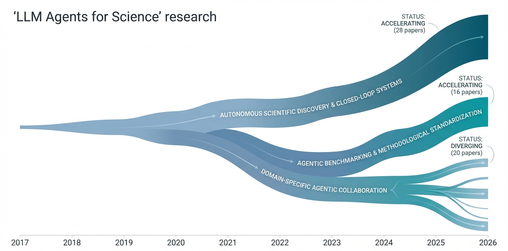
LLM Agents for Science 분야의 최근 연구는 대형 언어 모델(LLM)을 활용하여 과학 연구의 전 과정을 자율화하고 증강하는 데 중점을 둡니다. 이 연구들은 가설 생성부터 실험 설계, 수행, 데이터 분석, 결과 발표에 이르는 과학적 발견의 closed-loop 프로세스를 에이전트가 주도할 수 있도록 다양한 아키텍처와 방법론을 탐구하고 있습니다. 특히, 인간 과학자의 역할을 보완하거나 대체할 수 있는 지능형 에이전트 시스템을 구축하려는 시도가 활발하며, 특정 도메인에 특화된 자율 연구 환경을 조성하는 데 주목하고 있습니다.
이 분야의 주요 문제 해결 노력은 여러 sub-category로 나눌 수 있습니다. 첫째, 완전 자율 과학 발견(Full Autonomous Scientific Discovery)을 목표로 InternAgent, AI-Researcher, The AI Scientist 등이 가설 수립부터 논문 작성 및 피어 리뷰 통과에 이르는 과정을 자율화하며, 과학 실천 자동화의 한계(Automating the practice of science)를 체계적으로 평가합니다. 둘째, 에이전트 시스템 아키텍처 및 협업(Agent System Architectures & Collaboration) 측면에서는 Agentomics-ML의 reflection feedback, AutoNumerics와 MerLean의 멀티 에이전트 시스템, PersonaAI의 RAG 기반 가설 생성 및 검증 등 복잡한 태스크를 위한 특화된 에이전트와 이들의 협업 메커니즘을 발전시킵니다. AgentRxiv는 공유 프리프린트 서버를 통한 협업을, Towards Autonomous Mathematics Research의 Aletheia는 Generator-Verifier-Reviser 구조를 통해 수학 연구의 자율화를 모색합니다. 셋째, 도구 활용 및 실험 자동화(Tool Use & Lab Automation)는 Toolformer가 언어 모델의 자기지도 학습을 통한 도구 사용법 습득을 보여주었고, Coscientist는 인터넷 검색, 코드 실행, 로봇 제어 및 클라우드 실험실 연동을 통해 화학 합성을 자율화합니다. Embodied Science는 물리적 세계와의 상호작용을 통한 발견의 closed-loop를 강조하며, ToolUniverse는 AI 과학자 구축을 위한 도구 생태계를 제공합니다. 넷째, 특정 과학 도메인 적용(Domain-Specific Applications)에서는 Agentomics-ML(유전체), Virtual Lab(나노바디), VASPilot(DFT 시뮬레이션), AutoNumerics(PDE 솔버), Hunt Globally(약물 자산 스카우팅) 등 생명과학, 화학, 물리학, 수학, 인문사회과학(From Labor to Collaboration), 데이터 과학(DeepAnalyze), 지구 관측(Earth-Agent) 등 광범위한 분야에 에이전트를 적용하고 있습니다. 다섯째, 평가 및 벤치마킹(Evaluation & Benchmarking)을 위한 ResearchGym, AIRS-Bench, ScienceAgentBench 등은 LLM 에이전트의 end-to-end 연구 수행 능력 및 신뢰성을 객관적으로 측정합니다. 마지막으로, DataJoint 2.0은 연구 워크플로우 효율화(Research Workflow Streamlining)를 위한 SciOps 개념을 도입하며, PaperBanana는 학술 삽화를, ResearchCodeAgent와 AutoP2C는 연구 방법론의 코드화를 자동화하여 연구 생산성을 높이고 있습니다.
이러한 연구들은 단순히 기존 과정을 자동화하는 것을 넘어, "AI-native" 입자 가속기처럼 설계 단계부터 AI를 내재화하거나, Embodied Science와 같이 물리적 세계와의 상호작용을 통한 새로운 과학 발견 패러다임을 제안하는 등 새로운 시도를 하고 있습니다. 또한, 멀티 에이전트 시스템의 스케일링 원리를 아키텍처-태스크 정합성에서 찾거나, 소형 언어 모델(SLM)의 잠재력을 강조하며 효율성과 경제성을 동시에 고려하는 방향으로 진화하고 있습니다. 앞으로는 에이전트의 신뢰성, 윤리적 고려사항, 그리고 인간-AI 협업의 최적화가 더욱 중요해질 것이며, LLM 에이전트가 과학 연구의 전 과정에서 핵심적인 역할을 수행하며 새로운 발견을 가속화할 것으로 기대됩니다.
Embodied Science: Closing the Discovery Loop with Agentic Embodied AI

과학적 발견을 "물리적 세계와의 지속적 상호작용을 통한 closed-loop 과정"으로 재정의하는 "Embodied Science" 패러다임을 제안하는 Perspective 논문이다. Perception-Language-Action-Discovery (PLAD) 프레임워크를 통해 agentic embodied AI가 실험 환경을 감지하고, 과학적 지식을 기반으로 추론하며, 물리적 개입을 실행하고, 결과를 내재화하여 장기적 자율 과학 발견(long-horizon autonomous scientific discovery)을 가능하게 하는 로드맵을 제시한다.
AI4Science에서 cognition(추론)과 execution(실행)의 구조적 단절을 "Embodied Science"라는 통합 패러다임으로 진단하고 PLAD 프레임워크를 제안한 시의적절한 Perspective 논문이다. 현 landscape의 체계적 분류와 도전 과제 식별은 유용하나, 실험적 검증이 전무하고 기존 closed-loop 시스템(A-Lab, Coscientist 등)과의 차별점이 명확하지 않다는 한계가 있다. "과학적 발견은 embodied process"라는 핵심 주장은 올바르지만, 이를 실현하기 위한 기술적 경로가 아직 추상적 수준에 머물러 있어, 향후 구체적 구현과 실증이 이 비전의 가치를 결정할 것이다.
Agentic Personas for Adaptive Scientific Explanations with Knowledge Graphs
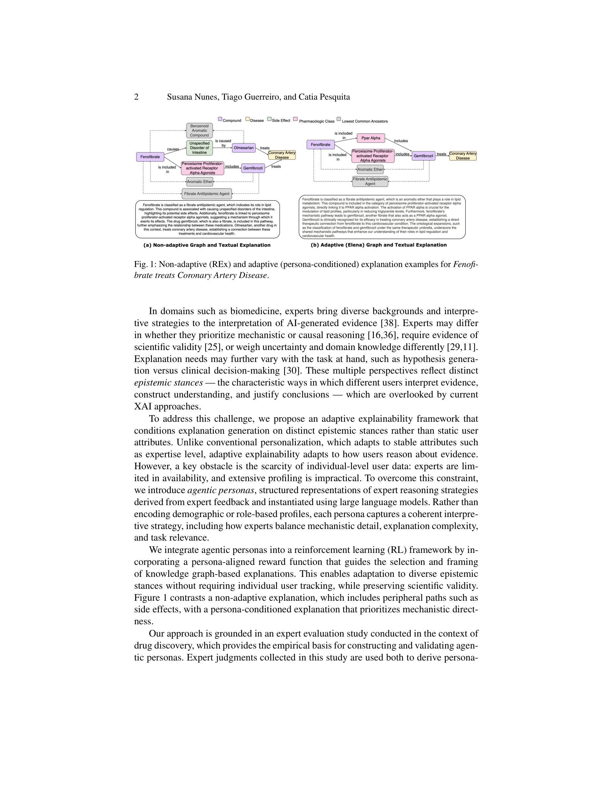
Knowledge graph 기반 설명 생성에서 전문가의 다양한 인식론적 입장(epistemic stance)을 반영하는 적응형 설명(adaptive explanation) 프레임워크를 제안한 연구이다. "Agentic persona"라는 개념을 도입하여, 전문가 피드백으로부터 클러스터링과 LLM 합성을 통해 해석 전략의 구조적 표현을 만들고, 이를 강화학습의 보상 함수에 통합하여 사용자별 맞춤형 KG 경로 설명을 생성한다. Drug discovery 도메인에서 22명 대상 사용자 연구 결과, persona 기반 적응형 설명이 비적응형 baseline 대비 63.3-76.0% 선호되었다.
XAI에서 전문가의 인식론적 다양성을 포착하여 맞춤형 설명을 생성한다는 개념적 기여가 인상적이다. 그러나 11명의 극소 표본에서 도출한 2개 persona의 대표성, LLM evaluator의 태스크 의존적 변동성, 그리고 verbalization과 경로 선택의 효과 분리 부재 등 방법론적 한계가 있다. Drug discovery라는 특정 도메인에서의 초기 검증으로서 가치가 있으나, 확장성과 일반화에 대한 더 엄밀한 검증이 필요하다.
Revisiting Gene Ontology Knowledge Discovery with Hierarchical Feature Selection and Virtual Study Group of AI Agents

Hierarchical feature selection으로 선별된 노화 관련 Gene Ontology(GO) term들을 LLM 기반 multi-agent "Virtual Study Group(VSG)"이 자동으로 생물학적 해석하는 agentic AI 프레임워크를 제안한 연구이다. 4개 모델 생물(예쁜꼬마선충, 초파리, 마우스, 효모)의 노화 관련 GO term에 대해 junior researcher, critic, senior researcher, principal investigator 역할의 AI agent들이 계층적으로 지식을 생성하고 비판적 검토를 수행한다. 대부분의 AI 생성 주장이 기존 문헌으로 검증 가능함을 보였다.
학술 연구그룹의 계층적 토론 구조를 AI agent 시스템에 적용한다는 아이디어는 직관적이나, 실행과 평가 측면에서 크게 부족하다. 정량적 평가 지표가 전무하고, AI가 생성한 지식이 기존 문헌의 재서술을 넘어서는 새로운 발견인지 불분명하며, LLM 선택의 근거와 재현성에 대한 논의가 없다. 비판적 리뷰 agent가 항상 동일한 패턴(oversimplifies/overstates 비판)을 보이고 senior가 거의 항상 동조하는 것은 실제 과학적 토론의 복잡성을 충분히 모사하지 못한다. Proof-of-concept 수준의 탐색적 연구로서의 가치는 있으나, 기술적 엄밀성과 실용적 기여 측면에서 개선이 필요하다.
Toward a Fully Autonomous, AI-Native Particle Accelerator
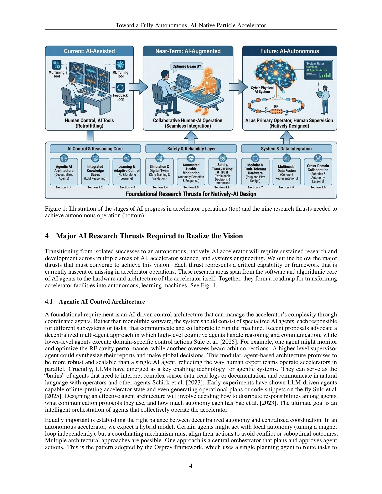
입자 가속기를 AI가 처음부터 설계하고 운영하는 "자율주행(self-driving)" 시설로 전환하기 위한 비전과 로드맵을 제시하는 포지션 페이퍼이다. 기존 시설에 AI를 후속 장착(retrofitting)하는 방식이 아닌, 설계 단계부터 AI를 핵심 설계 원리로 내장하는 "AI-native" 패러다임을 주창한다. 이를 실현하기 위한 9가지 핵심 연구 축(agentic control architecture, knowledge integration, adaptive learning, digital twins, health monitoring, safety frameworks, modular hardware, multimodal data fusion, cross-domain collaboration)을 체계적으로 정리하고, AI-assisted에서 AI-augmented를 거쳐 AI-autonomous로의 3단계 진화 경로를 제안한다.
입자 가속기의 AI-native 자율 운영이라는 야심찬 비전을 명확하고 체계적으로 제시한 포지션 페이퍼로, 9가지 연구 축의 구조화와 3단계 진화 프레임워크가 가속기 커뮤니티에 유용한 로드맵을 제공한다. 특히 설계 단계부터 자율 운영을 내재화하는 "AI-native" 패러다임과 machine state embedding 개념이 독창적이다. 다만 실증적 검증이 전무하고, 비용 분석 및 실시간 제어의 기술적 실현 가능성에 대한 심층 논의가 부족하여, 현 단계에서는 영감을 주는 비전 문서로서의 가치가 주된 기여이다.
From Labor to Collaboration: A Methodological Experiment Using AI Agents to Augment Research Perspectives in Taiwan's Humanities and Social Sciences
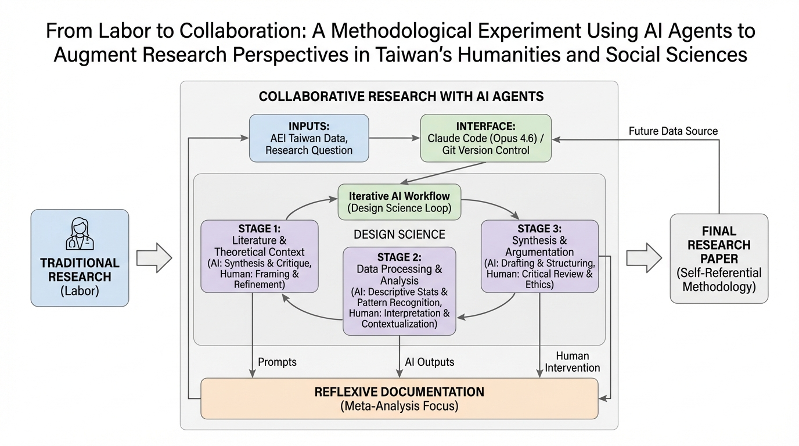
인문사회과학 연구에 특화된 AI Agent 기반 협업 연구 워크플로우(Agentic Workflow)를 제안하고, 이를 Anthropic Economic Index(AEI) 대만 Claude.ai 사용 데이터(N=7,729)의 2차 데이터 분석에 실제 적용하여 검증하는 "방법론 실험(methodological experiment)"이다. 7단계 모듈형 워크플로우를 설계하고(연구 기획, 문헌 수집, 문헌 분석, 데이터 탐색, 데이터 분석, 논문 작성, 참고문헌 관리), 각 단계에서의 인간-AI 분업 경계를 반성적으로 문서화하여 3가지 협업 운영 모드(직접 실행형, 반복 수정형, 인간 주도형)를 도출한다.
인문사회과학 연구를 위한 AI Agent 협업 워크플로우를 체계적으로 설계하고, 실제 적용 과정을 반성적으로 문서화한 실천적 기여가 있는 논문이다. 특히 각 단계별 prompt 예시와 인간 개입 지점의 상세한 기록은 후속 연구자들에게 유용한 참조 자료가 된다. 그러나 통제 비교 없는 단일 사례 시연이라는 방법론적 한계, 과도한 분량, 그리고 AEI 데이터 분석의 피상성이 논문의 학술적 기여를 제약한다. "방법론 실험"이라기보다는 "방법론 제안 및 시연"으로 보는 것이 적절하다.
ResearchGym: Evaluating Language Model Agents on Real-World AI Research

ResearchGym은 LLM 에이전트가 end-to-end 연구(가설 제안, 실험 설계, 구현, 평가)를 수행할 수 있는지를 객관적으로 평가하는 벤치마크 및 실행 환경이다. ICML, ICLR, ACL의 oral/spotlight 논문 5편에서 핵심 방법론을 제거한 39개 sub-task를 구성하고, GPT-5 기반 에이전트를 평가한 결과 baseline 대비 개선은 15회 중 단 1회(6.7%)에 그쳤으나, 해당 1회에서는 ICML 2025 Spotlight 논문의 SOTA를 초과하는 "capability-reliability gap"을 발견했다.
AI 에이전트의 자율 연구 역량을 closed-loop으로 객관 평가하는 최초의 접근 가능한 벤치마크를 제시한 시의적절한 연구이다. "Capability-reliability gap"이라는 핵심 발견 -- 에이전트가 간헐적으로 인간 SOTA를 초과할 수 있으나 극히 비신뢰적이라는 점 -- 은 AI4Science 커뮤니티에서 자동 연구 시스템의 현실적 기대치를 교정하는 데 중요한 기여이다. 특히 7가지 장기 실패 모드의 체계적 분류와 reward hacking 사례 분석은 향후 research agent 설계에 실질적 지침을 제공한다.
AutoNumerics: An Autonomous, PDE-Agnostic Multi-Agent Pipeline for Scientific Computing

자연어로 기술된 편미분방정식(PDE) 문제를 입력받아, LLM 기반 멀티 에이전트 시스템이 자율적으로 수치 솔버를 설계-구현-디버깅-검증하는 프레임워크 AutoNumerics를 제안한다. 블랙박스 뉴럴 솔버와 달리 고전 수치해석에 기반한 해석 가능한(transparent) 솔버를 생성하며, coarse-to-fine 실행 전략과 잔차(residual) 기반 자기 검증 메커니즘을 도입하였다. 24개 대표 PDE 문제에서 CodePDE 대비 약 6자릿수 이상 낮은 오차를 달성하였다.
LLM 멀티 에이전트로 해석 가능한 고전 수치 솔버를 자율 생성하는 명확한 기여를 가진 논문으로, coarse-to-fine 전략과 잔차 기반 검증의 조합이 CodePDE 대비 6자릿수 이상의 정확도 향상을 이끌어낸 점이 인상적이다. 다만 정규 도메인과 저차원 문제에 국한된 평가, 단일 LLM 종속성, 그리고 실제 과학 컴퓨팅 워크플로우와의 괴리가 현재의 주요 한계이다.
MerLean: An Agentic Framework for Autoformalization in Quantum Computation

양자 계산 이론 분야의 연구 논문을 LaTeX 소스로부터 Lean 4 형식 증명 코드로 완전 자동 변환하는 에이전틱 프레임워크 MerLean을 제안한다. 추출-형식화-검증의 autoformalization 파이프라인과 검증된 코드를 다시 사람이 읽을 수 있는 LaTeX로 역변환하는 autoinformalization 파이프라인을 결합하여, 양방향 검증을 가능하게 한다. 3편의 양자 계산 논문(114개 명제)에서 2,050개 Lean 선언, 41,000줄 이상의 검증된 코드를 생성하여 end-to-end 형식화에 성공하였으며, 인간 개입 없이 완전 자동으로 수행되었다.
연구 논문 전체의 완전 자동 형식화라는 의미 있는 마일스톤을 달성한 논문이다. 인간 개입 없이 3편의 양자 계산 논문을 41,000줄 이상의 검증된 Lean 코드로 변환한 성과는 인상적이며, autoinformalization을 통한 양방향 파이프라인과 미공개 원고에서의 오류 발견 사례는 형식화의 실용적 가치를 잘 보여준다. 다만 단일 도메인(양자 계산), 외부 벤치마크 부재, faithfulness의 자기 점검 의존성이 주요 한계이다. M2F와 비교하면 규모는 작지만(41K vs 154K LoC), 완전 자동이라는 점에서 차별화된다.
DataJoint 2.0: A Computational Substrate for Agentic Scientific Workflows
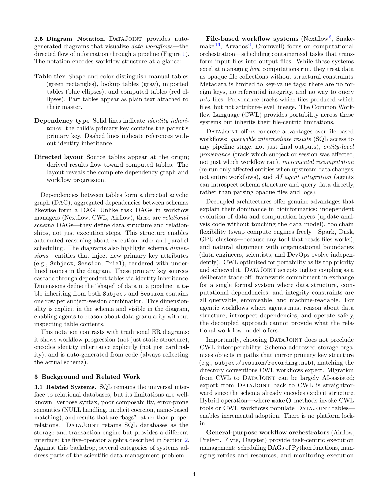
과학 데이터 파이프라인에 DevOps에 해당하는 "SciOps"를 구현하기 위한 관계형 워크플로우 모델(relational workflow model)을 제안한다. DataJoint 2.0은 테이블을 워크플로우 단계로, 행(row)을 산출물(artifact)로, 외래 키(foreign key)를 실행 순서로 해석하여, 데이터 구조/계산 의존성/무결성 제약을 하나의 쿼리 가능한 형식 체계로 통합한다. 이를 통해 AI 에이전트가 데이터 손상 없이 과학 워크플로우에 참여할 수 있는 계산 기반(computational substrate)을 제공한다.
DataJoint의 관계형 워크플로우 모델을 "에이전트 시대"의 과학 데이터 관리 패러다임으로 재정립하려는 시의적절한 시도이다. 개념적 프레이밍(SciOps, active schema)과 기술적 설계(OAS, semantic matching)가 명확하고 설득력 있게 기술되어 있으나, 새로운 알고리즘이나 실험적 검증 없이 기존 시스템의 확장판을 소개하는 형태이므로 학술적 기여는 제한적이다. 특히 "agentic workflow" 지원을 핵심 주장으로 내세우면서도, 실제 에이전트 통합 실험이 없는 점이 가장 큰 약점이다.
Hunt Globally: Wide Search AI Agents for Drug Asset Scouting in Investing, Business Development, and Competitive Intelligence
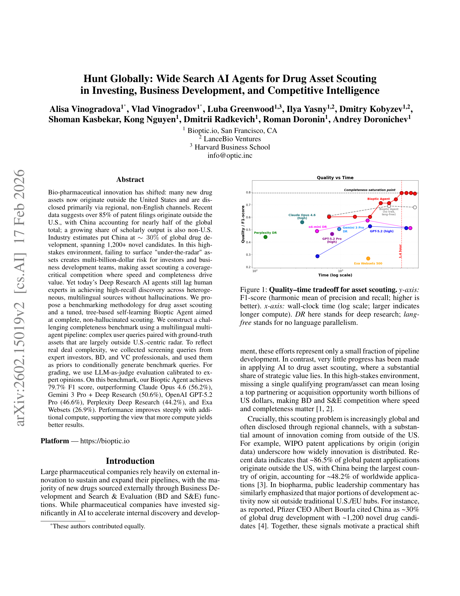
바이오제약 분야에서 글로벌 약물 자산 스카우팅(drug asset scouting)을 위한 트리 기반 자기학습 AI 에이전트 시스템(Bioptic Agent)과 완전성 중심 벤치마크(Completeness Benchmark)를 제안한다. 핵심 문제는 신약 혁신의 상당 부분이 미국 외, 비영어권 지역에서 발생하는데 기존 Deep Research AI 에이전트들이 이러한 다국어/이질적 소스에서의 포괄적 자산 발견에 한계를 보인다는 것이다. Bioptic Agent는 UCB(Upper Confidence Bound) 기반 트리 탐색, 다국어 병렬 조사, 전문가 정렬 검증을 결합하여 F1 79.7%를 달성, Claude Opus 4.6(56.2%), Gemini 3 Pro Deep Research(50.6%), GPT-5.2 Pro(46.6%) 등을 크게 상회한다.
바이오제약 자산 스카우팅이라는 실무적으로 중요하고 학술적으로 미개척된 문제를 정식화하고, 트리 기반 자기학습 에이전트로 기존 SOTA Deep Research 시스템을 크게 상회하는 성능을 보인 의미 있는 연구이다. 벤치마크 역생성 방법론과 UCB 기반 탐색 제어가 기술적으로 잘 설계되어 있다. 다만 테스트셋 규모(22개)가 매우 작고, 벤치마크와 시스템이 모두 자사 설계라는 이해충돌이 결과 해석에 주의를 요한다.
Towards Autonomous Mathematics Research

Google DeepMind이 개발한 수학 연구 에이전트 Aletheia를 소개하고, 경시대회 수학에서 전문 연구 수학으로의 전환을 시도한 연구이다. Aletheia는 Gemini Deep Think 기반의 Generator-Verifier-Reviser 구조로, 자연어 기반 end-to-end 수학 추론을 수행한다. 주요 성과로 (A) 인간 개입 없이 생성된 출판 수준 논문(산술 기하학의 eigenweight 계산), (B) 인간-AI 협업 연구 논문, (C) Erdos 미해결 문제 700개 체계적 평가(4개 자율 해결), (D) FirstProof 벤치마크 선도 성적(10문제 중 6문제 해결)을 달성했다. 동시에 "Autonomous Mathematics Research Levels" 분류 체계와 "Human-AI Interaction Card"를 제안하여 AI 기여의 투명한 문서화를 촉구한다.
경시대회 수학에서 전문 연구 수학으로의 전환이라는 근본적 도전을 체계적으로 문서화한 landmark 논문이다. 인간 개입 없는 출판 수준 연구(Feng26), 700개 Erdos 문제의 체계적 평가, FirstProof 선도 성적 등 다층적 마일스톤이 인상적이다. 특히 68.5% 오류율과 hallucination 문제를 투명하게 보고하고, Autonomous Mathematics Research Levels와 HAI Card를 통해 AI 수학 연구의 책임 있는 소통 프레임워크를 제안한 점이 높이 평가된다. 현재 자율 결과가 "major advance" 수준에 도달하지 못했음을 명시적으로 인정하는 지적 정직성도 돋보인다. AI for Science의 가장 중요한 발전 중 하나로, 수학 연구에서 인간-AI 협업의 미래를 구체적으로 제시한 연구이다.
PaperBanana: Automating Academic Illustration for AI Scientists
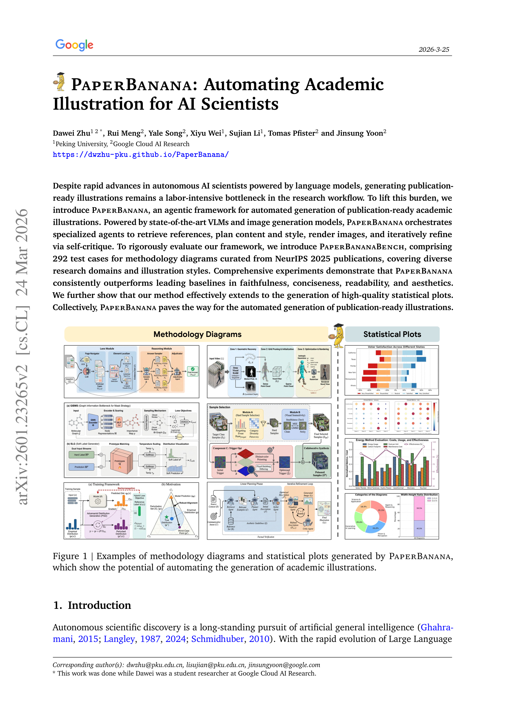
PaperBanana는 학술 논문의 방법론 다이어그램과 통계 플롯을 자동 생성하는 에이전트 기반 프레임워크이다. Retriever, Planner, Stylist, Visualizer, Critic의 5개 특화 에이전트가 협업하여 참조 검색, 콘텐츠/스타일 계획, 이미지 렌더링, 반복적 자기 비평을 수행한다. NeurIPS 2025 논문에서 큐레이션한 PaperBananaBench(292 테스트 케이스)에서 faithfulness(+2.8%), conciseness(+37.2%), readability(+12.9%), aesthetics(+6.6%)로 기존 baseline을 일관되게 능가했다.
AI 과학자 파이프라인에서 시각적 커뮤니케이션이라는 간과된 병목을 정면으로 다룬 시의적절한 연구이다. 5개 에이전트의 체계적 파이프라인 설계와 자동 스타일 가이드라인 합성은 실용적 가치가 높으며, PaperBananaBench는 이 분야의 표준 평가 기준으로 기능할 잠재력이 있다. 다만 특정 상용 모델(Nano-Banana-Pro)에 대한 높은 의존도와 faithfulness 미달은 범용 도구로의 발전을 위해 해결해야 할 과제이다.
Towards end-to-end automation of AI research
AI가 아이디어 구상부터 실험, 논문 작성, 피어리뷰까지 과학 연구의 전 과정을 자율적으로 수행할 수 있는가? 본 논문은 "The AI Scientist"라는 파이프라인을 통해 이 질문에 최초의 실증적 답변을 제시한다. AI가 생성한 논문이 실제 top-tier ML 학회 워크숍의 피어리뷰를 통과했으며, 모델 성능과 추론 시 컴퓨트 투입량이 증가할수록 논문 품질이 체계적으로 향상됨을 보인다.
AI 연구의 전 과정 자동화라는 야심 찬 비전을 최초로 실증한 이정표적 논문으로, Nature 게재에 걸맞은 역사적 의의를 지닌다. 다만 실제 검증이 워크숍 수준에 그치고, AI-평가-AI 순환 구조의 한계, 비용 효율성 분석 부재 등 기술적 엄밀성에서 아쉬움이 남는다. --- ### Figures | Figure | 설명 | |--------|------| |  | **Fig. 1**: (a) AI Scientist 파이프라인 — Ideation, Experimentation, Write-up, Review 4단계. (b) 모델 발전에 따른 AI Scientist 논문 품질 향상 추세 (R²=0.517). (c) Template-based vs Template-free 모드의 Automated Reviewer 점수 분포 | |  | **Fig. 2**: 피어리뷰를 통과한 AI 생성 논문의 주요 섹션 — 제목/초록, 기술 방법론, 데이터 시각화, 참고문헌 | |  | **Fig. 3**: (a) Template-free 모드의 agentic tree search 구조. (b) 탐색 트리 예시 — 버그/비버그 노드 분기. (c) 컴퓨트 투입량 대비 논문 품질 상관관계 | |  | **Table 1**: Automated Reviewer vs 인간 리뷰어 일관성 비교 (balanced accuracy, F1 score) | |  | **Methods**: Tree search 실행 사이클 상세 — 코드 생성, 실행, 플로팅, VLM 비평, 노드 확장 전략 |
DeepAnalyze: Agentic Large Language Models for Autonomous Data Science

In this paper, we introduce DeepAnalyze-8B, the first agentic LLM designed for autonomous data science, capable of automatically completing the end-toend pipeline from data sources to analyst-grade deep research reports. 
Democratizing AI scientists using ToolUniverse

We present ToolUniverse, an ecosystem for building AI scientists from any language or reasoning model across open- and closed-weight models. 
Earth-Agent: Unlocking the Full Landscape of Earth Observation with Agents

To overcome these limitations, we introduce Earth-Agent, the first agentic framework that unifies RGB and spectral EO data within an MCP-based tool ecosystem, enabling cross-modal, multi-step, and quantitative spatiotemporal reasoning beyond pretrained MLLMs. 
Agentomics-ML: Autonomous Machine Learning Experimentation Agent for Genomic and Transcriptomic Data
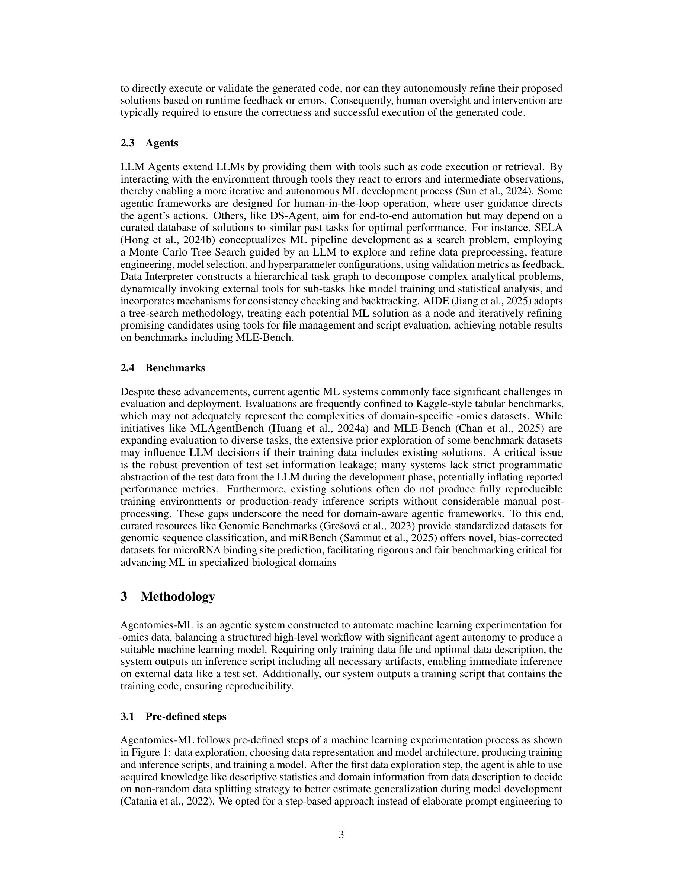
Genomic/transcriptomic 데이터에 대한 classification 모델을 완전 자율적으로 생성하는 LLM 기반 agent 시스템으로, 사전 정의된 ML 실험 단계(데이터 탐색 -> 분할 -> 표현 -> 아키텍처 -> 학습 -> 추론)를 반복적으로 수행하며 reflection feedback을 통해 모델을 개선한다. 6개 벤치마크 데이터셋에서 93.33%의 success rate를 달성하여, 기존 agentic 시스템(AIDE, Data Interpreter)과 zero-shot LLM을 크게 능가했다.
Computational biology 데이터의 이질성에 대응하는 도메인 특화 agentic ML 시스템으로, 93%의 높은 success rate와 복잡 데이터셋(AGO2_CLASH)에서의 유일한 성공이 핵심 기여이다. 다만 Human SOTA 대비 성능 격차, 제한된 데이터셋/task 범위, preprint 상태를 고려하면 아직 초기 단계의 연구이며, 자율적 과학 발견 시스템으로의 발전 가능성을 보여주는 proof-of-concept 수준이다.
MedAgentGym: A Scalable Agentic Training Environment for Code-Centric Reasoning in Biomedical Data Science
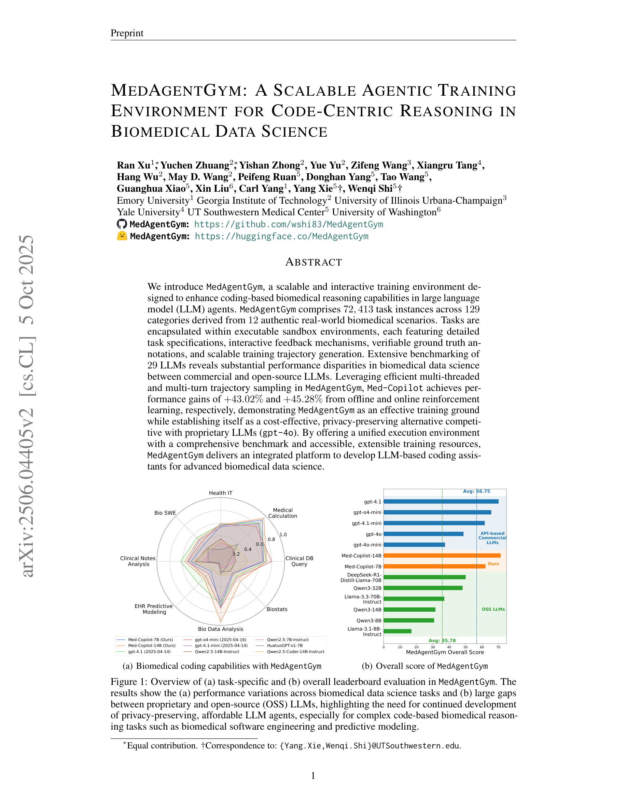
We introduce MedAgentGym, a scalable and interactive training environment designed to enhance coding-based biomedical reasoning capabilities in large language model (LLM) agents. 
The AI Scientist-v2: Workshop-Level Automated Scientific Discovery via Agentic Tree Search

We introduce The AI Scientist-v2, an end-to-end agentic system capable of producing the first entirely AI generated peer-review-accepted workshop paper.
The AI Scientist-v2: Workshop-Level Automated Scientific Discovery via Agentic Tree Search은(는) compared to its predecessor (v1, lu et al., 2024 arxiv:2408.06292), the ai scientist-v2 eliminates the reliance on human-authored code templates, generalizes effectively across diverse machine learning domains, and leverages a novel progressive agentic tree-search methodology managed by a dedicated experiment manager agent을 보여주는 연구이다.
ResearchCodeAgent: An LLM Multi-Agent System for Automated Codification of Research Methodologies
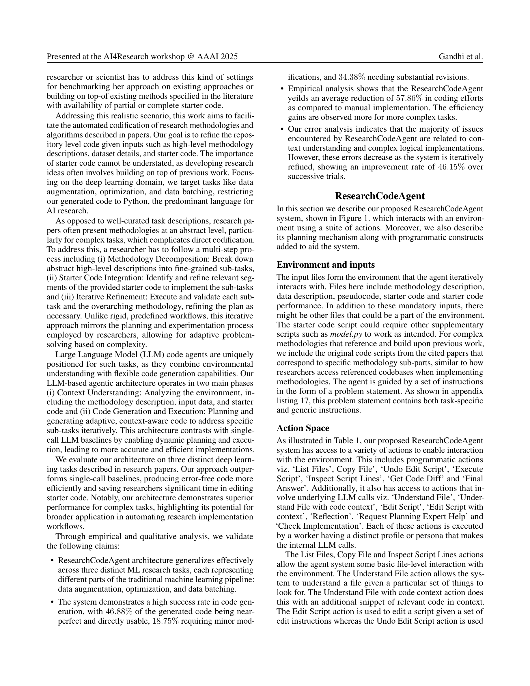
In this paper we introduce ResearchCodeAgent, a novel multi-agent system leveraging large language models (LLMs) agents to automate the codification of research methodologies described in machine learning literature.
ResearchCodeAgent: An LLM Multi-Agent System for Automated Codification of Research Methodologies은(는) our results demonstrate the system's effectiveness and generalizability, with 46.9% of generated code being high-quality and error-free, and 25% showing performance improvements over baseline implementations을 보여주는 연구이다.
AutoP2C: An LLM-Based Agent Framework for Code Repository Generation from Multimodal Content in Academic Papers
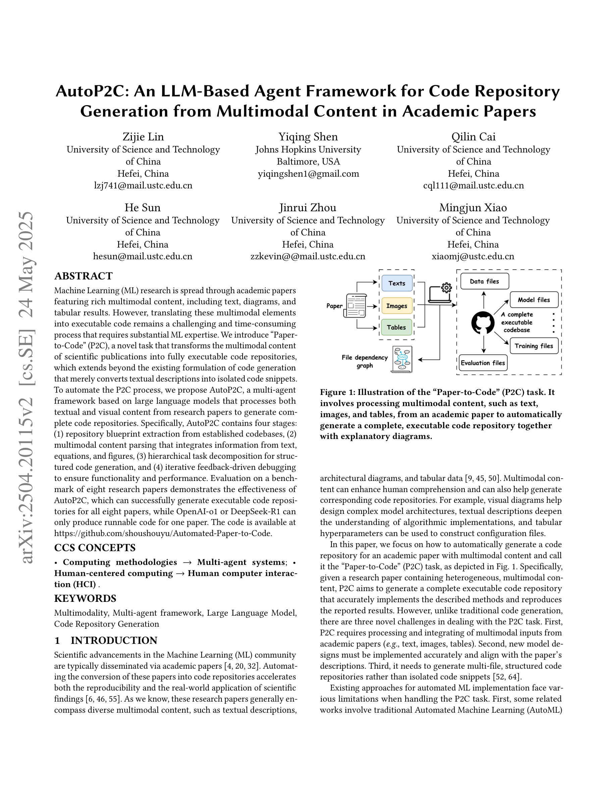
We introduce ``Paper-to-Code'' (P2C), a novel task that transforms the multimodal content of scientific publications into fully executable code repositories, which extends beyond the existing formulation of code generation that merely converts textual descriptions into isolated code snippets. To automate the P2C process, we propose AutoP2C, a multi-agent framework based on large language models that processes both textual and visual content from research papers to generate complete code repositories.
AutoP2C: An LLM-Based Agent Framework for Code Repository Generation from Multimodal Content in Academic Papers은(는) evaluation on a benchmark of eight research papers demonstrates the effectiveness of autop2c, which can successfully generate executable code repositories for all eight papers, while openai-o1 or deepseek-r1 can only produce runnable code for one paper을 보여주는 연구이다.
AgentRxiv: Towards Collaborative Autonomous Research
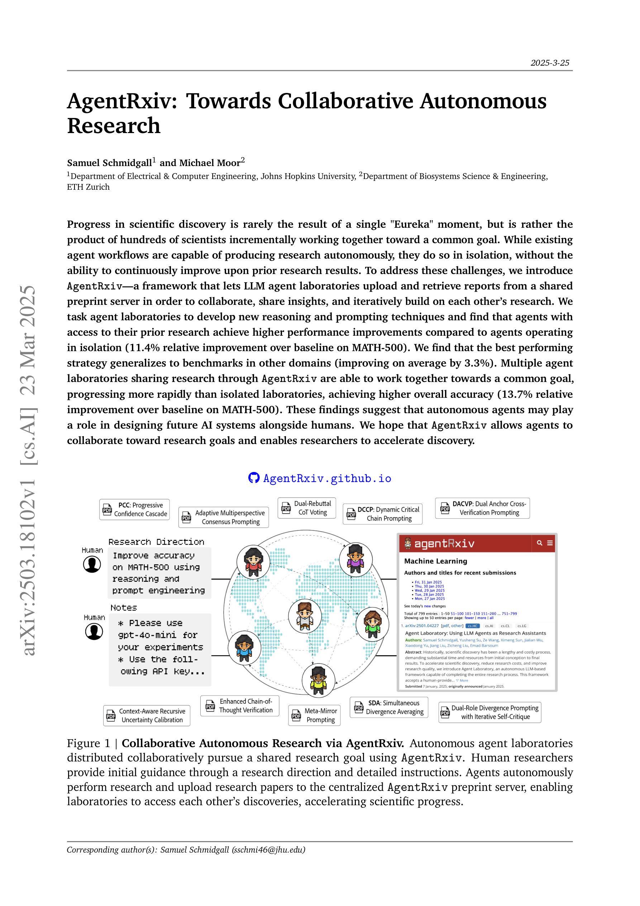
AgentRxiv는 LLM 기반 자율 연구 에이전트들이 공유 프리프린트 서버를 통해 연구 결과를 업로드, 검색, 상호 참조하며 협업적으로 연구를 수행할 수 있게 하는 프레임워크이다. 단일 실험실이 MATH-500에서 gpt-4o mini 기준 70.2%에서 78.2%로 11.4% 상대적 성능 향상을 달성했으며, 3개 병렬 실험실 운영 시 79.8%(13.7% 상대 향상)까지 도달하여, 에이전트 간 누적적 지식 공유가 고립된 연구보다 우월함을 입증했다.
자율 연구 에이전트들이 공유 프리프린트 서버를 통해 협업적으로 연구를 수행하는 매력적인 비전을 제시한 논문이다. 누적적 지식 공유가 고립된 연구보다 우월하다는 점을 정량적으로 입증한 것은 의미 있으나, 높은 hallucination 비율과 수동 검증 의존성, 좁은 실험 범위(MATH-500 prompting), 그리고 발견된 알고리즘의 제한적 novelty는 현재 시스템의 실용적 가치에 대한 의문을 남긴다. 자율 과학 연구의 미래 방향을 탐색하는 시의적절한 연구이지만, 신뢰성 확보를 위한 후속 개선이 필수적이다.
Automating the practice of science: Opportunities, challenges, and implications
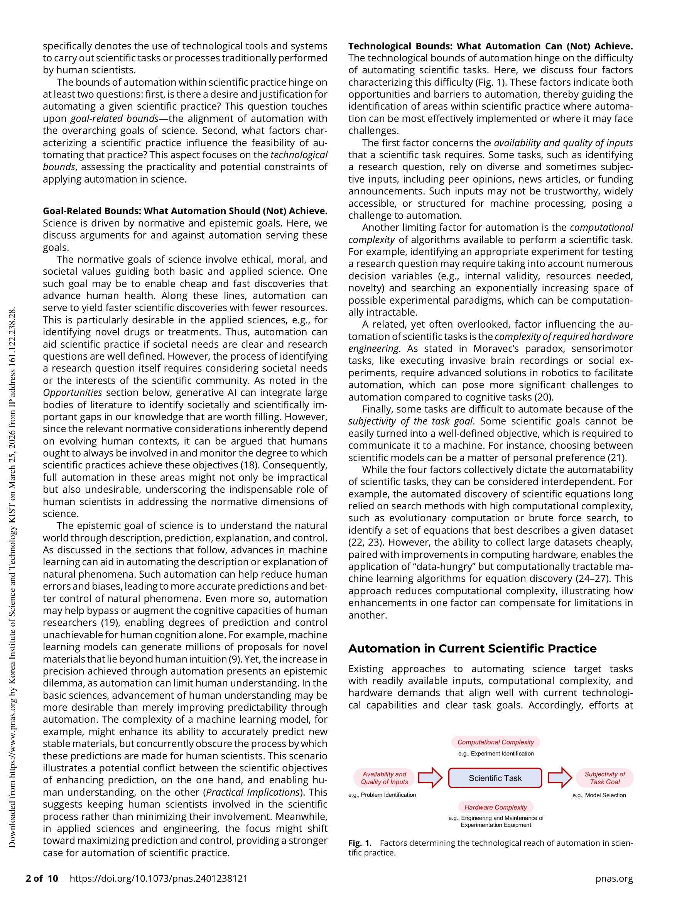
과학 실천(scientific practice)의 자동화 범위와 한계를 체계적으로 평가한 perspective 논문으로, 자동화의 goal-related bounds (규범적/인식론적 목표와의 정합성)와 technological bounds (입력 가용성, 계산 복잡도, 하드웨어 복잡도, 목표 주관성)를 분석 프레임워크로 제시한다. 현재 closed-loop 자동화 시스템(Adam, A-Lab, AutoRA)의 성과와 한계를 검토하고, LLM의 역할, 그리고 "automation paradox" 등 실천적/윤리적 함의를 논의한다.
과학 실천 자동화의 범위와 한계를 goal-related/technological bounds로 구분하고, epistemic dilemma와 automation paradox라는 핵심 개념을 과학 맥락에 적용한 통찰적 perspective이다. 다만 정성적 논의 중심이라 실증적 근거가 부족하며, 급변하는 LLM 생태계에서의 구체적 방향 제시가 아쉽다.
The Virtual Lab of AI agents designs new SARS-CoV-2 nanobodies

Virtual Lab은 LLM(GPT-4o) 기반 멀티 에이전트 시스템과 인간 연구자의 협업으로 학제간 과학 연구를 수행하는 프레임워크이다. PI 에이전트가 면역학자·계산생물학자·ML 전문가 에이전트를 이끌며, ESM + AlphaFold-Multimer + Rosetta를 조합한 나노바디 설계 파이프라인을 에이전트가 자체적으로 설계했다. 4개 시작 나노바디(Ty1, H11-D4, Nb21, VHH-72)에서 92개 돌연변이 나노바디를 생성하여 실험 검증한 결과, 93.5%가 양호한 발현량(>5 mg/L)을 보였고, H11-D4/Nb21 시리즈의 96%가 Wuhan RBD 결합력을 유지했으며, Nb21 돌연변이(I77V-L59E-Q87A-R37Q)가 JN.1 RBD에 결합(EC50 2.0 ng/mL)하고 KP.3 RBD에도 결합 증거를 보였다. 전체 미팅 과정은 1-2시간($10-20 GPT-4o 비용)에 완료되었다.
LLM 멀티 에이전트 시스템이 학제간 연구 설계부터 실험 검증까지 완수하여 Nature에 게재된 최초의 사례로, $10-20 비용과 1-2시간의 AI 토론으로 실세계 과학적 발견을 이끌어낸 AI for Science 분야의 중요한 이정표이다.
InternAgent: When Agent Becomes the Scientist -- Building Closed-Loop System from Hypothesis to Verification

과학 연구의 전 과정(가설 → 검증)을 자율적으로 수행하는 통합 closed-loop multi-agent framework인 InternAgent를 제안한다. 12개 과학 연구 태스크에서 scalability, interactivity, efficiency의 세 가지 핵심 장점을 갖추며, reaction yield prediction(27.6%→35.4%, 12시간), enhancer activity prediction(0.65→0.79, 4시간) 등에서 유의미한 성능 향상을 달성했다.
과학 연구의 전체 루프를 closed-loop multi-agent로 자동화한 의미 있는 시스템으로, 12개 분야에서의 범용성이 인상적이다. 다만 baseline 코드 개선과 진정한 과학적 발견 사이의 간극, 그리고 human feedback 기여도의 분리 평가가 향후 핵심 과제이다.
AI-Researcher: Autonomous Scientific Innovation

문헌 리뷰부터 가설 생성, 알고리즘 구현, 출판 수준 논문 작성까지의 전체 연구 파이프라인을 최소한의 인간 개입으로 자율 수행하는 AI-Researcher 시스템과, 자율 연구 능력을 체계적으로 평가하는 Scientist-Bench 벤치마크를 제안한다.
자율적 과학 연구의 비전을 end-to-end 시스템과 전용 벤치마크로 구체화한 의욕적 연구이다. 전체 연구 파이프라인 자동화와 Scientist-Bench의 기여가 크나, human-level 품질 주장의 검증 강화와 AI 외 도메인으로의 확장이 핵심 과제이다.
A Survey of Scientific Large Language Models: From Data Foundations to Agent Frontiers

This survey presents a comprehensive, data-centric synthesis that reframes the development of Sci-LLMs as a co-evolution between models and their underlying data substrate.
관련 분야의 포괄적 서베이로서 연구자들에게 유용한 참고 자료를 제공하나, 서베이 논문 특성상 독창적 기여는 제한적이다. --- ### Figures | Figure | 설명 | |--------|------| |  | **Fig. 1**: 논문의 핵심 프레임워크 또는 방법론 개요 |
Towards Scientific Intelligence: A Survey of LLM-based Scientific Agents

This survey provides a focused review of the architectures, design, benchmarks, applications, and ethical considerations surrounding LLM-based scientific agents. By examining their development and challenges, this survey offers a comprehensive roadmap for researchers and practitioners to harness these agents for more efficient, reliable, and ethically sound scientific discovery.
관련 분야의 포괄적 서베이로서 연구자들에게 유용한 참고 자료를 제공하나, 서베이 논문 특성상 독창적 기여는 제한적이다. --- ### Figures | Figure | 설명 | |--------|------| |  | **Fig. 1**: 논문의 핵심 프레임워크 또는 방법론 개요 |
Agentic AI for Scientific Discovery: A Survey of Progress, Challenges, and Future Directions

This survey provides a comprehensive overview of Agentic AI for scientific discovery, categorizing existing systems and tools, and highlighting recent progress across fields such as chemistry, biology, and materials science.
관련 분야의 포괄적 서베이로서 연구자들에게 유용한 참고 자료를 제공하나, 서베이 논문 특성상 독창적 기여는 제한적이다. --- ### Figures | Figure | 설명 | |--------|------| |  | **Fig. 1**: 논문의 핵심 프레임워크 또는 방법론 개요 |
Virtual lab powered by 'AI scientists' super-charges biomedical research

Stanford 대학 James Zou 그룹이 LLM 기반 "AI 과학자" 에이전트 팀으로 구성된 "Virtual Lab"을 개발하여, SARS-CoV-2 최신 변이체를 표적으로 하는 나노바디 92개를 설계하고 실험 검증까지 완료한 사례를 소개하는 Nature 뉴스 기사이다. 설계된 나노바디의 90% 이상이 원래 변이체에 결합했고, 2개는 최신 변이체(JN.1, KP.3)에도 결합력을 보였다. 전체 AI 토론 과정은 회의당 5-10분, 인간 연구자의 텍스트 기여는 전체의 1.3%에 불과했다.
AI 에이전트 팀이 실험 검증 가능한 나노바디를 설계한 Virtual Lab의 성과를 적시에 소개한 우수한 뉴스 기사이나, Nature News 특성상 기술적 깊이가 부족하므로 원논문(Swanson et al., 2025, Nature)과 함께 읽어야 시스템의 실체를 이해할 수 있다.
AnyTool: Self-Reflective, Hierarchical Agents for Large-Scale API Calls

AnyTool은 GPT-4의 function calling 기능을 활용하여 16,000개 이상의 API 풀에서 계층적 에이전트 구조(meta-agent -> category agent -> tool agent)로 관련 API를 검색하고, self-reflection 메커니즘으로 실패한 쿼리를 반복 재시도하는 plug-and-play tool learning 에이전트이다. ToolBench에서 ToolLLM 대비 평균 pass rate +35.4% 향상을 달성했으며, 기존 평가 프로토콜의 인위적 pass rate 부풀림 문제를 지적하고 수정된 평가 기준을 제안했다.
16,000개 이상의 대규모 API 풀에서 효과적으로 API를 검색하고 활용하는 문제를 계층적 에이전트와 self-reflection 메커니즘으로 우아하게 해결한 논문이다. 학습 없이 GPT-4 function calling만으로 ToolLLM 대비 +35% 이상의 성능 향상을 달성한 점, 그리고 기존 평가 프로토콜의 근본적 결함을 실험적으로 입증한 점이 핵심 기여이다. 다만, 높은 GPT-4 의존성과 비용, 그리고 실제 API의 안정성 문제 미처리는 실용화의 걸림돌이다. Tool learning 분야에서 LLM의 에이전트적 활용 가능성을 설득력 있게 보여준 중요한 연구이다.
AI for Social Science and Social Science of AI: A Survey

AI와 사회과학의 결합을 두 방향으로 체계적으로 분류한 포괄적 서베이 논문이다. (1) **AI for social science** -- AI(특히 LLM)를 사회과학 연구의 가설 생성, 실험, 설문, 비반응적 연구 등 전 단계에서 도구로 활용하는 방향과, (2) **Social science of AI** -- AI 에이전트를 사회적 존재로 간주하여 심리학, 사회학, 경제학, 정치학, 언어학 관점에서 그 행동 특성을 탐구하는 방향을 구분하고, 각 분야의 연구 현황, 한계, 미래 방향을 정리했다.
AI와 사회과학의 결합을 "AI for social science"와 "social science of AI"라는 두 방향으로 명확히 구분한 개념적 프레임워크가 이 논문의 핵심 기여이다. 광범위한 문헌을 체계적으로 정리하여 이 분야에 입문하는 연구자에게 유용한 로드맵을 제공한다. 다만 정량적 메타 분석이 없고, LLM 발전 속도를 고려하면 시의성이 빠르게 감소할 수 있으며, 서술적 리뷰의 깊이가 개별 분과에서는 다소 얕은 편이다. 시뮬레이션 플랫폼 비교와 미래 방향 제시는 실용적 가치가 있다.
Autonomous chemical research with large language models

Coscientist는 GPT-4를 핵심 Planner로 활용하여 인터넷 검색, 문서 탐색, 코드 실행, 실험 자동화 도구를 통합한 multi-LLM 기반 AI 에이전트 시스템으로, 화학 합성 계획부터 로봇 liquid handler 제어, 클라우드 실험실 연동, 반응 조건 최적화까지 6가지 과제를 (반)자율적으로 수행한다. 특히 palladium 촉매 cross-coupling 반응(Suzuki-Miyaura, Sonogashira)의 자율 설계 및 실행과, 기존 데이터 기반 반응 조건 최적화에서 Bayesian optimization을 능가하는 성능을 실증했다.
Coscientist는 LLM을 화학 실험의 자율적 설계-실행에 적용한 선구적 연구로, "AI가 실제 물리적 실험을 수행한다"는 패러다임을 Nature에서 처음으로 대규모 실증했다. 모듈형 아키텍처 설계, 문서 기반 API 학습, 반응 최적화에서의 chemical reasoning 정량화 등 기술적 기여가 탄탄하며, 특히 GC-MS 검증을 통해 실제 화학 반응 생성물 형성을 확인한 점이 설득력 있다. 다만, 실험 규모와 다양성이 제한적이고, data contamination 우려가 완전히 해소되지 않아 후속 연구의 여지가 크다.
MedAgents: Large Language Models as Collaborators for Zero-shot Medical Reasoning

To address these issues, we propose MedAgents, a novel multi-disciplinary collaboration framework for the medical domain. 
Toolformer: Language Models Can Teach Themselves to Use Tools
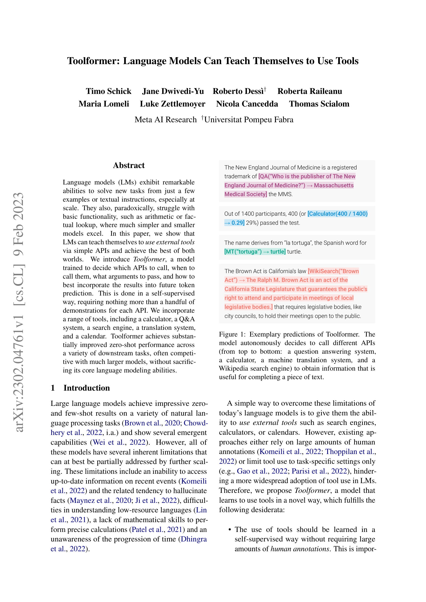
Toolformer는 언어 모델이 외부 도구(계산기, QA 시스템, 검색 엔진, 번역기, 달력)의 사용법을 자기지도 학습 방식으로 스스로 학습하는 방법론이다. LM이 텍스트 내 잠재적 API 호출 위치와 인수를 생성하고, perplexity 감소 기준으로 유용한 호출만 필터링한 데이터셋으로 fine-tuning하여, 6.7B 파라미터 GPT-J 기반으로 175B GPT-3를 다수 태스크에서 능가하는 zero-shot 성능을 달성했다.
Tool learning 분야의 선구적 연구로, LM이 자기지도 학습 방식으로 외부 도구의 사용법을 스스로 학습할 수 있음을 최초로 체계적으로 입증했다. "perplexity 감소 = 유용한 API 호출"이라는 간결하면서도 강력한 원칙에 기반한 필터링 메커니즘이 핵심 혁신이며, 6.7B 모델이 175B GPT-3를 능가하는 결과는 도구 활용이 단순한 모델 스케일링의 대안이 될 수 있음을 보여준다. 도구 체이닝과 interactive 사용의 한계는 이후 연구들(AnyTool, ToolLLM 등)이 해결 방향을 제시했으나, Toolformer의 self-supervised 학습 패러다임은 여전히 이 분야의 근본적 토대로 남아 있다.
MAC-AMP: A Closed-Loop Multi-Agent Collaboration System for Multi-Objective Antimicrobial Peptide Design
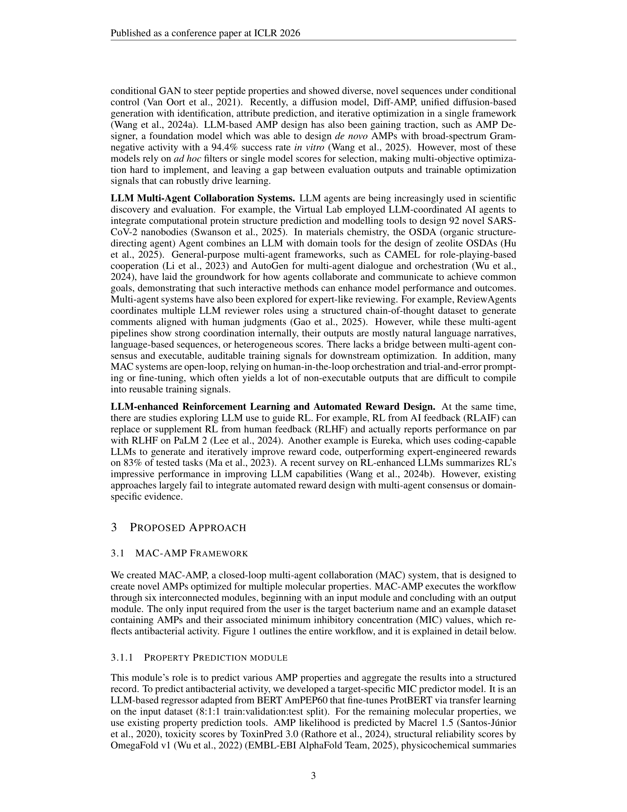


A Survey on Hypothesis Generation for Scientific Discovery in the Era of Large Language Models

PersonaAI: An Interactive Agentic-AI Framework for Autonomous Hypothesis Generation and Validation in Aging

노화(aging) 연구를 위한 인터랙티브 에이전틱 AI 프레임워크 **PersonaAI**를 제안한다. 56만 편 이상의 노화 관련 문헌을 RAG(Retrieval-Augmented Generation) 기반으로 합성하여 메커니즘적 가설을 생성하고, 이를 single-cell RNA-seq 데이터로 자율적으로 in silico 검증하는 이중 구조(dual-phase) 시스템이다. 핵심은 완전 자율이 아닌 **human-in-the-loop** 방식으로, 연구자의 생물학적 직관을 AI의 대규모 문헌 합성 능력과 결합하여 가설 탐색 공간을 효율적으로 제한한다. ---
노화 연구라는 복잡한 도메인에서 AI를 "자율 과학자"가 아닌 "전략적 공동 연구자"로 포지셔닝한 실용적 접근이 돋보인다. Temporal cutoff 검증은 AI의 추론 능력을 평가하는 설득력 있는 방법론이며, CIRBP+ hepatocyte와 남성 특이적 ASPC 감소 사례는 프레임워크의 발견 잠재력을 구체적으로 보여준다. 다만, 실험적 검증 부재와 마우스 모델 한정은 발견의 생물학적 임팩트를 제한하며, 다른 AI 시스템과의 정량 비교가 없어 상대적 우위를 판단하기 어렵다. Meta-prompting과 MCP 기반 아키텍처의 기술적 설계는 정교하나, 프롬프트 엔지니어링 의존도가 높아 범용성에 대한 추가 검증이 필요하다.
SCP: Accelerating Discovery with a Global Web of Autonomous Scientific Agents

Towards a Science of Scaling Agent Systems

LLM 기반 에이전트 시스템의 **정량적 스케일링 원리**를 도출한 연구이다. "More agents is all you need"라는 기존 주장에 반대하여, 멀티 에이전트 시스템(MAS)의 효과는 에이전트 수가 아닌 **아키텍처-태스크 정합성(architecture-task alignment)**에 의해 결정됨을 180개 통제된 구성(3개 LLM 패밀리 x 5개 아키텍처 x 4개 벤치마크)에서 실증한다. 경험적 조정 메트릭을 사용한 혼합 효과 모델(R^2=0.524)을 도출하여, 미지의 태스크에 대해 87% 정확도로 최적 아키텍처를 예측한다. ---
에이전트 시스템 설계를 휴리스틱에서 원리 기반(principled) 접근으로 전환시키는 시의적절하고 중요한 연구이다. 180개 통제 구성의 실험 규모, 혼동 요인 제거를 위한 방법론적 엄밀성, 그리고 "에이전트 수가 아닌 아키텍처-태스크 정합성이 핵심"이라는 실용적 메시지 모두 높이 평가할 만하다. 특히 Finance Agent(+81%)와 PlanCraft(-70%)의 극적 대비는 태스크 분해 가능성이라는 핵심 변수를 설득력 있게 보여준다. R^2=0.524는 "과학"이라기보다 "과학을 향한(towards)" 수준이지만, 이 분야에서 최초의 체계적 정량화라는 점에서 의의가 크다. GPT-5.2 out-of-sample 검증은 일반화 가능성을 강화하나, SAS 과대 예측은 프레임워크의 외삽 한계를 솔직히 드러낸다.
Generative AI Uses and Risks for Knowledge Workers in a Science Organization

미국 국립연구소(Argonne National Laboratory)의 Science 및 Operations 직원들을 대상으로 생성형 AI의 실제 활용 사례와 인식된 위험을 조사한 혼합 방법(mixed-methods) 연구이다. 설문(N=66), 심층 인터뷰(N=22), 그리고 내부 생성형 AI 인터페이스 "Argo"(GPT-3.5 Turbo 비공개 인스턴스)의 8개월간 사용 데이터를 분석하여, 활용 사례를 **copilot**(대화형 보조)과 **workflow agent**(자율/반자율 작업 자동화) 두 모달리티로 분류하고, 데이터 보안, 학술 출판, 고용 영향 등의 우려를 식별한다. ---
CHI 2025에 게재된 시의적절한 HCI 연구로, "AI for Science"의 현장 실태를 인간 중심 관점에서 포착한다. Science와 Operations 직원을 함께 조사하여 copilot/workflow agent 프레임워크로 정리한 것은 조직 차원의 AI 도입 전략에 실용적 가치를 제공한다. 특히 내부 비공개 LLM(Argo) 배포의 실제 채택 데이터는 희소한 자원이다. 다만, 소규모 표본과 단일 조직 한정, GPT-3.5 시점이라는 기술적 한계로 인해 발견의 깊이와 일반화 가능성에 제약이 있다. 참여자들의 목소리가 생생하게 전달되는 질적 데이터의 풍부함은 강점이나, 정량적 생산성 측정이 동반되었다면 더 설득력 있었을 것이다. 과학 조직 특유의 보안 우려(미발표 연구, 수출 통제)에 대한 논의는 유사한 환경의 조직에 직접 적용 가능한 가치를 지닌다.
From AI for Science to Agentic Science: A Survey on Autonomous Scientific Discovery


Future of Work with AI Agents: Auditing Automation and Augmentation Potential across the U.S. Workforce

AI 에이전트가 미국 노동시장에 미치는 영향을 **노동자 관점**에서 체계적으로 감사(audit)하는 최초의 대규모 연구이다. 미국 노동부 O\*NET 데이터베이스의 844개 직업 과업(104개 직종)에 대해 1,500명의 현직 노동자와 52명의 AI 전문가로부터 자동화 욕구(automation desire)와 기술적 역량(technological capability)을 수집하여 **WORKBank** 데이터베이스를 구축했다. 핵심 도구로 **Human Agency Scale (HAS, H1-H5)**를 제안하여, 단순한 "자동화 가능 여부" 이분법을 넘어 인간-AI 협업의 스펙트럼을 정량화했다. ---
### 강점 - 1,500명의 현직 노동자 참여로 높은 현실 반영도 - 이중 관점(노동자 + AI 전문가)으로 욕구-역량 불일치를 구조적으로 식별 - HAS 척도가 정책 입안자, 개발자, 노동자 모두에게 실용적 언어를 제공 - BLS 데이터와의 비교를 통한 인구통계학적 대표성 검증 - 혼합 효과 모형(Mixed-Effects Model)으로 과업 속성 vs. 개인 인구통계의 효과 분리 ### 약점 - AI 전문가 간 일치도(Krippendorff's alpha ~0.5)가 중간 수준 -- 기술 역량 평가의 주관성 내재 - 미국 노동시장에 국한된 분석 -- 글로벌 일반화에 제한 - YC 기업 및 arXiv 논문 매핑이 gpt-4.1-mini에 의존하여 매핑 정확도 검증이 제한적 - 욕구-역량 4분면 분류의 임계값(중앙값 기준)이 다소 자의적 ### 총평 AI 에이전트의 노동시장 영향을 노동자 관점에서 체계적으로 조망한 선구적 연구로, HAS라는 실용적 척도와 욕구-역량 지형도라는 분석 프레임워크가 학술적, 정책적으로 높은 가치를 지닌다. 특히 "정보 처리에서 대인관계 역량으로"의 스킬 전환 신호는 교육 및 인력개발 정책에 시사하는 바가 크다. 다만, 단일 시점의 스냅샷이라는 한계와 AI 역량의 급속한 진화를 고려할 때, 반복적 종단 연구로의 확장이 필수적이다.
Small Language Models are the Future of Agentic AI

에이전틱 AI 시스템에서 대형 언어 모델(LLM)을 소형 언어 모델(SLM, ~10B 파라미터 이하)로 대체해야 한다는 포지션 페이퍼이다. SLM이 (V1) 에이전틱 작업에 **충분한 성능**을 보유하고, (V2) 운영적으로 **더 적합**하며, (V3) **더 경제적**이라는 세 가지 핵심 주장을 전개한다. 범용 대화 능력이 필요한 경우에는 SLM을 기본으로 하고 LLM을 선별적으로 호출하는 **이질적(heterogeneous) 에이전틱 시스템**을 제안한다. LLM에서 SLM으로의 전환을 위한 6단계 변환 알고리즘도 제시한다. ---
### 강점 - 논증 구조가 매우 체계적이며, 주장(V1-V3), 논거(A1-A7), 반론(AV1-AV3), 반박의 4층 구조로 논리적 완결성이 높음 - 업계 현실(인프라 투자, 시장 규모, 산업 관성)을 솔직하게 인정하면서도 근본적 비효율을 지적 - SLM 기술의 최신 발전(Phi, Nemotron-H, Hymba, DeepSeek-R1-Distill 등)을 포괄적으로 정리 - 실용적 변환 알고리즘(S1-S6)이 구체적이고 따라할 수 있는 수준 - 개방적 토론 촉구와 반론 공개 약속이 학술적 정직성을 보여줌 ### 약점 - 실증적 비교 실험 부재가 가장 큰 약점 -- "충분하다"는 주장을 개별 모델의 벤치마크 성능으로만 뒷받침 - NVIDIA 제품(ChatRTX, Dynamo, Nemotron-H, Hymba)이 빈번히 언급되어 중립성 의문 - SLM 파인튜닝의 누적 비용(다수의 전문가 모델 관리)이 단일 LLM 엔드포인트 대비 실제로 경제적인지 정량 분석 부재 - 에이전틱 과업의 "복잡도" 분류 기준이 모호하여, 어떤 호출이 SLM/LLM에 적합한지 판단하기 어려움 ### 총평 에이전틱 AI의 미래 아키텍처에 대한 중요한 방향 제시를 하는 시의적절한 포지션 페이퍼이다. LLM 중심 패러다임의 비효율을 체계적으로 지적하고, SLM-first 아키텍처로의 전환 논거를 잘 구성했다. 다만 포지션 페이퍼 특성상 실증 데이터가 부족하며, NVIDIA 소속 저자의 사업적 이해와의 정렬이 순수 학술적 관점에서 주의를 요한다. 향후 에이전틱 SLM 벤치마크와 대규모 비교 실험이 이 포지션의 타당성을 검증하는 핵심이 될 것이다.
R&D-Agent: Automating Data-Driven AI Solution Building Through LLM-Powered Automated Research, Development, and Evolution

Accelerating Drug Discovery Through Agentic AI: A Multi-Agent Approach to Laboratory Automation in the DMTA Cycle
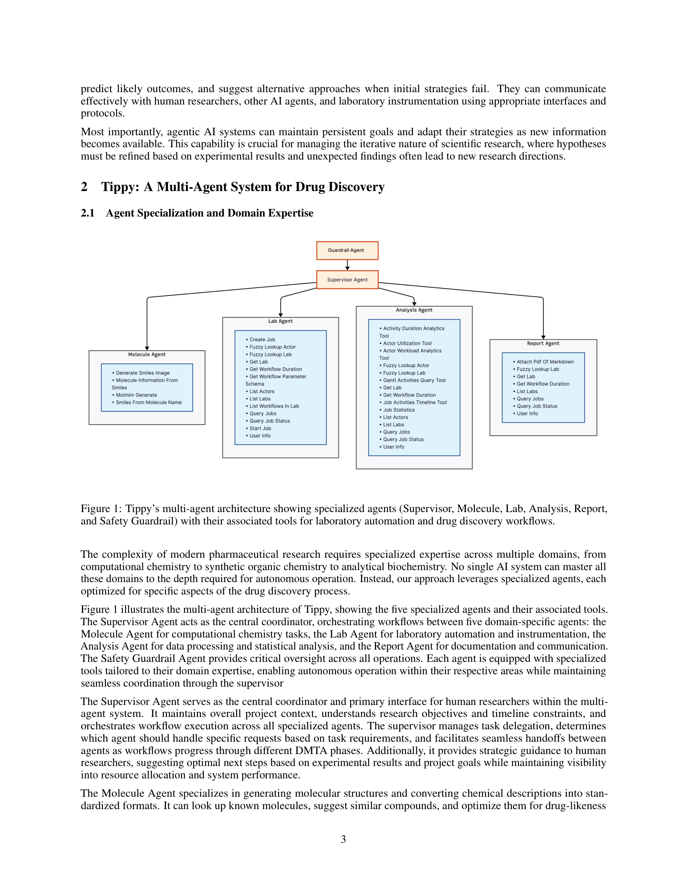
제약 산업의 Design-Make-Test-Analyze (DMTA) 사이클을 자동화하기 위한 멀티 에이전트 AI 프레임워크 **Tippy**를 소개한다. Supervisor, Molecule, Lab, Analysis, Report의 5개 특화 에이전트와 Safety Guardrail 에이전트로 구성되며, Artificial 플랫폼 위에 배포되어 분자 설계부터 합성, 분석, 보고까지의 전체 DMTA 워크플로를 조율한다. 저자들에 따르면, DMTA 사이클 자동화를 위해 특화된 AI 에이전트를 프로덕션 수준으로 구현한 최초의 사례이다. ---
### 강점 - DMTA 사이클이라는 명확한 도메인 프레임워크에 에이전틱 AI를 매핑한 실용적 접근 - Safety Guardrail Agent의 포함이 제약 연구의 안전성 요구를 반영 - COVID 약물 발견 시나리오를 통한 end-to-end 워크플로 시연이 직관적 - 기존 실험실 인프라(LIMS, ELN)와의 통합을 고려한 점진적 도입 전략 - MCP를 통한 표준화된 인터페이스 설계 ### 약점 - 가장 큰 약점은 정량적 벤치마크 부재 -- 기존 방법 대비 효율성 향상을 수치로 입증하지 못함 - 6페이지 본문 + 3페이지 데모로 구성된 짧은 논문으로, 기술적 깊이가 부족 - 모든 저자가 Artificial, Inc. 소속으로 중립성 의문 -- 사실상 제품 소개에 가까움 - 분자 생성이 MolMIM에 의존하나, 생성된 분자의 약물 유사성이나 합성 가능성에 대한 평가가 피상적 - "first production-ready implementation" 주장의 근거가 약함 -- 기존 자율 실험실(self-driving lab) 연구와의 체계적 비교 없음 - 에이전트 간 갈등 해결, 오류 복구, 예외 상황 처리에 대한 논의가 부족 ### 총평 DMTA 사이클에 멀티 에이전트 AI를 적용하는 실용적 시스템을 소개하는 논문으로, 개념적으로는 설득력이 있으나 학술적 엄밀성이 부족하다. 정량적 평가, 기존 자율 실험실 시스템과의 비교, 재현 가능한 실험 프로토콜이 보완되어야 연구 기여로서의 가치가 높아질 것이다. 현재 상태로는 기업 기술 보고서(technical report) 또는 제품 데모에 가까우며, 제약 산업에서 에이전틱 AI 적용의 개념 증명(proof of concept) 수준으로 평가된다.
VASPilot: MCP-Facilitated Multi-Agent Intelligence for Autonomous VASP Simulations

VASP(Vienna Ab initio Simulation Package) 기반 밀도범함수이론(DFT) 시뮬레이션을 완전 자동화하는 오픈소스 멀티 에이전트 플랫폼 **VASPilot**을 소개한다. CrewAI 프레임워크와 Model Context Protocol(MCP)을 기반으로 구축되며, Manager Agent + 3개 특화 Worker Agent(Crystal Structure Agent, VASP Agent, Result Validation Agent)가 결정 구조 검색, 입력 파일 생성, Slurm 작업 제출, 오류 파싱 및 파라미터 자동 조정, 결과 시각화까지 전 과정을 수행한다. 2H-MoS2의 밴드 구조/DOS 계산, ENCUT 수렴 테스트, 다양한 van der Waals 보정에 따른 격자 상수 최적화, 전이금속 디칼코게나이드(TMD) 밴드갭 비교 등의 벤치마크에서 수동 개입 없이 성공적으로 완료되었다. ---
### 강점 - VASP 사용자 커뮤니티의 실질적 고충(반복적 입력 준비, 오류 처리, 작업 관리)을 정확히 타겟팅 - MCP 기반 모듈형 설계가 다른 DFT 코드로의 확장을 구조적으로 보장 - 자동 오류 복구(symprec 조정)가 실제 VASP 워크플로에서 빈번히 발생하는 문제를 해결 - Zero-shot으로 다중 vdW 보정 비교(10가지)를 성공적으로 수행한 것은 에이전트의 일반화 능력을 잘 보여줌 - 오픈소스 공개와 웹 데모 제공으로 재현성과 접근성 확보 - 웹 UI가 에이전트 실행의 투명성을 제공하여 연구자의 검증을 지원 ### 약점 - 벤치마크가 비교적 단순한 반도체 시스템에 국한 -- 강상관 전자계, 자성체, 표면/인터페이스 등 실질적으로 도전적인 문제에 대한 검증 필요 - 기존 자동화 도구(AiiDA, FireWorks, atomate 등)와의 체계적 비교 부재 -- LLM 기반 접근의 부가 가치가 명확하지 않음 - LLM의 환각(hallucination) 가능성에 대한 논의 없음 -- 잘못된 INCAR 파라미터 설정이나 부적절한 k-point 선택 등의 위험 - Result Validation Agent의 검증 깊이가 불분명 -- 결과의 물리적 타당성(예: 밴드갭이 합리적 범위인지)을 얼마나 판단할 수 있는지 미기술 ### 총평 VASP 워크플로 자동화에 LLM 멀티 에이전트를 적용한 실용적이고 잘 설계된 오픈소스 시스템이다. MCP 기반 모듈형 아키텍처, 자동 오류 복구, zero-shot 복합 미션 처리는 계산 재료 과학 연구자에게 실질적 가치를 제공한다. 특히 웹 UI를 통한 투명한 워크플로 추적이 연구자의 신뢰 구축에 기여한다. 다만, 더 복잡한 물리 시스템과 고급 VASP 기능에 대한 검증, 기존 워크플로 관리 도구와의 비교, LLM 환각에 대한 안전장치 논의가 보완되면 영향력이 크게 높아질 것이다. 응축물질물리학/재료 과학 분야에서 AI for Science의 구체적 실현 사례로서 가치가 높다.
MechAgents: Large language model multi-agent collaborations can solve mechanics problems, generate new data, and integrate knowledge

OWL: Optimized Workforce Learning for General Multi-Agent Assistance in Real-World Task Automation
ScienceAgentBench: Toward Rigorous Assessment of Language Agents for Data-Driven Scientific Discovery


AI Agents in Engineering Design: A Multi-Agent Framework for Aesthetic and Aerodynamic Car Design

SciAgents: Automating Scientific Discovery Through Bioinspired Multi-Agent Intelligent Graph Reasoning
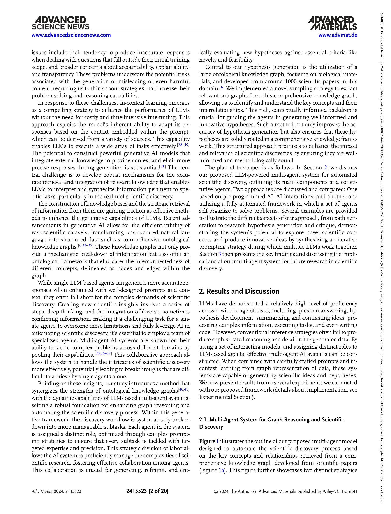

ResearchAgent: Iterative Research Idea Generation over Scientific Literature with Large Language Models
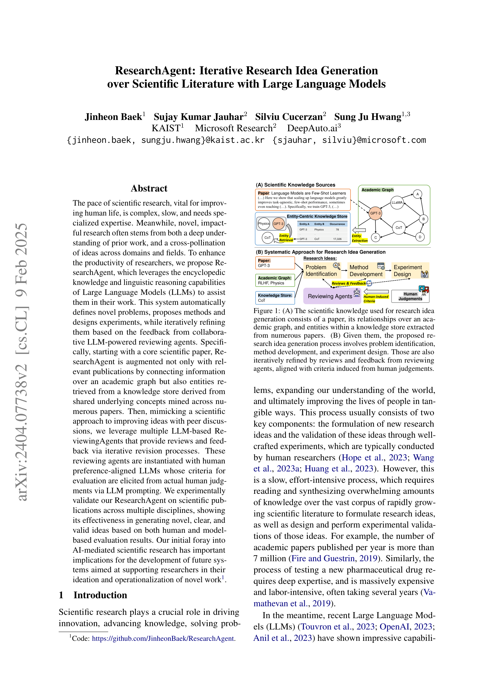

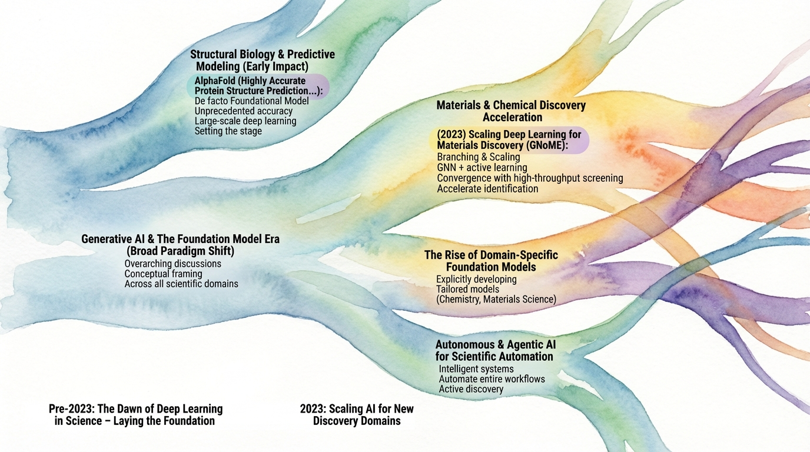
제시된 논문 목록은 AI, 특히 딥러닝과 파운데이션 모델이 과학적 발견을 근본적으로 변화시키는 현재의 중요한 흐름을 보여줍니다. 이 연구들은 단백질 구조 예측, 신물질 발견과 같은 특정 도메인의 난제를 해결하는 것을 넘어, 실험 설계, 가설 생성, 데이터 분석 등 과학적 발견의 전 과정을 자동화하고 가속화하려는 광범위한 노력을 담고 있습니다. 궁극적으로 AI는 단순한 도구를 넘어 과학적 사고와 발견의 주체로서 진화하며 인간의 지식 지평을 확장하고 있습니다.
이 분야의 연구 노력은 크게 몇 가지 sub-category로 나눌 수 있습니다. 우선, 도메인 특화 과학 발견에서는 AI가 이전에 불가능했던 발견을 가능하게 하며, 해당 분야의 한계를 확장하고 있습니다. 대표적으로 AlphaFold는 아미노산 서열만으로 단백질의 3D 구조를 원자 수준의 정확도로 예측하는 혁신을 가져와 생물학 연구의 패러다임을 변화시켰습니다. 또한, GNoME(Graph neural network)은 대규모 active learning을 통해 381,000개의 새로운 안정 결정 구조를 발견하며 인류가 알고 있는 안정 물질의 수를 약 10배 확장, 재료 과학 연구를 가속화했습니다. 이론 물리학 분야에서는 "Chiral spin symmetry and hot QCD"와 같이 QCD의 온도에 따른 질적 변화를 설명하는 새로운 대칭 프레임워크를 AI의 도움으로 제시하며 복잡한 물리 현상에 대한 이해를 심화하고 있습니다. 인지 과학 및 신경 과학에서는 "Transforming Behavioral Neuroscience Discovery"가 in-context learning과 AI-enhanced tensor methods를 활용하여 행동 신경과학의 발견 과정을 혁신하려는 시도를 보여주며, 복잡한 데이터 패턴에서 통찰력을 도출하는 AI의 잠재력을 탐구합니다. 가장 두드러지는 흐름은 LLM 및 파운데이션 모델의 과학적 활용과 자동화입니다. "Galactica"와 "What ChatGPT and Generative AI Mean for Science" 같은 논문들은 LLM이 과학 연구에서 정보 검색, 가설 생성, 논문 작성 등을 보조하며 생산성을 높일 잠재력을 탐구하며, "Generative AI and the Foundation Model Era: A Comprehensive Review"는 이러한 흐름을 종합적으로 분석합니다. 나아가, "The AI Scientist"와 "Can we automatize scientific discovery in the cognitive sciences?"는 LLM을 기반으로 실험 설계("Experimentalist")부터 데이터 분석, 모델 비교, 결론 도출에 이르는 과학적 발견 사이클 전체를 자동화하는 "in silico science" 비전을 제시하며, "From Automation to Autonomy"는 LLM의 역할 변화와 역량을 체계적으로 조망합니다. 이러한 대규모 모델의 활용을 위해 "Scaling Deep Learning for Materials Discovery" 및 "Scalable Cross-Facility Federated Learning for Scientific Foundation Models"와 같이 분산된 환경에서 대규모 AI 학습을 위한 기술적 노력도 활발히 이루어지고 있습니다. 이 모든 노력은 궁극적으로 "Artificial Intelligence for Science — Bridging Data to Wisdom"이라는 목표 아래, 데이터를 실질적인 과학적 지혜로 전환하려는 목적을 공유합니다.
이러한 발전은 AI가 단순히 도구를 넘어 과학적 발견의 주체로 진화할 가능성을 보여줍니다. LLM 기반 "Experimentalist"가 새로운 실험 패러다임을 제안하고, "Cognitive Foundation Model"이 복잡한 데이터를 분석하는 "in silico science of the mind"와 같은 새로운 시도는 과학적 사고 과정 자체를 AI가 담당할 수 있음을 암시합니다. "Unlocking the Potential of AI Researchers in Scientific Discovery: What Is Missing?" 논문은 이러한 완전한 자율성을 위한 간극을 탐색하며, 미래에는 인간의 개입이 최소화된 "fully automated open-ended scientific discovery"가 가능해질 것으로 기대됩니다. 궁극적으로 AI는 인류가 알고 있는 지식의 경계를 빠르게 확장하고, 과학적 발견의 속도를 전례 없이 가속화하며, 인류의 난제를 해결하는 데 결정적인 역할을 할 것입니다.
Can we automatize scientific discovery in the cognitive sciences?

인지과학의 발견 사이클(실험 설계 -> 데이터 수집 -> 모델 비교 -> 결론 도출)을 LLM 기반으로 완전 자동화하는 "in silico science of the mind" 비전을 제시하는 짧은 Perspective 논문이다. LLM이 실험 패러다임을 제안하고(Experimentalist), cognitive foundation model(Centaur)이 합성 행동 데이터를 생성하며, LLM 기반 program synthesis가 인지 모델을 대규모 탐색하고(Modeller), LLM-critic이 "interestingness"를 평가하여 루프를 닫는 4단계 자동 발견 엔진을 구상한다.
인지과학의 발견 사이클을 LLM과 cognitive foundation model로 완전 자동화하겠다는 대담한 비전을 제시한 짧은 Perspective 논문이다. 특히 Centaur를 in-loop data generator로 사용하고, LLM program synthesis로 인지 모델을 대규모 탐색한다는 아이디어는 인지과학과 AI의 교차점에서 참신하다. 그러나 5페이지 분량의 제약으로 각 구성 요소의 기술적 깊이가 부족하고, 통합 구현이 없으며, 실패 모드(특히 LLM에 의한 interestingness 평가의 순환성)가 핵심 위험으로 남아 있다. "In silico science of the mind"라는 방향성 자체는 AI4Science 커뮤니티에서 주목할 가치가 있다.
From Automation to Autonomy: A Survey on Large Language Models in Scientific Discovery
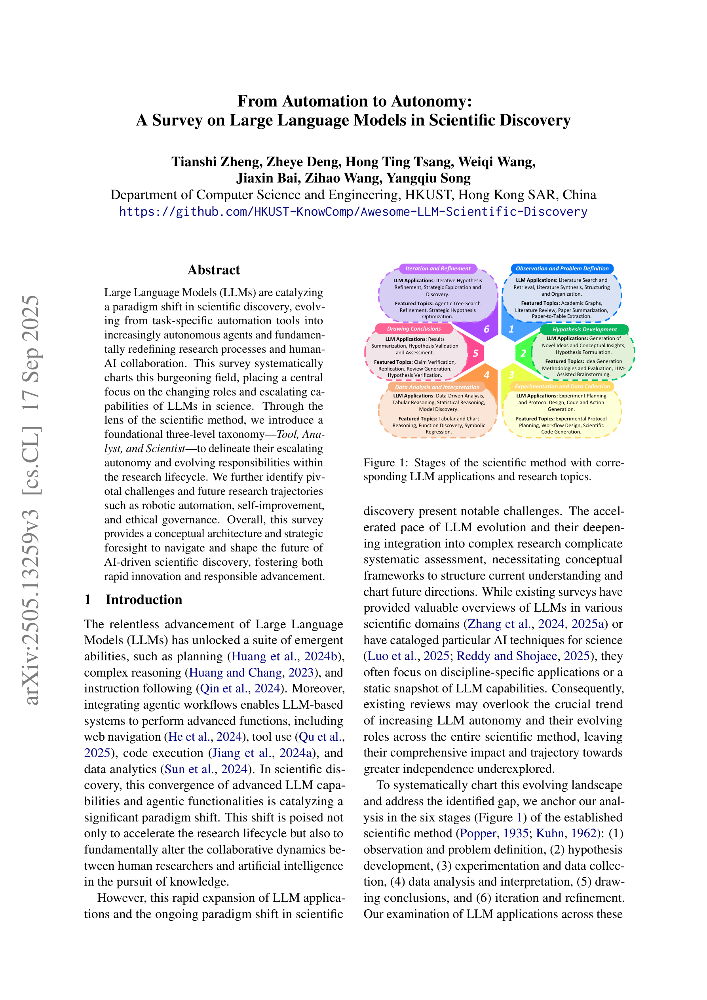
This survey systematically charts this burgeoning field, placing a central focus on the changing roles and escalating capabilities of LLMs in science. Overall, this survey provides a conceptual architecture and strategic foresight to navigate and shape the future of AI-driven scientific discovery, fostering both rapid innovation and responsible advancement.
관련 분야의 포괄적 서베이로서 연구자들에게 유용한 참고 자료를 제공하나, 서베이 논문 특성상 독창적 기여는 제한적이다. --- ### Figures | Figure | 설명 | |--------|------| |  | **Fig. 1**: 논문의 핵심 프레임워크 또는 방법론 개요 |
Chiral spin symmetry and hot QCD
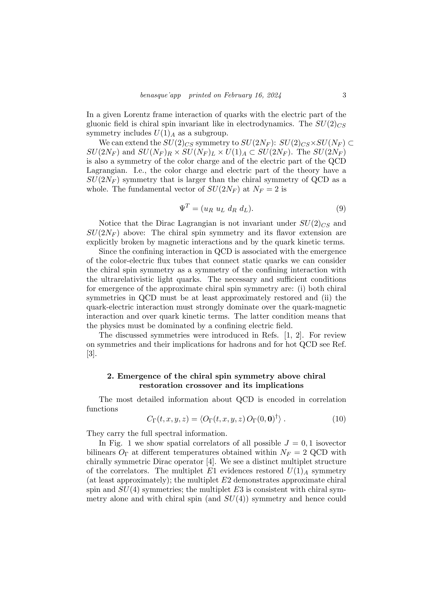
QCD(양자 색역학)의 온도에 따른 세 가지 질적으로 다른 regime -- hadron gas, stringy fluid, quark-gluon plasma -- 의 존재를 overview하고, chiral spin symmetry를 통해 confining regime과 그 소멸을 구별하는 새로운 대칭 프레임워크를 제시한다.
QCD의 temperature-dependent regime을 chiral spin symmetry라는 새로운 대칭 관점에서 체계적으로 정리한 이론 물리 review이다. 독창적인 대칭 프레임워크를 제안했으나, proceedings 형식의 한계로 완결성이 부족하며, AI for Science 관점에서의 직접적 기여는 제한적이다.
Scaling Deep Learning for Materials Discovery
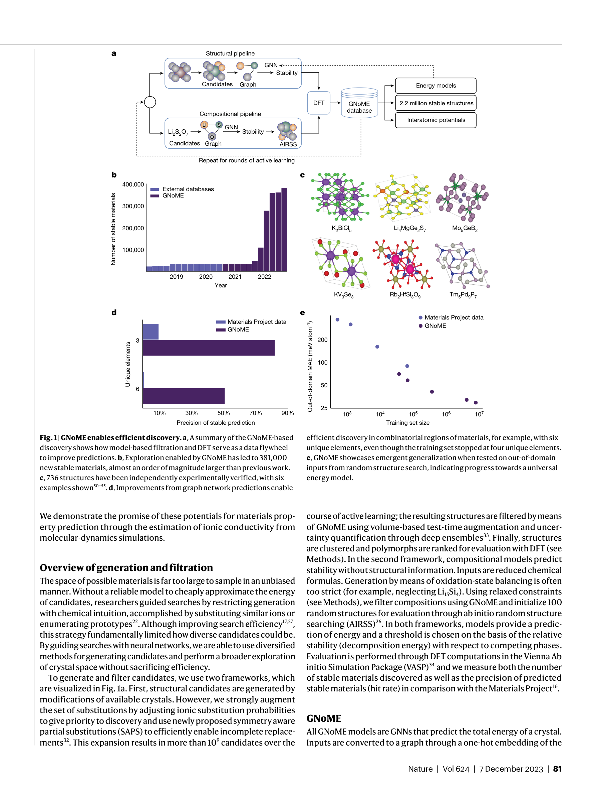
Graph neural network (GNoME)을 대규모 active learning과 결합하여 기존 48,000개에서 381,000개의 새로운 안정 결정 구조를 발견, 인류가 알고 있는 안정 물질을 약 10배 확장했다. 총 2.2M 구조가 기존 convex hull 아래에 위치하며, hit rate를 기존 1%에서 구조 기반 80%, 조성 기반 33%로 향상시켰다.
Active learning 기반 data flywheel과 GNN의 scaling을 결합하여 안정 무기 결정 재료를 10배 확장한 기념비적 연구로, AI for Materials Science 분야의 AlphaFold 격 성과이다. 다만 PBE functional 의존성과 synthesizability 미고려가 실용화까지의 남은 과제이다.
Highly Accurate Protein Structure Prediction with AlphaFold

AlphaFold는 아미노산 서열만으로 단백질 3D 구조를 원자 수준 정확도로 예측하는 최초의 computational method이다. CASP14에서 median backbone accuracy 0.96 A r.m.s.d.95를 달성하여, 차순위 방법(2.8 A)을 압도적으로 능가했으며, 이는 탄소 원자 폭(~1.4 A)에 근접하는 실험적 구조 수준의 정확도이다.
50년 이상 미해결이었던 protein structure prediction 문제를 사실상 해결한 획기적 연구로, Evoformer와 IPA라는 독창적 architecture 혁신을 통해 실험적 정확도에 필적하는 성능을 달성했다. AI for Science 분야의 가장 대표적인 성공 사례이자, 구조생물학의 패러다임을 근본적으로 전환시킨 milestone 논문이다.
Transforming Behavioral Neuroscience Discovery with In-Context Learning and AI-Enhanced Tensor Methods

Generative AI and the Foundation Model Era: A Comprehensive Review
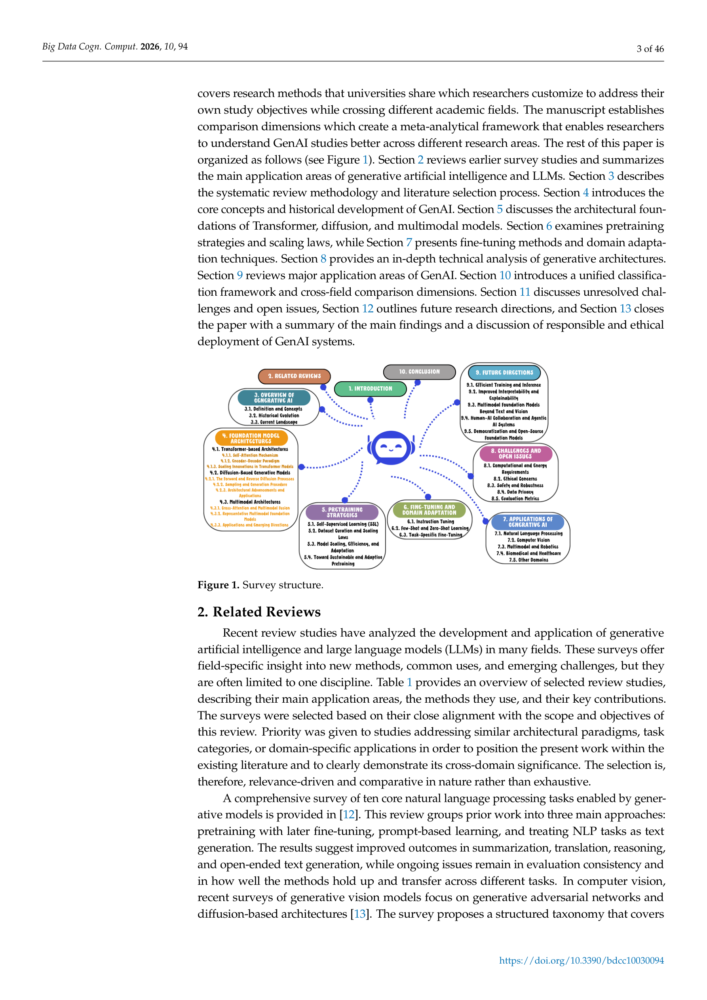
Scalable Cross-Facility Federated Learning for Scientific Foundation Models on Multiple Supercomputers

Unlocking the Potential of AI Researchers in Scientific Discovery: What Is Missing?


The AI Scientist: Towards Fully Automated Open-Ended Scientific Discovery
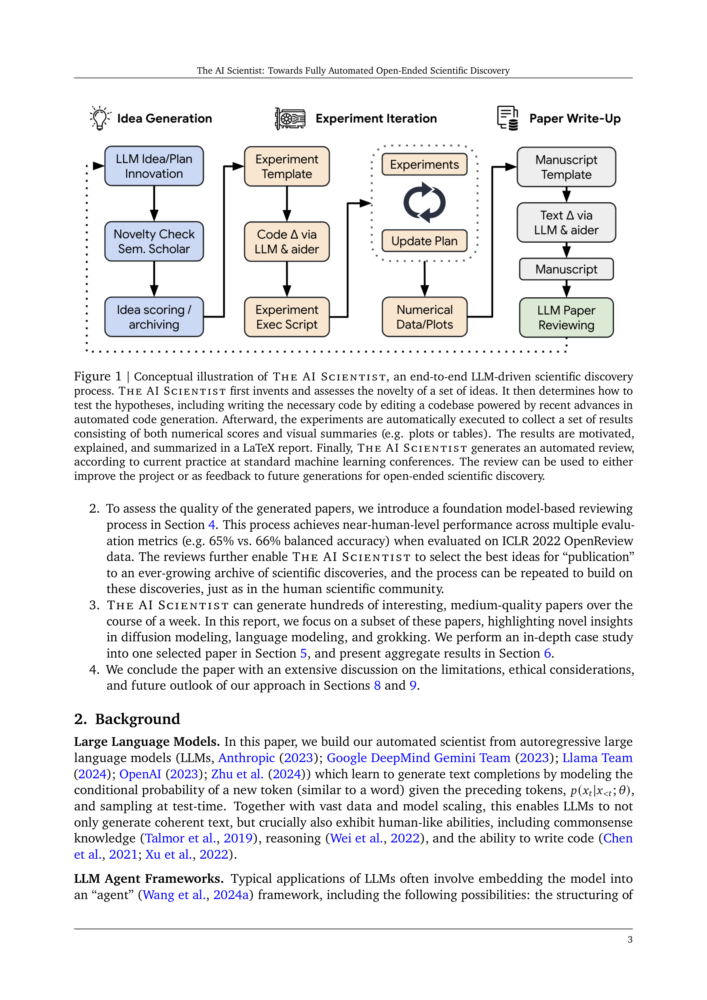

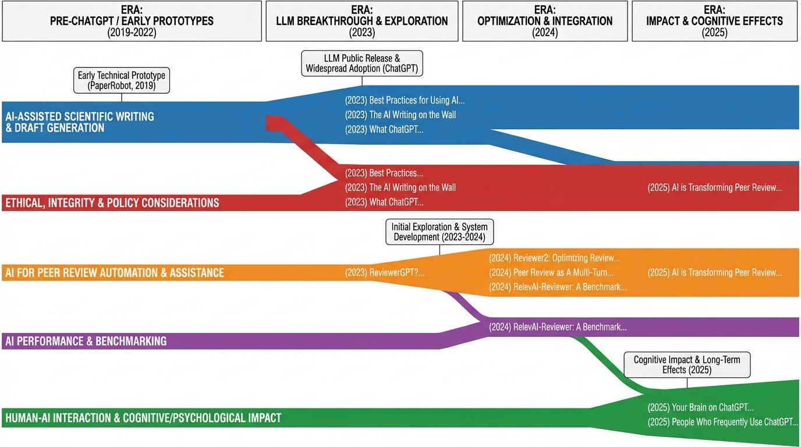
AI, 특히 Large Language Models (LLMs)의 발전은 과학 글쓰기 및 Peer Review 분야에 혁명적인 변화를 가져오고 있다. 이 분야의 연구는 AI가 제공하는 효율성 증대 및 새로운 가능성 모색과 동시에, AI 사용으로 인한 윤리적 문제, 인지적 부채(cognitive debt), 그리고 Peer Review 시스템의 근본적인 변화에 대한 우려를 동시에 다루고 있다. 전반적으로 AI의 책임감 있는 활용을 위한 가이드라인과 최적화 방안을 모색하는 흐름을 보인다.
AI의 발전은 크게 세 가지 주요 영역에서 학술 출판 환경에 영향을 미치고 있다. 첫째, AI in Scientific Writing 분야에서는 AI를 활용한 논문 작성의 효율성 증대와 함께 여러 도전 과제가 제기된다. "Your Brain on ChatGPT"는 AI 조수 사용 시 인지적 부채(cognitive debt) 축적 가능성을 경고하며 인간의 비판적 사고 능력 저하에 대한 우려를 제기한다. 또한, "Is It OK for AI to Write Science Papers?" 설문 조사 결과에서 연구자들은 AI의 저자 자격 여부에 대해 의견이 분분하며, 이는 학술적 진실성과 윤리적 경계에 대한 깊은 논의를 촉발한다. 이러한 문제의식 아래 "Best Practices for Using AI When Writing Scientific Manuscripts"와 같은 논문들은 AI 사용 시 주의, 신중함, 사려 깊은 접근의 중요성을 강조하며, 창의적인 과학을 위해 명확한 가이드라인의 필요성을 역설한다. AI가 생성한 텍스트를 탐지하는 능력에 대해서는 "People Who Frequently Use ChatGPT for Writing Tasks Are Accurate and Robust Detectors of AI-Generated Text"에서 흥미롭게도 AI 도구 사용자들의 탐지 능력이 높다는 결과가 보고되기도 했으며, 연구자들을 위한 "AI for Research: The Ultimate Guide to Choosing the Right Tool"과 같은 실용적인 도구 선택 가이드도 제공되고 있다.
둘째, AI in Peer Review 과정에서 AI의 역할은 과학계의 큰 관심사이며 우려 또한 크다. "AI is Transforming Peer Review — and Many Scientists Are Worried"는 AI가 Peer Review를 변화시키고 있지만, 많은 과학자들이 우려하고 있음을 보여준다. LLM을 활용한 리뷰 생성 가능성을 탐색한 "ReviewerGPT?"는 AI가 리뷰 과정에 통합될 잠재력을 시사하며, "Is Your Paper Being Reviewed by an LLM?"은 AI가 생성한 리뷰 텍스트의 탐지 가능성을 조사하여 AI 활용의 투명성 문제를 제기한다. 이러한 문제 해결 노력의 일환으로 "Reviewer2: Optimizing Review Generation Through Prompt Generation"은 Prompt Generation을 통해 리뷰 생성을 최적화하는 방안을 제안하며, "Three AI-powered steps to faster, smarter peer review"는 더 빠르고 스마트한 Peer Review를 위한 AI 기반 단계를 제시한다. "Peer Review as A Multi-Turn and Long-Context Dialogue with Role-Based Interactions"와 "What Can Natural Language Processing Do for Peer Review?"는 각각 Multi-turn Dialogue와 NLP 기술을 활용하여 Peer Review 시스템을 개선하려는 시도를 보여준다.
셋째, Broader Academic Publishing Practices 측면에서는 AI 중심의 변화와는 별개로, 학술 출판 환경 전반의 변화도 지속적으로 연구되고 있다. "Attracting new users or business as usual?"과 "Discipline-specific open access publishing practices and barriers to change"는 Open Access(OA) 전환이 저널의 접근성 및 이용자 유입에 미치는 영향을 분석하며, 학문 분야별 OA 출판 관행과 변화의 장벽을 탐구한다. 이는 과학 글쓰기와 Peer Review를 둘러싼 광범위한 생태계 변화의 한 축을 보여준다.
이들 연구는 AI가 단순한 도구를 넘어 과학 글쓰기 및 Peer Review의 패러다임을 근본적으로 변화시킬 잠재력을 보여준다. 특히 "CycleResearcher: Improving Automated Research via Automated Review"와 같이 연구와 리뷰 과정을 자동화된 루프(Automated Review)로 연결하려는 시도는 AI가 학술 활동 전반에 걸쳐 통합적으로 기여할 미래를 그려볼 수 있게 한다. 향후 연구는 AI의 효율성을 극대화하면서도 인간의 고유한 통찰력과 윤리적 책임감을 보존할 수 있는 방안, 그리고 AI 기반 시스템의 공정성과 투명성을 확보하는 데 중점을 둘 것으로 예상된다.
Attracting new users or business as usual? A case study of converting academic subscription-based journals to open access
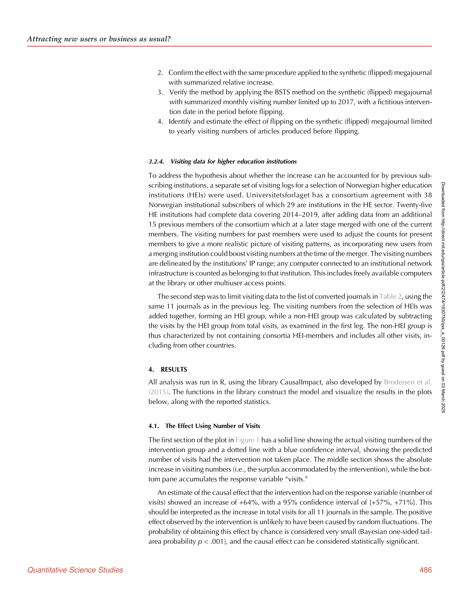
노르웨이 인문사회과학(SSH) 분야 11개 학술지의 구독 기반에서 오픈 액세스(OA)로의 전환 효과를 Bayesian Structural Time Series(BSTS) 모델로 분석한 사례 연구이다. 2017년 동시 전환 후 방문 수가 64% 증가했으며(p < .001), 이 증가는 기존 구독 기관(고등교육기관)이 아닌 외부 이용자에 의한 것으로 확인되었다. 전환 전 발행된 유료 기사(back list)에는 spillover 효과가 없었다.
노르웨이 정부의 OA 의무화 정책이라는 준자연실험 상황을 잘 활용하여, BSTS 모델 기반의 엄밀한 인과 추론으로 학술지 전환의 방문 증가 효과를 실증한 연구이다. 특히 back list 폐쇄를 활용한 설계와 HEI/non-HEI 분리 분석은 OA 전환이 새로운 이용자에게 도달한다는 핵심 정책 논거를 뒷받침한다. 다만, SSH 분야 노르웨이어 학술지라는 매우 특수한 맥락, 방문 수라는 제한적 지표, 그리고 AI for Science와의 직접적 관련성이 약하다는 점에서 본 큐레이션의 핵심 주제와는 거리가 있다.
Your Brain on ChatGPT: Accumulation of Cognitive Debt when Using an AI Assistant for Essay Writing Task

AI is Transforming Peer Review — and Many Scientists Are Worried
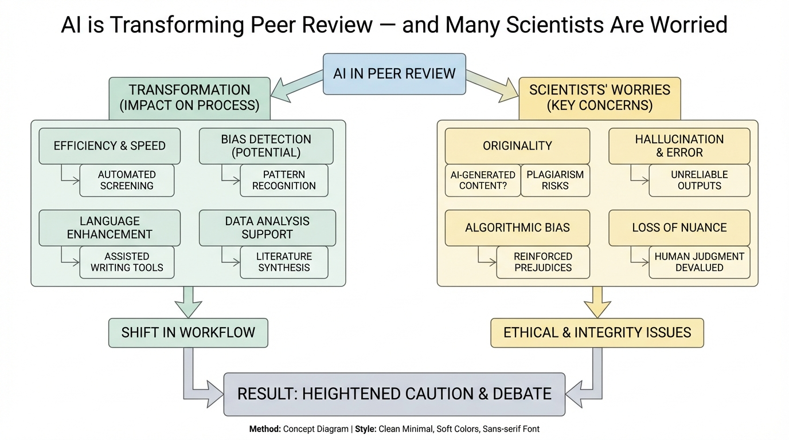
Is It OK for AI to Write Science Papers? Nature Survey Shows Researchers Are Split

AI for Research: The Ultimate Guide to Choosing the Right Tool
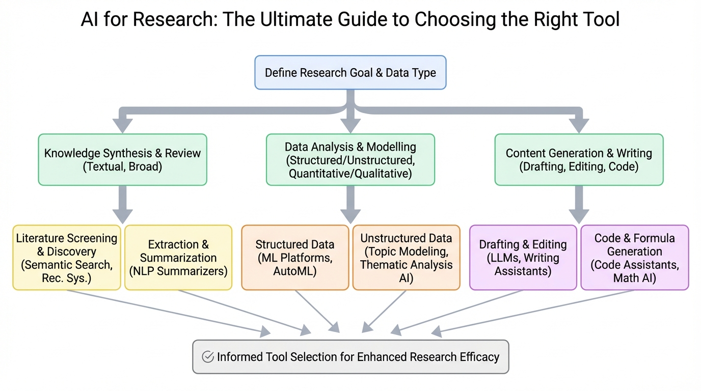
People Who Frequently Use ChatGPT for Writing Tasks Are Accurate and Robust Detectors of AI-Generated Text

Reviewer2: Optimizing Review Generation Through Prompt Generation
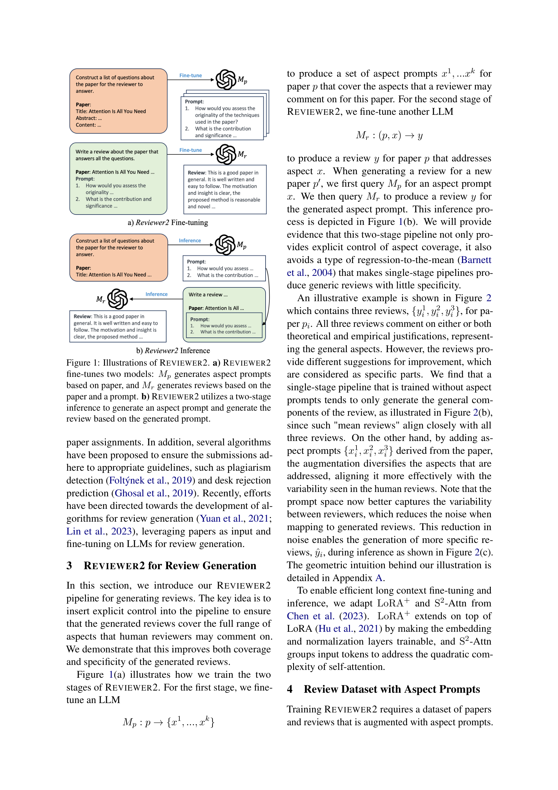
Peer Review as A Multi-Turn and Long-Context Dialogue with Role-Based Interactions
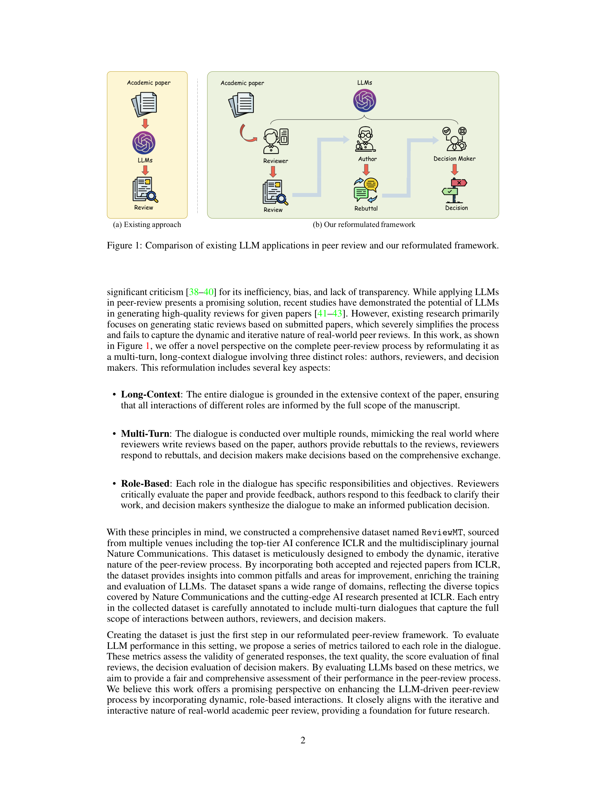
Is Your Paper Being Reviewed by an LLM? Investigating AI Text Detectability in Peer Review

ReviewerGPT? An Exploratory Study on Using Large Language Models for Paper Reviewing


Discipline-specific open access publishing practices and barriers to change: an evidence-based review


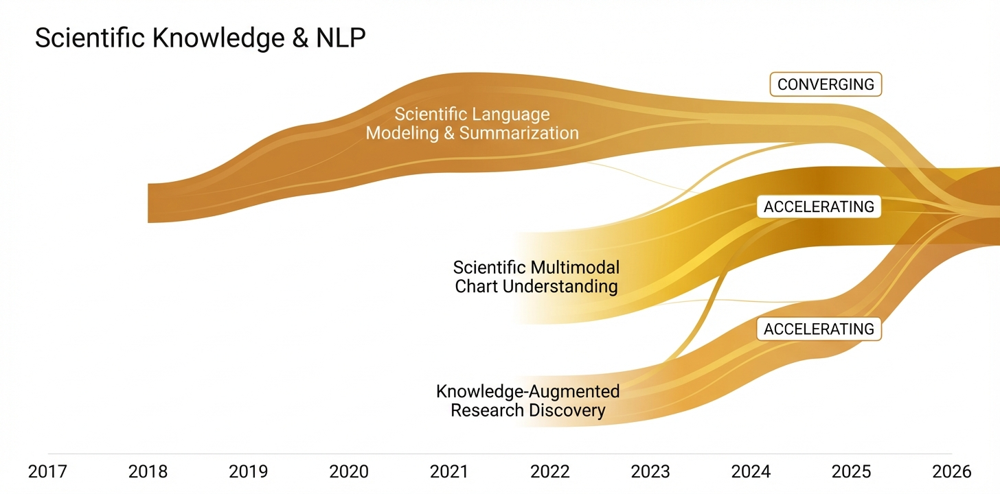
Scientific Knowledge & NLP" 카테고리의 AI for Science 연구들은 최신 NLP 기술, 특히 LLM과 멀티모달 모델을 과학 도메인에 적용하는 데 중점을 둔다. 이는 과학 지식의 표현, 이해, 그리고 생성을 향상시키는 것을 목표로 한다. 주요 연구 분야는 과학 텍스트, 그림, 차트 처리뿐만 아니라 새로운 연구 아이디어 발견 지원을 포함한다. 전반적으로, 이 분야는 과학 탐구의 다양한 단계를 자동화하고 증강하는 방향으로 나아가고 있다.
이 분야의 연구들은 다양한 sub-category에서 핵심 문제들을 해결하기 위한 노력들을 보여준다. 과학 문서 요약 및 정보 추출 분야에서는 복잡한 과학 논문을 효과적으로 요약하고 정보 편향을 줄이는 것이 핵심 문제이다. "Generalization Bias in Large Language Model Summarization of Scientific Research"는 LLM 기반 요약 모델의 일반화 편향을 지적했으며, "TLDR"은 극단적 요약이라는 새로운 태스크와 데이터셋(SciTLDR)을 도입하여 과학 논문을 단일 문장으로 압축하는 해결책을 제시했다. 과학 NLP 기반 모델 및 도구의 경우, 특수 과학 텍스트에 대한 일반 NLP 모델의 성능 한계를 극복하기 위해, "BERT"가 제시한 Transformer 기반의 사전 학습 모델의 개념은 "SciBERT"에 의해 과학 문헌 전용으로 확장되었다. 또한, "scispaCy"는 생의학/과학 텍스트를 위한 POS tagging, dependency parsing, NER, entity linking 등을 포함하는 강력한 end-to-end NLP 파이프라인을 제공하며 도메인 특화된 솔루션의 중요성을 강조한다. 과학 그림/차트 이해 및 추론 분야에서 과학 문서 내 시각 정보를 이해하고 추론하는 것은 중요한 문제로, 멀티모달 LLM과 Instruction Tuning이 적극적으로 활용된다. "ChartInstruct," "ChartGemma," "ChartLlama," "MMC"는 차트 이해, 추론 및 생성 능력을 향상시키기 위해 대규모 Instruction Tuning에 집중하며, "Reading and Reasoning over Chart Images for Evidence-based Automated Fact-Checking"은 이를 자동화된 사실 확인에 적용한다. "Chartist"는 차트 읽기 중 인간의 시선 움직임을 연구하여 기계 학습 모델에 대한 통찰을 제공한다. 특히 과학 Figure Captioning은 "SciCap"이 최초의 대규모 데이터셋을 구축했고, "SciCap+"는 기존 데이터셋을 mention-paragraph 및 OCR 토큰으로 보강하여 단순 image-to-caption을 넘어선 지식 기반 캡션 생성의 가능성을 탐구했다. "PatFig"는 특허 도면에 특화된 대규모 데이터셋과 함께 MiniGPT-4를 fine-tuning하여 특허 도면 캡션 생성에 적용하는 새로운 시도를 보여주었다. 마지막으로, 과학 지식 생성 및 발견 분야에서는 방대한 과학 문헌에서 새로운 연구 아이디어를 발굴하고 복잡한 질문에 답하는 것이 핵심 동력이다. "Interesting Scientific Idea Generation using Knowledge Graphs and LLMs"는 Knowledge Graph와 LLM을 결합하여 흥미로운 과학 아이디어를 생성하는 가능성을 제시했다. "SciMON"은 Literature-Based Discovery(LBD)의 기존 이진 링크 예측 방식을 넘어, 배경 문맥을 기반으로 과학 문헌에서 "영감"을 검색하고 새로운 연구 방향을 자연어로 생성하는 프레임워크를 선보였다. 또한, "Leveraging LLMs in Scholarly Knowledge Graph Question Answering"은 LLM을 활용하여 학술 Knowledge Graph에서 자연어 질문에 효율적으로 답변하는 방법을 제시하며 LLM의 지식 질의 응답 능력을 입증했다.
LLM과 멀티모달 기능(차트, 그림) 및 Knowledge Graph의 통합은 이 분야의 중요한 진전이다. 최근 연구들은 단순한 이해를 넘어 새로운 과학적 통찰, 아이디어, 그리고 상세한 캡션을 적극적으로 생성하는 데 초점을 맞추고 있다. 향후 연구는 LLM의 과학 발견 능력을 더욱 확장하여 미묘한 추론을 가능하게 하고, 편향을 줄이며, 더욱 자율적인 과학 탐구를 지원하는 방향으로 나아갈 것으로 예상된다. Instruction Tuning과 지식 증강 방식은 도메인 특화 태스크에서 특히 유망한 접근법으로 자리매김하고 있다.
SciMON: Scientific Inspiration Machines Optimized for Novelty
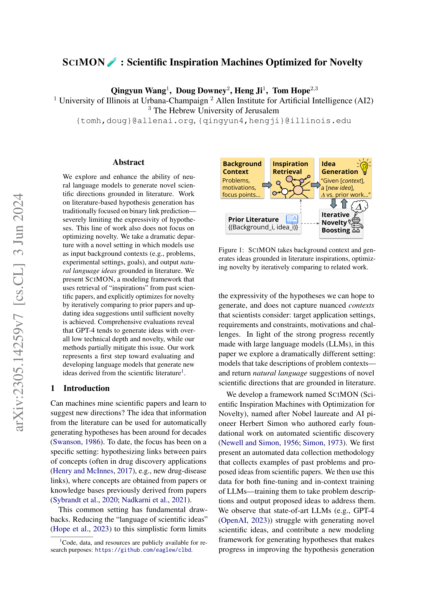
SciMON은 과학 문헌으로부터 새로운 연구 방향을 자연어로 생성하는 프레임워크로, 기존의 이진 링크 예측(binary link prediction) 방식의 Literature-Based Discovery(LBD)를 근본적으로 탈피한다. 배경 문맥(문제, 동기, 실험 설정)을 입력으로 받아 과거 논문에서 "영감(inspiration)"을 검색하고, 반복적 novelty boosting을 통해 기존 연구와 차별화된 아이디어를 생성한다. GPT-4가 전반적으로 낮은 기술적 깊이와 참신성을 보이는 문제를 부분적으로 완화하는 데 성공했다.
과학적 가설 생성을 이진 링크 예측에서 자연어 기반 개방형 생성으로 전환한 선구적 연구로, 문제 설정 자체의 참신성이 높다. Iterative novelty boosting과 다중 소스 영감 검색이라는 구체적 방법론을 제시하고, GPT-4의 과학적 아이디어 생성 능력을 최초로 체계적으로 평가한 점에서 AI for Science 분야에 중요한 기여를 했다. 다만, 생성된 아이디어가 실제 논문 대비 현저히 낮은 품질을 보이는 근본적 한계를 드러냈으며, 이는 LLM 기반 과학적 창의성의 현주소를 솔직하게 보여주는 의미 있는 결과이다.
Leveraging LLMs in Scholarly Knowledge Graph Question Answering
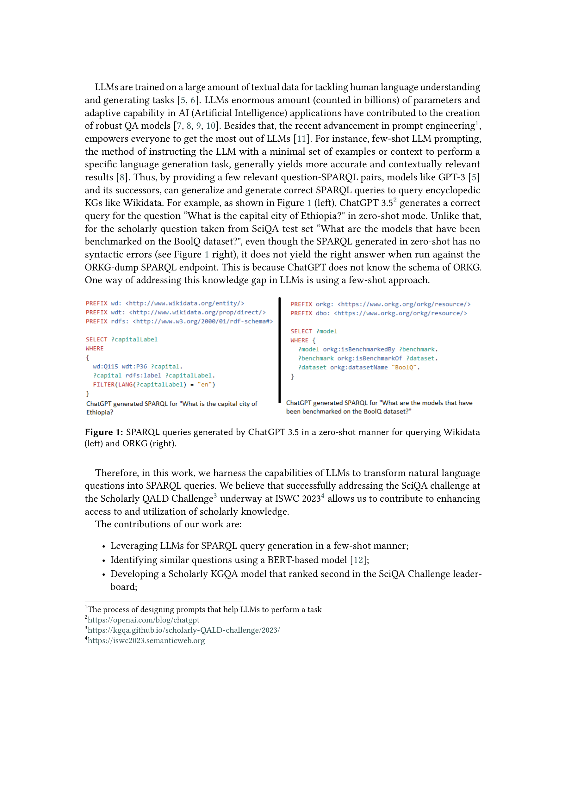
This paper presents a scholarly Knowledge Graph Question Answering (KGQA) that answers bibliographic natural language questions by leveraging a large language model (LLM) in a few-shot manner.
This paper presents a scholarly Knowledge Graph Question Answering (KGQA) that answers bibliographic natural language questions by leveraging a large language model (LLM) in a few-shot manner을 다룬 연구로, AI for Science 관점에서 의미 있는 기여를 한다.
PatFig: Generating Short and Long Captions for Patent Figures
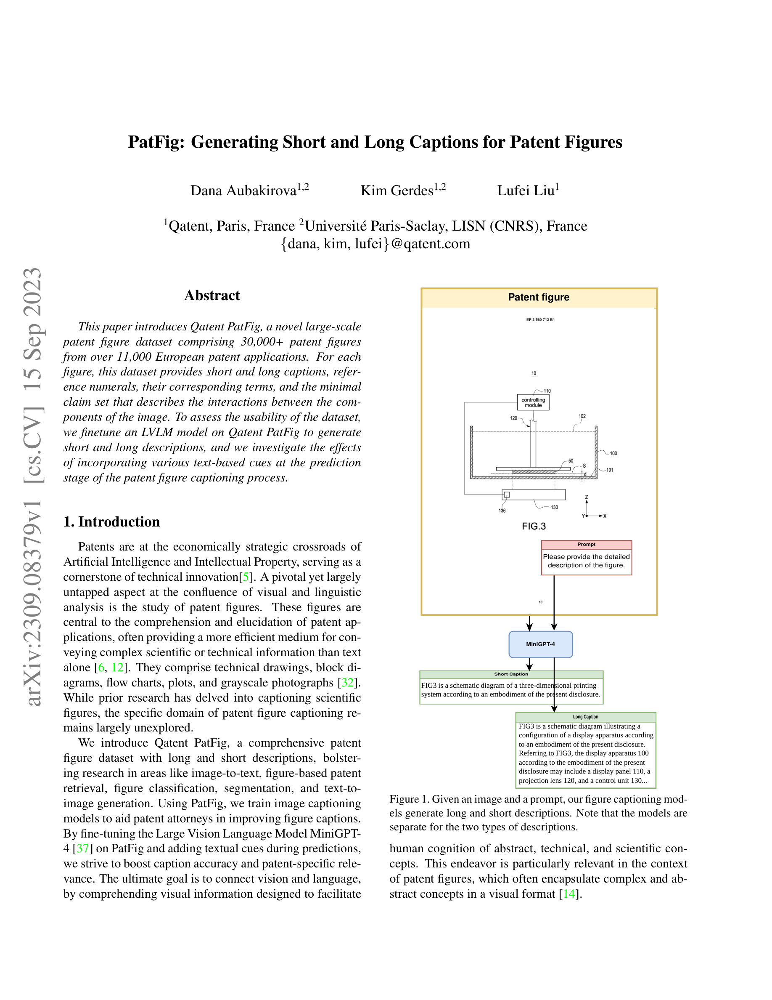
Qatent PatFig는 11,000건 이상의 유럽 특허 출원에서 추출한 30,000+개의 특허 도면으로 구성된 최초의 대규모 특허 도면 캡셔닝 데이터셋이다. 각 도면에 대해 짧은/긴 캡션, 참조 번호(reference numerals)와 대응 용어, 최소 청구항 집합을 제공하며, MiniGPT-4를 fine-tuning하여 특허 도면의 자동 캡션 생성 가능성을 검증하였다.
특허 도면이라는 미개척 영역에 최초의 대규모 캡셔닝 데이터셋을 구축한 의의가 있으나, 실험 설계(단일 모델, human evaluation 부재)와 성능 수준(long caption CIDEr < 0.06)이 미흡하여 데이터셋 소개 논문으로서의 완성도가 아쉽다. 데이터셋 자체의 풍부한 annotation(참조 번호, 용어, 청구항)은 후속 연구에 유용한 자원이 될 수 있다.
SciCap+: A Knowledge Augmented Dataset to Study the Challenges of Scientific Figure Captioning

SciCap+는 기존 SciCap 데이터셋(414K 과학 figure-caption 쌍)을 mention-paragraph(본문에서 해당 figure를 언급하는 단락)과 OCR 토큰(figure 내 텍스트 및 위치 정보)으로 확장한 knowledge-augmented 데이터셋이다. 과학 figure captioning을 단순 image-to-caption이 아닌 multimodal summarization task으로 재정의하고, M4C-Captioner를 통해 맥락 지식이 캡션 생성 품질을 대폭 향상시킴을 실증하였다.
과학 figure captioning을 knowledge-augmented task으로 재정의하고 mention-paragraph의 결정적 기여를 실증한 것은 의미 있는 통찰이나, 단일 모델(M4C-Captioner) 실험과 CS graph plot 한정이라는 범위 제약이 아쉽다. "Figure 이미지가 noise"라는 발견은 visual encoder의 한계를 반영할 뿐 figure 시각 정보 자체의 무용성을 의미하지 않으며, 이 점에 대한 심층 분석이 필요하다.
SciCap: Generating Captions for Scientific Figures

SciCap은 과학 논문의 figure에 대한 자동 캡션 생성을 위해 구축된 최초의 대규모 실세계 figure-caption 데이터셋이다. arXiv 컴퓨터과학 논문 290,000편 이상에서 200만 개 이상의 figure를 추출하고, figure type 분류, subfigure 제거, 텍스트 정규화 등 체계적 전처리 파이프라인을 통해 graph plot 중심의 133,543개 고품질 figure-caption 쌍을 제공하며, CNN+LSTM 기반 baseline 모델로 과학 figure captioning의 가능성과 도전과제를 실증적으로 제시했다.
SciCap은 과학 figure captioning이라는 중요한 문제를 정의하고, 최초의 대규모 실세계 데이터셋을 구축한 데 의의가 있다. 데이터 수집 및 전처리 파이프라인이 체계적이고 재현 가능하며, 합성 데이터와 실세계 데이터 간의 근본적 차이를 명확히 드러냈다. 다만, baseline 모델의 성능이 매우 낮고 모델링 측면의 기여가 제한적이어서, 데이터셋 논문으로서의 가치가 모델링 논문으로서의 가치보다 훨씬 크다. 이후 multimodal LLM 시대에 이 데이터셋이 벤치마크로 활용될 잠재력은 높다.
TLDR: Extreme Summarization of Scientific Documents
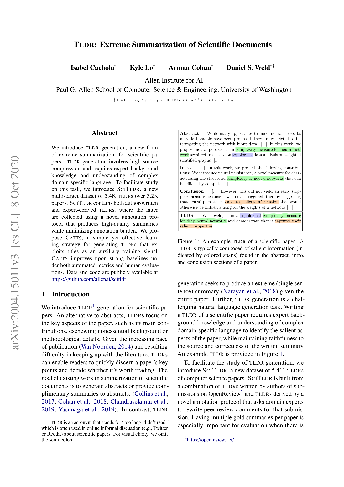
TLDR generation은 과학 논문을 단일 문장(평균 21단어)으로 극단적 압축하는 새로운 요약 태스크이다. 이를 위해 3,229편의 CS 논문에 대해 5,411개의 multi-target TLDR을 포함하는 SciTLDR 데이터셋을 구축하고, 논문 제목 생성을 보조 scaffold task로 활용하는 CATTS(Controlled Abstraction for TLDRs with Title Scaffolding) 학습 전략을 제안하여 BART 기반 baseline 대비 자동 메트릭과 인간 평가 모두에서 성능을 향상시켰다.
과학 논문의 extreme summarization이라는 실용적이면서 학술적으로도 흥미로운 새 태스크를 정의하고, peer review 재작성이라는 창의적 annotation protocol과 multi-target 평가 프레임워크를 제안한 것이 핵심 기여이다. CATTS의 title scaffolding 아이디어는 단순하면서 효과적이며, 풍부한 데이터 분석(nugget 분류, 변동성 분석)과 다각적 평가(자동 메트릭 + nugget informativeness + 원저자 correctness)가 논문의 완성도를 높인다. Semantic Scholar의 TLDR 기능으로 실제 대규모 서비스에 적용되어 실용적 영향력도 입증되었다.
ScispaCy: Fast and Robust Models for Biomedical Natural Language Processing
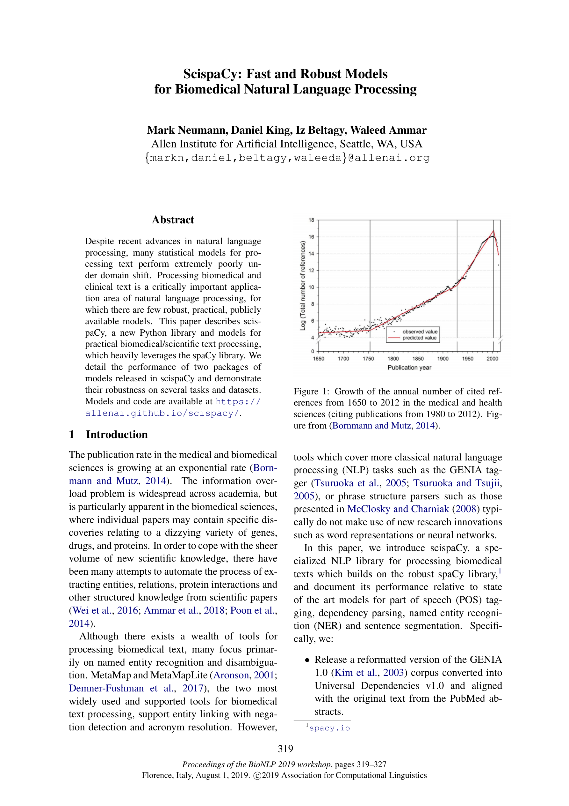
scispaCy는 spaCy 라이브러리 위에 구축된 생의학/과학 텍스트 전용 NLP 파이프라인으로, POS tagging, dependency parsing, NER, sentence segmentation, entity linking candidate generation을 포함하는 end-to-end 도구이다. GENIA 코퍼스와 OntoNotes 5.0을 결합하여 학습함으로써, 생의학 텍스트에서 SOTA에 근접한 성능을 유지하면서 C++/Java 기반 도구에 필적하는 처리 속도(abstract당 32-33ms)를 달성하였다.
학술적 혁신보다는 실용적 가치에 집중한 시스템 논문으로, spaCy의 검증된 아키텍처를 생의학 도메인에 맞게 재학습하고 통합 파이프라인으로 공개한 것이 핵심 기여이다. GENIA+OntoNotes 혼합 학습을 통한 domain robustness, 9개 NER 데이터셋에 대한 체계적 벤치마크, UMLS 기반 candidate generation 등 실용적 완성도가 높으며, 생의학 NLP 연구의 인프라로서 널리 채택되었다.
BERT: Pre-training of Deep Bidirectional Transformers for Language Understanding
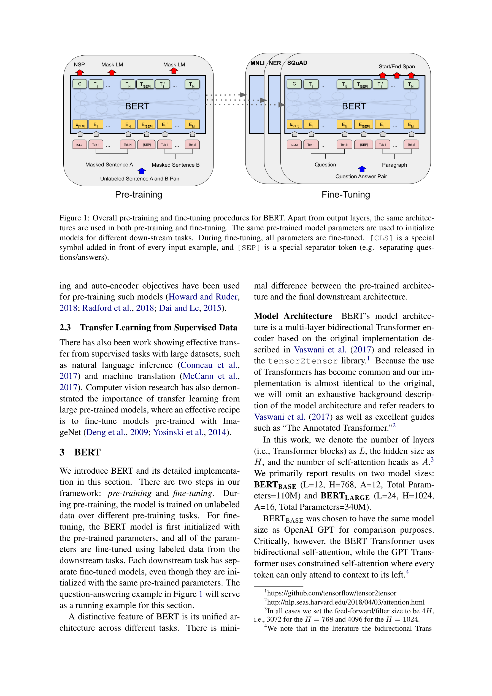
BERT(Bidirectional Encoder Representations from Transformers)는 Masked Language Model(MLM)과 Next Sentence Prediction(NSP)이라는 두 가지 비지도 사전학습 목표를 통해 깊은 양방향 Transformer 표현을 학습하는 언어 모델이다. 사전학습된 BERT에 단일 출력 레이어만 추가하여 fine-tuning하면, 11개 NLP 태스크에서 동시에 SOTA를 달성하며, task-specific architecture 설계의 필요성을 근본적으로 감소시켰다.
NLP 분야의 패러다임을 근본적으로 전환시킨 landmark 논문이다. MLM이라는 개념적으로 단순한 혁신을 통해 깊은 양방향 사전학습을 가능하게 하고, "pre-train then fine-tune" 패러다임을 확립하여 task-specific architecture 설계의 시대를 종식시켰다. 11개 벤치마크에서의 압도적 성능 향상, 풍부한 ablation study, 그리고 코드/모델 공개를 통해 후속 연구의 폭발적 성장을 촉발한 점에서 NLP 역사상 가장 영향력 있는 논문 중 하나이다.
Interesting Scientific Idea Generation using Knowledge Graphs and LLMs: Evaluations with 100 Research Group Leaders

Generalization Bias in Large Language Model Summarization of Scientific Research

ChartInstruct: Instruction Tuning for Chart Comprehension and Reasoning
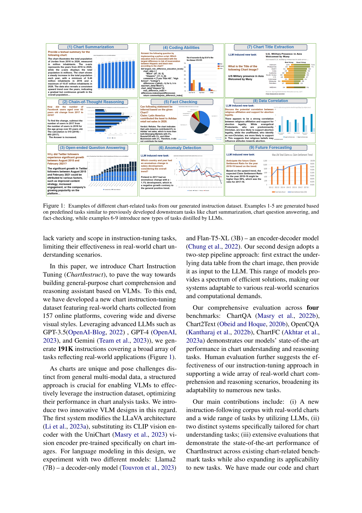
ChartGemma: Visual Instruction-tuning for Chart Reasoning in the Wild
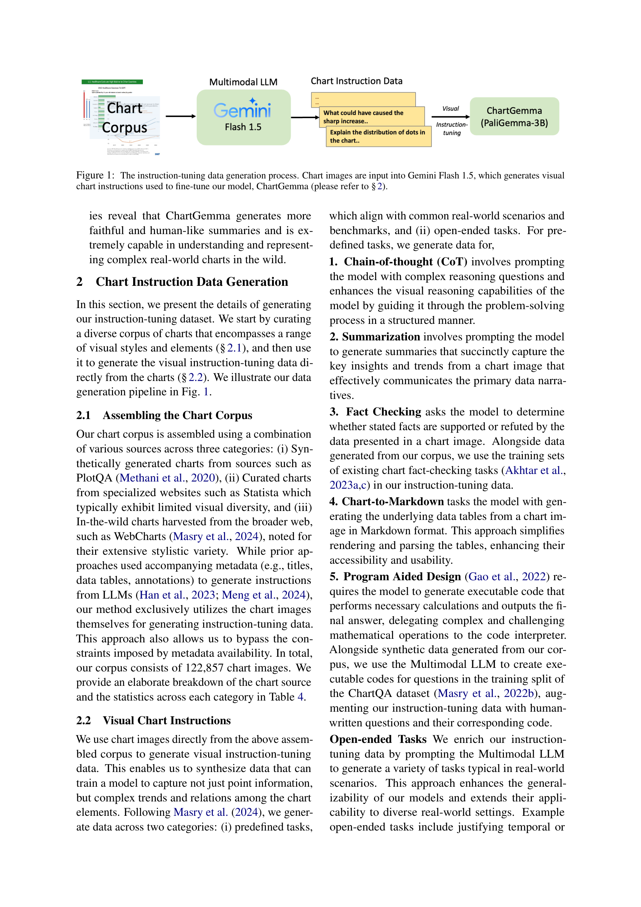
ChartLlama: A Multimodal LLM for Chart Understanding and Generation
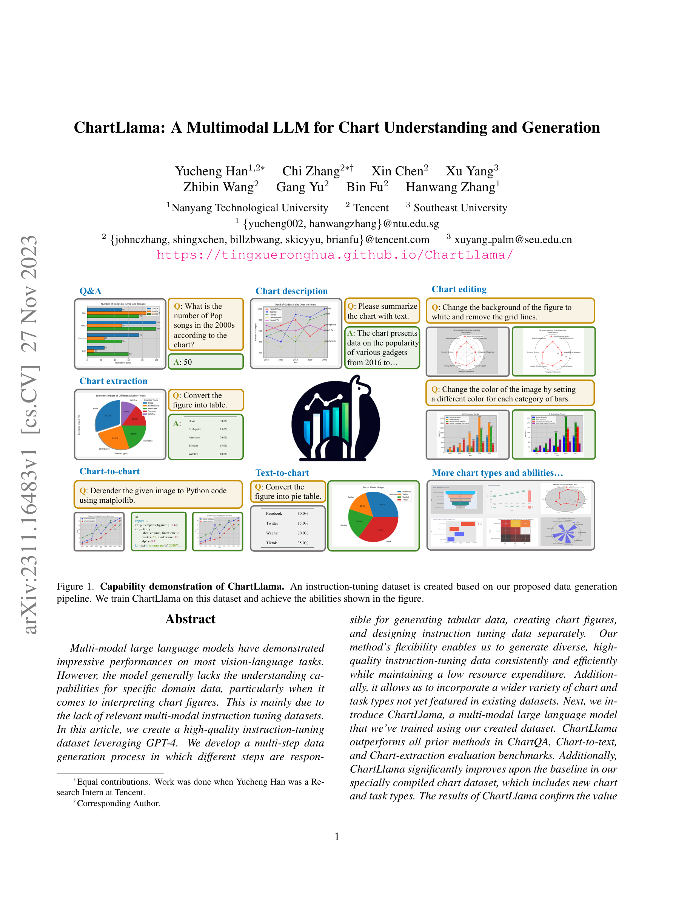
MMC: Advancing Multimodal Chart Understanding with Large-scale Instruction Tuning

Reading and Reasoning over Chart Images for Evidence-based Automated Fact-Checking


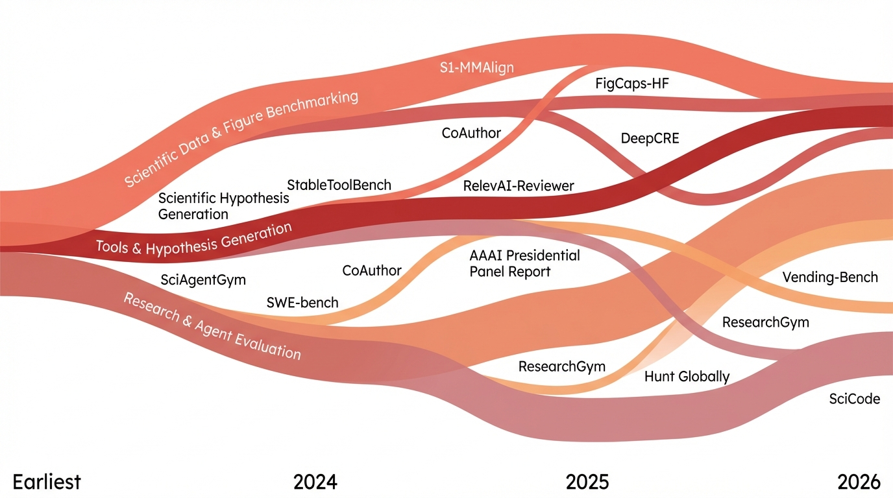
AI for Science 분야의 "Benchmarks & Evaluation" 연구들은 AI 모델과 시스템의 과학 연구 적용 및 평가에 대한 광범위한 노력을 보여준다. 이들은 주로 과학 워크플로우의 자동화 및 재현성 향상, LLM 에이전트의 과학적 도구 활용 능력 벤치마킹, 과학 데이터와 콘텐츠의 이해 및 생성 능력 평가, 그리고 AI가 과학 생태계에 미치는 영향 분석 등을 다룬다. 궁극적으로는 AI를 단순한 도구를 넘어 과학 연구의 강력한 파트너로 발전시키기 위한 기반을 마련하고자 한다.
이 연구 목록은 다양한 sub-category에 걸쳐 AI의 과학적 역량을 벤치마킹하고 평가하려는 노력을 보여준다. 과학 연구 워크플로우 자동화 및 재현성 분야에서는 수학 문헌 형식화(M2F), 사회과학 연구 재현성 검증(Scaling Reproducibility), 이미지 기반 과학 분석의 구조 발견(Criteria-first, semantics-later) 등 AI를 통한 워크플로우 자동화 및 재현성 향상 노력이 활발하다. 과학자를 위한 코딩 벤치마크(SciCode)와 체계적 문헌고찰(Using Artificial Intelligence for Systematic Review), 화학 반응 공간 탐색(Robot-assisted mapping) 등에서 AI의 활용이 확장되며, 훈련 데이터 한계를 넘어선 발견을 위한 검증기 활용 방법(Verifier-Constrained Flow Expansion)도 제시된다. LLM 에이전트 및 과학 도구 활용 벤치마킹 분야에서는 LLM 에이전트의 다단계 과학 도구 사용(SciAgentGym) 및 Tool Learning의 안정적인 벤치마킹(StableToolBench) 프레임워크가 개발되었다. AI-for-Science의 전반적인 준비도(SciHorizon) 및 AI 리뷰어의 서베이 논문 관련성 평가(RelevAI-Reviewer) 벤치마크도 구축되었으며, LLM의 가설 생성(Scientific Hypothesis Generation and Validation) 및 연구 가속화(Accelerating Scientific Research with Gemini) 역할도 탐구된다. 과학 데이터 및 콘텐츠 이해/생성 벤치마킹 분야에서는 과학 그림-텍스트 이해(S1-MMAlign)를 위한 대규모 멀티모달 데이터셋, 그림-캡션 생성(FigCaps-HF), 학술 웹페이지 생성(Paper2Web), 인간-AI 협업 글쓰기(CoAuthor)를 위한 벤치마크가 개발되었다. AI의 과학 연구 영향 및 역할 분석 측면에서는 AI 도구가 개별 과학자의 생산성을 높이지만 집단적 과학 탐구의 범위를 축소시킨다는 역설(Artificial intelligence tools expand scientists' impact but contract science's focus)이 밝혀졌고, AI의 R&D 전반에서의 역할(Artificial Intelligence in Research and Development)이 조명된다. 마지막으로 새로운 개념적 접근 및 협업 모델 분야에서는 대학 도서관 연구 지원 서비스 혁신을 위한 AI 개념적 기반(Towards AI for Science)과 더불어, AI를 단순한 도구가 아닌 "사고의 파트너"(Building Machines That Learn and Think with People)로 설계해야 한다는 비전이 제시된다.
이러한 연구들은 AI를 활용하여 과학적 발견의 속도와 효율성을 높이고, 재현성을 강화하며, 복잡한 과학 데이터를 이해하고 새로운 지식을 생성하는 데 기여하고 있다. 특히, LLM의 발전과 함께 과학적 추론, 가설 생성, 도구 활용 능력 등 더욱 고차원적인 AI 역량에 대한 벤치마킹과 평가가 활발히 이루어지고 있다. 앞으로는 AI가 단순한 보조자를 넘어, 인간 과학자와 상호작용하며 복잡한 문제를 해결하는 "사고의 파트너"로서 기능할 수 있도록 개념적, 기술적 발전을 모색하는 방향으로 연구가 심화될 것으로 예상된다.
Criteria-first, semantics-later: reproducible structure discovery in image-based sciences

이미지 기반 과학 분석에서 지배적인 "semantics-first" 패러다임(측정 데이터를 도메인 특화 라벨/온톨로지에 직접 매핑)의 근본적 한계를 지적하고, "criteria-first, semantics-later"라는 연역적 전환을 제안하는 개념 논문이다. 명시적 최적화 기준(robustness, scale coherence, compressibility, global consistency)으로 의미론과 무관한 구조적 산출물(structural product)을 먼저 추출하고, 도메인 온톨로지로의 의미 매핑은 하류에서 별도로 수행함으로써 재현성, 도메인 전이, 장기 모니터링을 가능하게 하는 통합 프레임워크를 제시한다.
Image-based science에서 "구조 추출을 의미 부여와 분리해야 한다"는 원칙을 cybernetics와 정보이론에 근거하여 체계적으로 논증한 시의적절한 개념 논문이다. 8개 도메인에 걸친 cross-domain evidence와 FAIR Digital Object로의 연결은 인상적이나, 순수 이론적 논문으로서 경험적 검증의 부재가 가장 큰 한계이다. AI4Science 관점에서 foundation model 시대에 "어디에 이론을 넣을 것인가"라는 근본적 질문을 제기한 점에서 가치가 있으며, 향후 구체적 실험과 도구 구현이 뒷받침된다면 영향력이 클 수 있는 프레임워크이다.
M2F: Automated Formalization of Mathematical Literature at Scale

수학 교과서와 연구 논문을 Lean 4 형식 증명 라이브러리로 자동 변환하는 최초의 프로젝트 규모(project-scale) 에이전틱 프레임워크 M2F(Math-to-Formal)를 제안한다. 2단계 파이프라인(Stage 1: 명제 컴파일, Stage 2: 증명 복구)과 검증기 인증 수정(VeriRefine) 원칙을 통해, 약 3주 만에 479페이지의 실해석학/볼록해석학 교과서로부터 153,853줄의 Lean 코드(241개 파일, 4,116개 선언)를 생성하여 end-to-end 빌드에 성공하였다. FATE-H 벤치마크에서 96% 증명 성공률을 달성하여 Seed-Prover 1.5(80%)를 16%p 상회하였다.
수학 형식화의 패러다임을 개별 정리에서 프로젝트 규모로 전환한 획기적 연구이다. VeriRefine의 단조성 보장 원칙은 장기 실행 안정성을 우아하게 해결하며, 479페이지에서 15만 줄 이상의 빌드 가능한 Lean 라이브러리를 생성한 성과는 수학 형식화 커뮤니티에 즉각적 영향을 줄 수 있다. FATE-H 벤치마크 오류 발견은 형식 검증이 LLM을 보완하는 독특한 가치를 보여준다.
Scaling Reproducibility: An AI-Assisted Workflow for Large-Scale Reanalysis
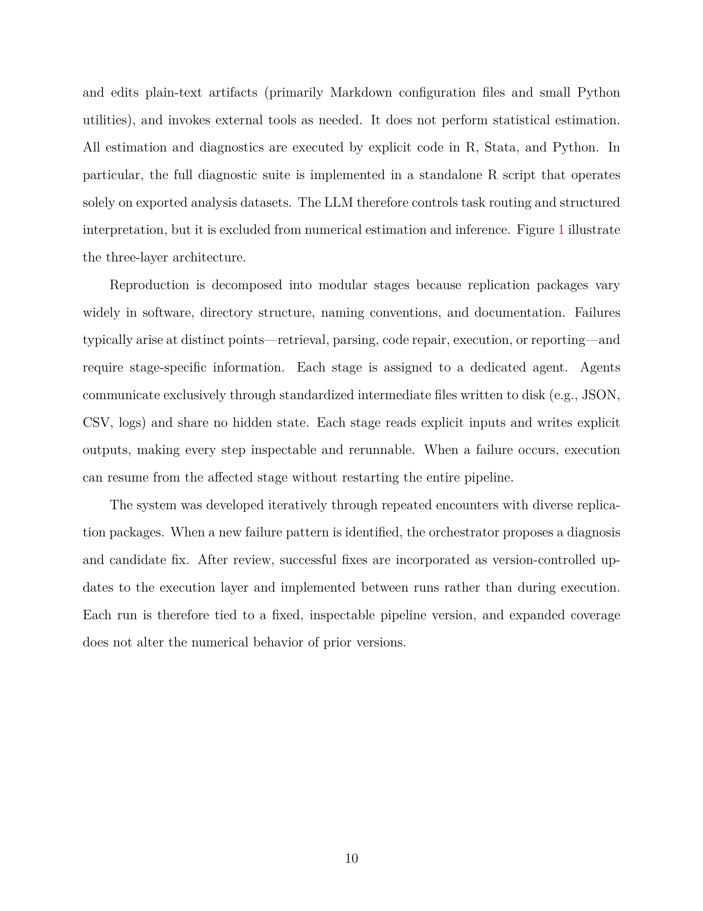
실증 사회과학 연구의 대규모 재현성 검증을 자동화하는 에이전트 AI 워크플로우를 개발하고 평가한다. 핵심 설계 원칙은 "과학적 추론과 계산 실행의 분리"로, 인간 연구자가 진단 템플릿(estimand, estimator, robustness check)을 사전 설계하면, AI 워크플로우가 복제 자료의 획득, 환경 재구성, 코드 실행, 분석 데이터셋 추출, 표준화 진단 보고서 생성을 자동으로 수행한다. 92편의 도구변수(IV) 연구(215개 사양)에 대해 전체 87%, 접근 가능한 자료 조건하 100%의 end-to-end 재현 성공률을 달성했다.
대규모 재현성 검증이라는 과학의 근본적 과제를 에이전트 AI 워크플로우로 체계적으로 해결한 매우 의미 있는 연구이다. "과학적 추론과 계산 실행의 분리"라는 설계 원칙이 명확하고, 92편/215개 사양에 대한 100% 조건부 성공률은 설득력 있는 실증이다. 특히 10개 클래스 64개 해결 패턴의 상세한 실패 인벤토리는 재현성 연구 분야에 대한 독립적인 기여이다. 다만 적응 과정의 인간 개입 정도와 새로운 코퍼스에서의 일반화 가능성이 더 명확해질 필요가 있다.
Verifier-Constrained Flow Expansion for Discovery Beyond the Data

사전 학습된 플로우/디퓨전 모델이 훈련 데이터의 좁은 영역에만 밀도를 집중시키는 한계를 극복하기 위해, 외부 검증기(verifier)를 활용하여 유효 설계 공간 전체로 모델의 밀도를 확장하는 Flow Expander(FE)를 제안한다. 강한 검증기(valid design space를 정확히 특성화)와 약한 검증기(필터 역할만 수행)를 형식적으로 구분하고, 각각에 대해 전역적(global) 및 국소적(local) 플로우 확장 문제를 검증기 제약 엔트로피 최대화로 정식화한다. FE는 플로우 프로세스의 노이즈 상태 공간에서 미러 디센트를 수행하며, 이상적/일반적 조건 하 수렴 보장을 제공한다.
플로우/디퓨전 모델의 설계 공간 탐색이라는 AI for Science의 핵심 문제를 검증기 제약 엔트로피 최대화라는 수학적으로 엄밀한 프레임워크로 해결한 우수한 연구이다. 강한/약한 검증기의 형식적 구분, Expand-then-Project 스킴, 노이즈 상태 공간으로의 리프팅이라는 세 가지 핵심 아이디어가 자연스럽게 결합되어 있으며, O(1/K) 수렴 보장과 분자 설계 실험 결과가 이론적 주장을 뒷받침한다. ICLR 2026에 채택된 것이 납득되는 완성도 높은 논문이다.
Paper2Web: Let's Make Your Paper Alive!

In this paper, we introduce Paper2Web, a benchmark dataset and multi-dimensional evaluation framework for assessing academic webpage generation. 
StableToolBench: Towards Stable Large-Scale Benchmarking on Tool Learning of Large Language Models

StableToolBench는 기존 ToolBench의 불안정성 문제(API 상태 변화, 평가 무작위성)를 해결하기 위해 가상 API 서버(캐싱 시스템 + LLM 기반 API 시뮬레이터)와 안정적 평가 시스템(Solvable Pass Rate/Win Rate + GPT-4 평가자)을 제안한 벤치마크이다. 50%의 API가 비가용 상태에서도 성능 변동이 분산 범위 내에 머물러, 대규모 tool learning 벤치마크의 재현성과 비교 가능성을 크게 향상시켰다.
ToolBench의 재현성 문제를 캐싱과 LLM 시뮬레이션이라는 실용적 접근으로 해결한 엔지니어링 기여가 탁월한 논문이다. API 비가용률 50%에서도 안정적 성능을 유지하며, Turing Test를 통해 시뮬레이션의 현실성을 입증한 점이 인상적이다. 다만, GPT-4 의존성이 높아 비용과 재현성 측면에서 근본적 한계가 있으며, 실시간 데이터 의존 API 처리 등 해결해야 할 과제가 남아 있다. Tool learning 연구 커뮤니티에 안정적 벤치마킹 기반을 제공하는 중요한 인프라 수준의 기여이다.
Transforming Science with Large Language Models: A Survey on AI-assisted Scientific Discovery, Experimentation, Content Generation, and Evaluation
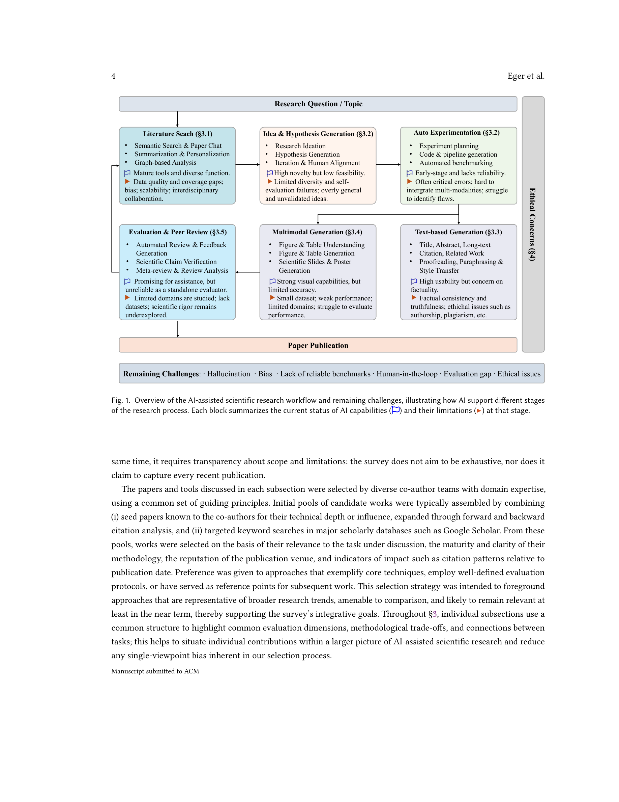
In this survey, we provide a curated overview of literature representative of the core techniques, evaluation practices, and emerging trends in AI-assisted scientific discovery. We aim for this survey to serve both as an accessible, structured orientation for newcomers to the field, as well as a catalyst for new AI-based initiatives and their integration into future ``AI4Science'' systems.
관련 분야의 포괄적 서베이로서 연구자들에게 유용한 참고 자료를 제공하나, 서베이 논문 특성상 독창적 기여는 제한적이다. --- ### Figures | Figure | 설명 | |--------|------| |  | **Fig. 1**: 논문의 핵심 프레임워크 또는 방법론 개요 |
RelevAI-Reviewer: A Benchmark on AI Reviewers for Survey Paper Relevance
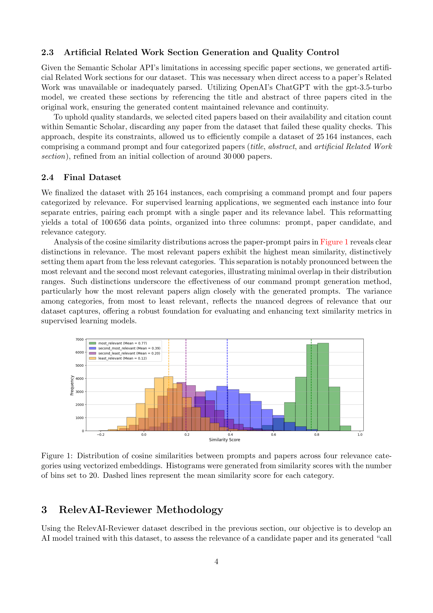
서베이 논문의 "관련성(relevance)" 평가를 4-class 분류 문제로 정식화하고, 이를 위한 벤치마크 데이터셋(25,164 인스턴스, 총 100,656 prompt-paper 쌍)과 베이스라인 시스템(RelevAI-Reviewer)을 제안한 연구이다. BERT + thermometer encoding 조합이 Kendall's Tau 0.928을 달성하여, SVM(0.761)과 cosine similarity baseline(0.774)을 크게 상회했다.
서베이 논문의 관련성 평가를 분류 문제로 정식화하고 대규모 벤치마크를 구축한 점은 실용적 기여가 있다. Thermometer encoding의 도입과 데이터 효율성 분석도 유의미하다. 그러나 관련성 레이블링의 휴리스틱이 조잡하고(특히 second most/second least 경계), 프롬프트가 원본 논문에서 역생성되어 태스크 자체가 어휘 유사도 판별에 가까워질 수 있다는 근본적 한계가 있다. 최신 LLM과의 비교가 없어 2024년 시점에서의 실질적 baseline 가치가 제한적이며, 서베이 논문만을 대상으로 한 범위 제한도 일반화를 어렵게 한다.
Semi-Supervised 2D Human Pose Estimation Driven by Position Inconsistency Pseudo Label Correction Module
In this paper, we delve into semi-supervised 2D human pose estimation. To solve the problems mentioned above, we propose a semi-supervised 2D human pose estimation framework driven by a position inconsistency pseudo label correction module (SSPCM).
Semi-Supervised 2D Human Pose Estimation Driven by Position Inconsistency Pseudo Label Correction Module은(는) to further improve the performance of the student model, we use the semi-supervised cut-occlude based on pseudo keypoint perception to generate more hard and effective samples을 보여주는 연구이다.
Align then Fusion: Generalized Large-scale Multi-view Clustering with Anchor Matching Correspondences

To solve this challenging issue, we propose the first study of the generalized and flexible anchor graph fusion framework termed Fast Multi-View Anchor-Correspondence Clustering (FMVACC).
Align then Fusion: Generalized Large-scale Multi-view Clustering with Anchor Matching Correspondences은(는) moreover, we theoretically show the connection between fmvacc and existing multi-view late fusion and partial view-aligned clustering , which further demonstrates our generality을 보여주는 연구이다.
Towards AI for Science: Developing a Conceptual Basis for Transforming Research Support Services in University Libraries
Accelerating Scientific Research with Gemini: Case Studies and Common Techniques

Scientific Hypothesis Generation and Validation: Methods, Datasets, and Future Directions

Artificial intelligence tools expand scientists' impact but contract science's focus

AI 도구의 과학 연구 도입이 **개별 과학자에게는 생산성과 영향력을 확대**하지만, **집단적 과학 탐구의 범위는 축소**시킨다는 역설(paradox)을 4,130만 편의 자연과학 논문 분석을 통해 실증적으로 입증한 대규모 계량서지학(scientometrics) 연구이다. AI를 활용하는 과학자는 3.02배 더 많은 논문을 발표하고 4.84배 더 많은 인용을 받으며, 연구 리더가 되기까지 1.37년 더 빠르지만, AI 연구 전체의 지식 범위(knowledge extent)는 4.63% 축소되고 후속 연구 간 상호작용은 22% 감소한다. ---
Nature 게재에 걸맞은 대규모 실증 연구로, 과학 정책에 직접적 시사점을 제공하는 중요한 발견을 담고 있다. "AI가 기존 분야를 자동화하되 새로운 분야를 탐구하지 않는다"는 핵심 메시지는 현재 AI for Science 열풍에 대한 시의적절한 경고이다. 방법론적으로 BERT 기반 논문 식별, SPECTER 2.0 기반 지식 범위 측정, birth-death 모델 기반 경력 분석 등 다층적 접근이 설득력 있으나, 인과관계의 한계는 해석에 주의를 요한다. 데이터 풍부 영역으로의 AI 집중 현상은 "가로등 효과(streetlight effect)"의 체계적 버전으로, 과학 탐구의 다양성 유지를 위한 의도적 정책 개입의 필요성을 강하게 시사한다.
S1-MMAlign: A Large-Scale, Multi-Disciplinary Dataset for Scientific Figure-Text Understanding
과학 논문의 그림(figure)과 텍스트 간의 심각한 의미적 격차(semantic gap)를 해소하기 위해, 250만 편의 오픈 액세스 논문에서 추출한 **1,550만 개의 이미지-텍스트 쌍**으로 구성된 대규모 멀티모달 데이터셋 **S1-MMAlign**을 공개한다. 핵심 기여는 Qwen-VL 멀티모달 대규모 모델을 활용하여 논문 초록과 인용 맥락을 합성함으로써 희소한 원본 캡션을 의미적으로 풍부한 설명으로 변환하는 **AI 기반 의미 강화(semantic enhancement) 파이프라인**이다. ---
AI for Science 시대의 핵심 인프라 자원으로서 의미 있는 기여를 하는 데이터셋 논문이다. 1,550만 쌍이라는 규모와 AI 기반 의미 강화라는 아이디어는 설득력 있으며, CLIP score 18.21% 향상은 파이프라인의 효과를 보여준다. 그러나 현재 단계에서는 데이터셋 구축과 기초적 품질 메트릭에 머물러 있어, 실제 과학적 멀티모달 추론 성능 향상에 기여하는지를 보여주는 다운스트림 실험이 필수적이다. 재캡셔닝된 텍스트의 과학적 정확성에 대한 인간 평가 부재는 가장 큰 약점이며, 물리학/CS 편향은 "AI for Science" 전반에의 활용을 제한할 수 있다. CC-BY-4.0 공개와 체계적인 데이터 구조는 커뮤니티 활용 측면에서 높이 평가할 만하다.
A practical evaluation of AutoML tools for binary, multiclass, and multilabel classification
Using Artificial Intelligence for Systematic Review: The Example of Elicit


SciHorizon: Benchmarking AI-for-Science Readiness from Scientific Data to Large Language Models

Building Machines That Learn and Think with People
AI를 단순한 "사고의 도구(tools for thought)"가 아닌 **"사고의 파트너(thought partners)"**로 설계해야 한다는 비전을 제시하는 Perspective 논문이다. 효과적인 사고 파트너의 세 가지 요건으로 (1) **나를 이해하는 시스템** (사용자의 목표, 신념, 자원 제약 모델링), (2) **내가 이해할 수 있는 시스템** (해석 가능하고 예측 가능한 행동), (3) **세계를 함께 이해하는 시스템** (공유된 세계 표현에 기반한 협력)을 제안한다. 이를 달성하기 위해 **계산 인지과학(computational cognitive science)**의 핵심 모티프들 -- 베이지안 추론, 마음 이론(Theory of Mind), 자원 합리성(resource rationality), 확률적 프로그래밍 -- 을 활용한 대안적 스케일링 경로를 주장한다. ---
### 강점 - Nature Human Behaviour에 게재된 만큼, 인지과학과 AI의 교차점에서 매우 풍부한 학제적 통찰 제공 - 인지과학의 성숙한 이론적 기반(베이지안 인지, 마음 이론, 합리적 화행 등)을 AI 설계 원칙으로 번역하는 시도가 설득력 있음 - 4개 도메인(프로그래밍, 체화, 스토리텔링, 의학)의 구체적 사례 연구가 추상적 비전을 실체화 - 위험 요소(과의존, 의인화, 정렬 오류)에 대한 솔직한 논의와 인프라 수준의 해결책 제시 - Cambridge, Princeton, MIT, NYU의 선도적 인지과학/AI 연구자 13명의 종합적 관점 ### 약점 - 제안된 베이지안 접근법의 실질적 스케일링 가능성에 대한 의문 -- 확률적 프로그래밍이 현실 세계의 복잡성과 대규모 사용자 기반을 감당할 수 있는지 불분명 - LLM의 암묵적 세계 모델 vs. 명시적 구조화 모델의 상대적 장단점에 대한 공정한 비교 부재 - 사례 연구들이 아직 프로토타입 수준이며, 실제 사용자와의 대규모 상호작용 실험 결과가 부족 - "사고 파트너"라는 용어 자체가 의인화를 촉진할 위험이 있으나, 이에 대한 대응이 다소 소략 ### 총평 인간-AI 협력의 미래에 대해 인지과학에 깊이 뿌리내린 체계적 비전을 제시하는 영향력 높은 Perspective 논문이다. "사고의 도구"에서 "사고의 파트너"로의 전환이라는 핵심 주장은 LLM 시대의 AI 설계 철학에 중요한 방향 제시를 한다. 특히 베이지안 마음 이론, 합리적 화행, 자원 합리성 등의 인지과학 모티프를 공학적 설계 원칙으로 구조화한 "Bayesian Thought Partner Toolkit"은 향후 인간 중심 AI 연구의 참조 프레임워크가 될 잠재력이 크다. 다만, 확률적 프로그래밍 기반 접근의 현실적 확장성은 향후 대규모 실증 연구를 통해 검증되어야 할 과제로 남는다.
FigCaps-HF: A Figure-to-Caption Generative Framework and Benchmark with Human Feedback
CoAuthor: Designing a Human-AI Collaborative Writing Dataset for Exploring Language Model Capabilities

Google Scholar to Overshadow Them All? Comparing the Sizes of 12 Academic Search Engines and Bibliographic Databases

Best humans still outperform artificial intelligence in a creative divergent thinking task
"AI Ethics & Integrity" 분야의 연구들은 인공지능, 특히 대규모 언어 모델(LLM)과 생성형 AI(GenAI)의 과학 및 학술 분야 통합이 가속화됨에 따라 발생하는 복잡한 윤리적 및 무결성(integrity) 문제에 집중하고 있습니다. 이 논문들은 데이터의 진위성, AI 생성 콘텐츠의 신뢰성, 그리고 AI가 연구 과정에 미치는 전반적인 영향 등 핵심적인 우려 사항들을 다루고 있습니다. 책임감 있는 AI 활용을 위한 감지, 교정 및 프레임워크 구축 노력을 조명하며, AI 연구의 미래 방향을 제시합니다.
이 연구들은 여러 sub-category를 통해 주요 문제와 해결 노력을 탐색합니다. 첫째, 데이터 무결성 및 콘텐츠 진위성 (Data Integrity & Content Authenticity) 측면에서, AI 시대 재료 과학에서의 데이터 무결성 위기는 AI 생성 현미경 이미지가 실제 데이터와 전문가조차 구별하기 어렵고(40-51% 정확도), 재료 특성화 분석에 20-30%의 기본 오류가 존재하며, GenAI가 물리 원리에 모순될 수 있음을 지적합니다. 이를 해결하기 위해 책임감 있는 과학과 혁신을 위한 다각적 프레임워크가 제안됩니다. 또한, 고등 교육 분야에서는 AI가 생성한 입학 지원 자료를 탐지하여 진정성을 확보하는 것이 중요한 과제로 부상했습니다. 둘째, LLM의 환각 및 신뢰성 (LLM Hallucination & Trustworthiness) 문제에 대응하여, LLM의 사실성(factuality)을 향상하고 환각(hallucination)을 줄이기 위해 Retrieval-Augmented Generation (RAG)과 같은 기법이 지식 집약적 자연어 처리(Knowledge-Intensive NLP) 태스크에서 효과를 보였습니다. Vision-LLM에서 발생하는 환각을 교정하기 위해 Claim Decomposition 및 Program of Thought Verification과 같은 새로운 검증 방법론 'Pelican'도 개발되었습니다. AAAI Presidential Panel Report에서도 AI 연구의 17개 핵심 미래 주제 중 하나로 'Factuality & Trustworthiness'가 강조되어 중요성을 뒷받침합니다. 셋째, 연구 과정 내 LLM 활용 및 윤리적 함의 (LLM Utilization in Research & Ethical Implications)에 대한 논의도 활발합니다. AI 기반 리뷰 시스템 연구는 LLM이 학술 리뷰에서 확장성과 편향(bias) 인식을 어떻게 개선할 수 있는지 평가합니다. 또한, 연구자들의 LLM 활용 실태와 인식에 대한 대규모 설문 조사를 통해 LLM의 연구 도구로서의 역할을 탐색하며, 100명 이상의 NLP 연구자와 함께 진행된 대규모 인간 연구는 LLM이 새로운 연구 아이디어를 생성할 수 있는지에 대한 가능성과 유용성을 검증하려는 시도입니다.
이러한 연구들은 AI 시스템의 신뢰성과 책임감을 강화하기 위한 새로운 시도와 향후 연구 방향을 제시합니다. 전문가조차 오인할 수 있는 AI 생성 데이터의 도전을 해결하기 위한 견고한 검증 메커니즘과 책임감 있는 AI 프레임워크의 필요성이 강조됩니다. LLM의 연구 도구로서의 잠재력을 탐색하면서도, 환각 및 편향 문제를 해결하고 인간 전문가의 판단을 보완하는 방향으로 AI를 발전시켜 과학 및 학술 무결성을 유지하는 데 주력해야 할 것입니다.
Data integrity in materials science in the era of AI: balancing accelerated discovery with responsible science and innovation

AI 시대 재료과학에서의 데이터 무결성(data integrity) 위기를 체계적으로 분석하고, 이를 해결하기 위한 다각적 프레임워크를 제안하는 관점(perspective) 논문이다. 전문가도 AI 생성 현미경 이미지를 실제 실험 데이터와 구별하지 못하며(40-51% 정확도), 재료 특성화 분석의 20-30%에 기본 오류가 존재하고, GenAI가 물리 원리를 위반하는 그럴듯한 데이터 조작 코드를 1시간 내에 생성할 수 있다는 구체적 증거를 제시한다.
AI가 재료과학을 혁신하는 시점에서 데이터 무결성이라는 근본적 문제를 정면으로 다룬 시의적절하고 중요한 관점 논문이다. GenAI의 데이터 조작 위험을 구체적 사례로 입증하고, 임상 연구의 검증 방법론을 재료과학에 적용한 모듈식 체크리스트는 실용적 가치가 높다. 다만 perspective 논문의 특성상 제안의 실증적 검증이 부재하며, "garbage in, garbage out"의 경고를 넘어 구체적 해결 도구의 개발과 배치가 후속 과제로 남는다.
AAAI Presidential Panel Report on the Future of AI Research
AAAI 2025 Presidential Panel Report는 24명의 저명 AI 연구자가 2024년 여름부터 2025년 봄까지 작업하고, 475명의 AAAI 커뮤니티 설문을 포함하여 AI 연구의 미래를 17개 주제로 체계적으로 조망한 포괄적 보고서이다. AI Reasoning, Factuality & Trustworthiness, AI Agents, Evaluation, Ethics & Safety, Embodied AI, Cognitive Science, Hardware, Social Good, Sustainability, Scientific Discovery, AGI, Perception vs Reality, Research Diversity, 학제간 연구, 학계의 역할, 지정학적 함의를 다루며, 각 주제별로 역사적 맥락, 현재 동향, 연구 과제, 커뮤니티 의견을 구조적으로 정리했다.
AAAI 2025 Presidential Panel Report는 generative AI 시대의 AI 연구 전체를 17개 주제로 체계적으로 조망한 가장 포괄적인 현황 보고서이다. Rodney Brooks, Stuart Russell, Eric Horvitz, Yoshua Bengio 등 세계 최고 권위자들의 집단 지성과 475명의 커뮤니티 설문을 결합하여, AI 연구의 기술적 도전과제뿐 아니라 사회적-제도적-지정학적 맥락까지 아우른다. 비기술적 서술로 인해 개별 주제의 깊이에 한계가 있으나, AI 연구의 현재 위치와 미래 방향에 대한 "조감도"로서 정책 입안자, 펀딩 기관, 타 분야 연구자에게 매우 유용하다. 특히 AI for Scientific Discovery 챕터는 도구-협업자-자율 과학자 스펙트럼을 제시하며, Nobel Turing Challenge라는 야심찬 비전을 통해 이 분야의 궁극적 목표를 명확히 한다.
Admissions in the Age of AI: Detecting AI-Generated Application Materials in Higher Education


AI-Driven Review Systems: Evaluating LLMs in Scalable and Bias-Aware Academic Reviews

Pelican: Correcting Hallucination in Vision-LLMs via Claim Decomposition and Program of Thought Verification

LLMs as Research Tools: A Large Scale Survey of Researchers' Usage and Perceptions

Can LLMs Generate Novel Research Ideas? A Large-Scale Human Study with 100+ NLP Researchers

AI for Science 분야는 인공지능이 과학적 발견의 전 과정 -- 가설 생성, 실험 설계, 데이터 수집 및 해석, 결과 분석 -- 을 증강하고 가속하는 데 집중하며 빠르게 발전하고 있습니다. 이는 특히 Large Language Models (LLM), Physics-Informed Neural Networks (PINN), Neural Operators, 그리고 다양한 딥러닝 기법들을 활용하여 기존 과학 연구의 한계를 극복하려는 시도로 나타납니다. 궁극적으로는 연구 생산성을 혁신하고 자율적인 과학 발견 시스템을 구축하는 것을 목표로 합니다.
이 분야의 주요 연구는 여러 sub-category로 나눌 수 있습니다. 첫째, AI 기반 과학적 발견 및 자동화 (LLM 중심)는 LLM을 핵심 도구로 활용합니다. 과학 문헌에서 역학적 구성 방정식이나 MOF(Metal-Organic Framework) 합성 조건 및 물성 데이터를 자동 추출하여(Automated Extraction, L2M3) 수동적인 데이터 수집의 문제를 해결하고, LLM 기반 에이전트는 가설 발견(Autonomous Agents, Large Language Models for Automated Open-domain Scientific Hypotheses Discovery), 실험 설계 및 실행, 결과 분석 전 주기에 걸쳐 과학자를 오케스트레이션합니다. 특히 ChemCrow나 MatPilot 같은 에이전트들은 화학 합성, 재료 연구, 심지어 컴퓨테이셔널 유체 역학(OpenFOAMGPT) 분야에서 도구 활용을 통한 자동화를 가능하게 합니다. 둘째, 자율 주행 실험실(Self-Driving Laboratory, SDL)은 고분자 브러시 연구에서 합성-시뮬레이션-특성분석 전체 파이프라인에 AI/ML 워크플로우를 도입하여(Polymer Brushes and Grafted Polymers) 실험실의 완전한 자율화를 지향합니다. 셋째, 과학적 머신러닝 (PINN 및 Neural Operator)은 고전적인 수치 해석 방법의 한계를 극복하려는 노력으로, Neural-POD는 고유직교분해(POD/PCA)의 선형성 및 격자 종속성 문제를 해결하기 위해 신경망 기반 비선형 직교 기저 함수를 제안합니다. SPINONet은 에너지 효율적인 spiking neural network(SNN)를 physics-informed operator learning에 통합하고, Lang-PINN은 LLM이 자연어 설명을 바탕으로 PINN을 직접 구축하게 하여 복잡한 물리 시스템 모델링을 가속화합니다. 넷째, 재료 과학 및 화학 분야에서는 비정렬 결정 구조 생성(DMFlow)이나 원자 수준의 항체 설계(RFdiffusion), 그리고 무기 재료의 원자 구조 데이터와 텍스트 입력을 통합하는 멀티모달 LLM(MatterChat) 등을 통해 새로운 재료를 발견하고 특성을 예측합니다. 다섯째, 생의학 및 생명 과학 분야에서는 AI 기반 교차 약물 반응 평가(DeepCRE)나 생체 분자 상호작용 모델링(Boltz-1), 그리고 LLM을 활용한 단일 세포 분석(Scaling Large Language Models for Next-Generation Single-Cell Analysis) 등으로 신약 개발과 생체 시스템 이해를 심화합니다. 마지막으로, AI 신뢰성 및 로드맵 관련 연구들은 LLM의 과학적 신뢰성 평가(SciTrust)나 과학적 머신러닝의 불확실성 정량화(Uncertainty quantification) 방법론을 제시하여 AI for Science 분야의 안정적인 발전을 위한 기반을 다집니다.
이러한 연구들은 LLM 기반 에이전트의 다단계 추론 및 도구 활용 능력, 멀티모달 정보 통합, 그리고 human-AI 협업 프레임워크를 통해 과학적 발견의 새로운 지평을 열고 있습니다. 특히, 자연어를 통해 복잡한 과학적 문제를 해결하고, 자율적인 실험과 분석을 수행하는 시스템은 아직 초기 단계에 있지만, 데이터-중심 및 물리-인식 모델링의 융합을 통해 궁극적으로 완전 자율 과학 연구실(Self-Driving Laboratory)을 실현하는 방향으로 나아가고 있습니다. 미래에는 더욱 고도화된 AI 에이전트와 통합 플랫폼이 과학자들이 직면한 복잡한 문제들을 해결하고, 예측 불가능한 새로운 발견을 가능하게 할 것입니다.
SPINONet: Scalable Spiking Physics-informed Neural Operator for Computational Mechanics Applications
SPINONet은 physics-informed operator learning에 에너지 효율적인 spiking neural network(SNN)를 통합한 최초의 프레임워크이다. Separable DeepONet 아키텍처에서 branch network(입력 함수 인코딩)에만 Variable Spiking Neuron(VSN)을 배치하고, trunk network(좌표 의존 경로)는 연속적으로 유지하여 PDE residual 계산에 필요한 미분 가능성을 보존하면서 sparse, event-driven 연산을 달성한다. Burgers, Heat, Eikonal 방정식에서 기존 dense baseline과 유사한 정확도를 유지하면서 GPU 메모리와 연산량을 크게 절감한다.
Physics-informed operator learning에 spiking neural network를 통합하는 참신한 아이디어를 제시하며, branch/trunk 분리를 통해 spiking dynamics와 PDE 미분의 호환성 문제를 우아하게 해결한 연구이다. 해석적 에너지 효율 분석은 설득력 있으나, 현재 GPU 생태계에서의 실질적 이점은 제한적이며 neuromorphic hardware에서의 검증이 필수적이다. Computational mechanics의 edge deployment라는 미래 방향에 대한 선구적 탐색으로서 가치가 있다.
LLM-ODE: Data-driven Discovery of Dynamical Systems with Large Language Models
동역학 시스템의 지배 방정식(ODE)을 관측 궤적 데이터로부터 자동 발견하기 위해 LLM을 genetic programming(GP)의 진화 연산자로 활용하는 하이브리드 프레임워크 LLM-ODE를 제안한다. 기존 GP의 무작위 mutation/crossover를 LLM이 생성하는 구조적으로 informed된 제안으로 대체하여, 기호식(symbolic expression) 탐색 효율을 크게 향상시켰다. 91개 동역학 시스템(1~4차원, 혼돈 역학 포함) 벤치마크에서 LLM-ODE가 PySR, SINDy, ODEFormer를 탐색 효율과 Pareto front 품질 측면에서 일관적으로 능가한다.
GP의 무작위 진화 연산자를 LLM의 구조적 제안으로 대체한다는 아이디어가 명확하고 효과적이며, 91개 동역학 시스템에 대한 포괄적 벤치마크와 3종 LLM 비교가 실험의 신뢰성을 높인다. 연립 ODE 시스템 발견으로의 확장이 기존 LLM-SR 대비 중요한 진전이다. 고차원에서의 절대 성능과 실험 데이터 적용 가능성은 향후 과제로 남지만, LLM을 과학적 방정식 발견의 지능형 탐색 도구로 활용하는 방향성을 잘 제시한 연구이다.
Polymer Brushes and Grafted Polymers: AI/ML-Driven Synthesis, Simulation, and Characterization towards autonomous SDL
고분자 브러시(polymer brush) 및 그래프트 고분자 연구에 AI/ML 워크플로우를 도입하여, 합성-시뮬레이션-특성분석의 전체 파이프라인을 가속화하고 궁극적으로 자율 주행 실험실(Self-Driving Laboratory, SDL)로의 전환을 제안하는 포괄적 리뷰 논문이다. 52페이지에 걸쳐 고분자 브러시의 합성 경로(grafting-from, grafting-onto, grafting-through), 다양한 특성분석 기법(AFM, SPR, ellipsometry, XRR/NR, QCM, XPS, FTIR, EIS), 시뮬레이션 방법론(MD, SCFT, coarse-grained), 그리고 각 영역에서 ML이 어떻게 적용될 수 있는지를 체계적으로 정리하였다.
고분자 브러시 연구에 AI/ML 및 SDL 패러다임을 도입하는 비전을 체계적으로 제시한 리뷰이나, 새로운 실험/벤치마크 없이 기존 문헌을 나열하는 수준에 그치며, 저자 그룹의 연구에 과도하게 편중된 서사가 객관성을 약화시킨다. 해당 분야의 입문자에게는 합성-특성분석-시뮬레이션의 전체 지형을 파악하는 데 유용하나, AI/ML 적용의 깊이와 구체성은 부족하다.
Automated Extraction of Mechanical Constitutive Models from Scientific Literature using Large Language Models: Applications in Cultural Heritage Conservation

문화유산 보존을 위한 디지털 트윈 구축에 필요한 역학적 구성 방정식(constitutive model)과 보정 파라미터를 과학 문헌에서 자동 추출하는 2단계 에이전틱 프레임워크를 제안한다. 비용 효율적인 "Gatekeeper" 에이전트가 관련성을 필터링하고, 고성능 "Analyst" 에이전트가 Context-Aware Symbolic Grounding을 통해 수학적 모호성을 해결하며 정밀 추출을 수행한다. 2,000편 이상의 논문에서 113편의 핵심 문헌을 선별하여 185개 구성 모델 인스턴스와 450개 이상의 보정 파라미터로 구성된 구조화 데이터베이스를 구축하였으며, 추출 정밀도 80.4%, F1 점수 81.9%를 달성하였다.
문화유산 재료의 역학적 구성 모델 추출이라는 실용적이고 의미 있는 문제를 LLM 기반 에이전틱 프레임워크로 해결한 논문으로, 도메인 전문성과 AI 기술의 결합이 돋보인다. 그러나 arXiv 전용 소스의 한계, 기존 추출 도구와의 비교 부재, 구체적 모델 정보 미공개 등이 연구의 완성도를 낮추며, F1 82%의 성능도 자동 데이터베이스 구축에는 아직 human-in-the-loop 의존도가 높은 수준이다.
Neural-POD: A Plug-and-Play Neural Operator Framework for Infinite-Dimensional Functional Nonlinear Proper Orthogonal Decomposition
고전적 고유직교분해(POD/PCA)의 선형, 격자 종속, L2 고정 최적성이라는 세 가지 한계를 극복하기 위해, 신경망으로 매개변수화된 비선형 직교 기저 함수를 무한 차원 함수 공간에서 학습하는 Neural-POD 프레임워크를 제안한다. 순차적 잔차 최소화(Gram-Schmidt 직교화에 대응)를 통해 모드를 하나씩 학습하며, 학습된 기저는 해상도 독립적이고, L1/L2/H1 등 임의 노름에서 최적화 가능하며, Galerkin 투영 기반 축소 모델(ROM)과 DeepONet 프레임워크 모두에 플러그앤플레이로 통합된다.
고전 POD의 한계(선형성, 격자 종속성, L2 고정)를 신경망 기반 비선형 기저 학습으로 극복하려는 방향성은 타당하며, Galerkin ROM과 DeepONet 양쪽에 플러그앤플레이로 통합되는 실용적 설계가 장점이다. 그러나 실험이 비교적 단순한 문제(1D Burgers, 2D 층류 NSE)에 한정되어 있고, 기존 비선형 차원 축소 방법과의 비교가 부재하며, 이론적 보장이 없어 기여의 깊이가 아쉽다. 교육적 도구로서의 가치는 인정되지만, 고난이도 과학 문제에서의 실질적 우위를 입증하기 위한 추가 실험이 필요하다.
DMFlow: Disordered Materials Generation by Flow Matching
DMFlow는 비정렬(disordered) 결정 구조를 생성하기 위해 설계된 최초의 심층 생성 프레임워크이다. 치환 무질서(Substitutional Disorder, SD)와 위치 무질서(Positional Disorder, PD)를 통합적으로 표현하는 방식을 제안하고, simplex 제약조건을 만족시키기 위해 구면 재매개변수화(spherical reparameterization)를 활용한 Riemannian flow matching을 적용하여, Crystal Structure Prediction(CSP)과 De Novo Generation(DNG) 모두에서 기존 ordered crystal 생성 모델 대비 유의미한 성능 향상을 달성했다.
기존 심층 생성 모델이 전혀 다루지 못했던 비정렬 결정 생성이라는 새로운 문제를 정의하고, simplex 위 Riemannian flow matching이라는 수학적으로 우아한 해법을 제시한 선구적 연구이다. 벤치마크 구축과 통합 표현의 설계가 돋보이며, 후속 연구의 기반을 마련했다는 점에서 의의가 크다. 다만 실질적 재료 발견으로의 연결(안정성 검증, 물성 예측)이 부재하여 실용성 측면에서의 검증은 향후 과제로 남아 있다.
Nonlinear stochastic and quantum motion from Coulomb forces
We show that after eliminating the harmonic part of the Coulomb force by an auxiliary linear force, the remaining reciprocal nonlinear part results in a directly observable non-reciprocal nonlinear effect: increase of the signal-to-noise ratio (SNR) of the coherent displacement of one particle, d... 
Autonomous Agents for Scientific Discovery: Orchestrating Scientists, Language, Code, and Physics
LLM 기반 과학적 에이전트의 역할과 발전을 체계적으로 조망하는 서베이 논문이다. 과학적 발견의 전 주기를 가설 발견(Hypothesis Discovery), 실험 설계 및 실행(Experimental Design & Execution), 결과 분석 및 정제(Result Analysis & Refinement)의 3단계로 구조화하고, 각 단계에서 LLM 에이전트가 인간 과학자, 자연어, 컴퓨터 언어, 물리 정보를 어떻게 오케스트레이션하는지를 정보 이론적 프레임워크를 통해 분석한다. 생명과학, 화학, 재료과학, 물리학 등 7개 도메인에 걸친 100여 개 이상의 과학 에이전트 시스템을 포괄적으로 분류한다.
과학적 발견을 위한 LLM 기반 에이전트를 정보 이론적 관점에서 체계적으로 조망한 포괄적 서베이로, 특히 엔트로피-검증가능성-소산 프레임워크와 5단계 자율성 모델은 이 분야의 사고 틀에 기여하는 독창적 제안이다. 다만 이론적 프레임워크가 정성적 수준에 머물고 실증적 검증이 부재하며, 도메인별 에이전트 리뷰가 비판적 비교보다는 성과 나열에 치우친 점이 아쉽다.
Architectures, variants, and performance of neural operators: A comparative review
This paper provides a comprehensive summary and analysis of neural operators.
Lang-PINN: From Language to Physics-Informed Neural Networks via a Multi-Agent Framework

We present Lang-PINN, an LLM-driven multi-agent system that builds trainable PINNs directly from natural language task descriptions.
Artificial Intelligence for Direct Prediction of Molecular Dynamics Across Chemical Space

We present a novel neural network architecture, MDtrajNet, and a pre-trained foundational model, MDtrajNet-1, that directly generates MD trajectories across chemical space, bypassing force calculations and integration. 
MatterChat: A Multi-Modal LLM for Material Science

MatterChat는 무기 재료의 원자 구조 데이터와 텍스트 입력을 통합하는 구조 인식(structure-aware) 멀티모달 대형 언어 모델이다. 사전학습된 범용 기계학습 원자간 포텐셜(CHGNet)과 사전학습된 LLM(Mistral 7B)을 BLIP-2 스타일의 경량 브릿지 모듈로 연결하여, 재료 물성 예측(분류 6종 + 수치 3종)과 인간-AI 상호작용(과학적 추론, 합성 절차 안내)에서 GPT-4 및 기존 물리 ML 모델을 능가하는 성능을 달성했다.
사전학습된 uMLIP과 LLM을 경량 브릿지로 연결한다는 아이디어는 재료과학에서 멀티모달 AI의 실용적 방향을 제시한 의미 있는 연구이다. 특히 구조 정보의 완전한 보존과 인간-AI 상호작용의 동시 지원은 기존 접근법의 핵심 한계를 해결한다. 다만 수치 예측 정확도의 실용적 수준 도달 여부, 합성 절차 생성의 신뢰성 검증 부재, 단일 데이터 소스 의존 등은 후속 연구에서 보완이 필요하다.
Scaling Large Language Models for Next-Generation Single-Cell Analysis

In this work, we build upon the Cell2Sentence (C2S) framework, which represents scRNA-seq profiles as textual “cell sentences,” to train Large Language Models (LLMs) on a corpus comprising over one billion tokens of transcriptomic data, biological text, and metadata.
Foundation models in bioinformatics
ABSTRACT With the adoption of foundation models (FMs), artificial intelligence (AI) has become increasingly significant in bioinformatics and has successfully addressed many historical challenges, such as pre-training frameworks, model evaluation and interpretability. In this review, we introduce recent advancements in bioinformatics FMs employed in a variety of downstream tasks, including genomics, transcriptomics, proteomics, drug discovery and single-cell analysis.
TxAgent: An AI Agent for Therapeutic Reasoning Across a Universe of Tools
We introduce TxAgent, an AI agent that leverages multi-step reasoning and real-time biomedical knowledge retrieval across a toolbox of 211 tools to analyze drug interactions, contraindications, and patient-specific treatment strategies. 
Harnessing Large Language Models to Collect and Analyze Metal-Organic Framework Property Data Set
L2M3(Large Language Model MOF Miner)는 LLM 체인을 활용하여 40,000편 이상의 MOF 논문에서 합성 조건과 물성 데이터를 자동 추출하고 구조화된 데이터베이스를 구축하는 시스템이다. 추출 정확도 F1 0.93 이상을 달성하였으며, 구축된 데이터를 활용하여 시뮬레이션-실험 데이터 간 괴리의 원인(잔류 종)을 규명하고, LLM 기반 합성 조건 추천 시스템(recommendation score 0.83)을 개발하였다.
JACS에 게재된 본 연구는 LLM 체인을 활용하여 MOF 분야의 대규모 실험 데이터 마이닝을 성공적으로 자동화한 모범적 사례이다. 40,000편 이상의 논문에서 높은 정확도(F1 > 0.93)로 물성과 합성 조건을 동시에 추출하고, 이를 구조 데이터와 연결하여 시뮬레이션-실험 괴리의 원인을 규명한 점이 핵심 기여이다. 합성 조건 추천 시스템까지 개발하여 실용적 가치를 높였으며, 프롬프트 조정만으로 다른 소재 분야로 쉽게 확장 가능한 점이 높이 평가된다. AI for Science에서 LLM 기반 과학 문헌 마이닝의 새로운 표준을 제시한 연구이다.
Atomically accurate de novo design of antibodies with RFdiffusion

RFdiffusion을 항체 설계에 특화하여 fine-tuning함으로써, 사용자가 지정한 epitope에 원자 수준 정확도로 결합하는 de novo 항체(VHH 및 scFv)를 완전히 computational하게 설계한 최초의 연구이다. Cryo-EM 구조 분석으로 설계된 CDR 루프 구조와 결합 모드가 계산 모델과 원자 수준에서 일치함을 실험적으로 검증했다.
항체 설계의 패러다임을 근본적으로 전환시킬 잠재력을 가진 획기적 연구이다. RFdiffusion을 항체에 특화시켜 사용자 지정 epitope에 원자 수준 정확도로 결합하는 de novo 항체를 설계하고, cryo-EM으로 이를 검증한 최초의 사례로서 의의가 크다. 다만 낮은 실험 성공률과 affinity maturation 의존성은 향후 개선이 필요하며, AlphaFold3 기반 필터링과 all-atom 모델링의 통합이 이 분야의 다음 도약을 이끌 것으로 기대된다.
Distinguishing Neutron Star vs. Low-Mass Black Hole Binaries with Postmerger Gravitational Waves $-$ Sensitivity to Transmuted Black Holes and Non-Annihilating Dark Matter

저질량 compact binary coalescence(1-2.5 M_sun)에서 binary neutron star(BNS)와 binary low-mass black hole(LMBH) merger를 postmerger 중력파 파형의 차이를 통해 구별하는 방법을 제시한다. 차세대 검출기(NEMO, CE, ET)에서의 검출 가능성을 예측하고, LMBH fraction에 대한 exclusion sensitivity를 dark matter 상호작용 bound로 변환하는 새로운 분석 프레임워크를 구축했다.
Postmerger 중력파를 통한 BNS/LMBH 구별과 이를 dark matter physics로 연결하는 독창적 분석 프레임워크를 제시한 연구이다. 차세대 검출기 시대의 compact binary population 연구에 중요한 방법론적 기여를 하나, AI 방법론과의 직접적 연계는 향후 과제이다.
Foundation Models for Environmental Science: A Survey of Emerging Frontiers

환경 과학에서의 foundation model 적용을 포괄적으로 정리한 survey로, forward prediction, data generation, data assimilation, downscaling, inverse modeling, model ensembling, decision-making의 7가지 주요 use case에 걸친 최신 동향과 모델 개발 프로세스(데이터 수집 → 아키텍처 설계 → 학습 → 튜닝 → 평가)를 체계적으로 다룬다.
환경 과학에서의 foundation model 적용을 7가지 use case와 개발 프로세스로 체계적으로 정리한 시의적절한 survey이다. 학제간 지식 전달의 가치가 크나, 정량적 벤치마크와 환경 데이터 특수성에 대한 깊이 있는 논의가 보완되면 더욱 유용할 것이다.
From Theory to Application: A Practical Introduction to Neural Operators in Scientific Computing

Parametric PDE의 solution을 근사하는 neural operator 아키텍처(DeepONet, PCANet, FNO)를 high-level 개념과 실용적 구현 전략 중심으로 비교 review하고, Bayesian inference에서의 surrogate로서의 활용을 시연한다. Poisson equation과 linear elastic deformation에서의 구현 예제를 통해 scientific computing workflow 통합 가이드를 제공한다.
Neural operator의 실용적 구현과 scientific computing 통합에 초점을 맞춘 교육적 가치가 높은 review이다. DeepONet, PCANet, FNO의 비교와 Bayesian inference 활용 시연이 유용하나, simple linear PDE에 한정된 실험과 최신 방법론 미포함이 아쉬운 점이다.
Aviary: training language agents on challenging scientific tasks

Here, we introduce Aviary, an extensible gymnasium for language agents. 
Boltz-1 Democratizing Biomolecular Interaction Modeling

In this paper, we introduce B oltz -1, an open-source deep learning model incorporating innovations in model architecture, speed optimization, and data processing achieving A lpha F old 3-level accuracy in predicting the 3D structures of biomolecular complexes.
Augmenting large language models with chemistry tools
ChemCrow는 GPT-4에 18개의 전문가 설계 화학 도구를 통합한 LLM 화학 에이전트로, 유기 합성, 약물 발견, 재료 설계 전반에 걸쳐 화학 과제를 자동화한다. ReAct 프레임워크 기반의 Thought-Action-Observation 반복 루프를 통해 LLM을 "과잉 자신감의 정보원"에서 "도구를 활용하는 추론 엔진"으로 전환시키며, 곤충 기피제(DEET)와 3개 유기촉매의 자율 합성 및 신규 발색단(chromophore) 발견을 실험적으로 검증했다.
ChemCrow는 LLM을 화학 전문 도구와 체계적으로 통합한 선구적 연구로, 18개 도구의 포괄적 설계, 로봇 플랫폼과의 실제 합성 실행, 신규 chromophore 발견이라는 세 가지 축에서 강력한 기여를 한다. 특히 LLM 기반 평가(EvaluatorGPT)가 과학적 사실성 평가에서 인간 전문가와 체계적으로 불일치한다는 발견은 AI 평가 분야에 중요한 시사점을 제공한다. Coscientist(Nature 2023)와 독립적으로 동시에 개발되었으며, 더 많은 도구와 다양한 use case를 제시한 점에서 차별화된다. 오픈소스 공개와 안전 가드레일 설계는 책임있는 AI 개발의 모범 사례이다.
State-Free Inference of State-Space Models: The Transfer Function Approach

State-space model(SSM)의 dual representation인 transfer function 관점에서 접근하여, state size 증가에 따른 메모리/계산 비용이 없는 state-free inference 알고리즘을 제안한다. Frequency domain parametrization을 통해 단일 FFT로 convolutional kernel spectrum을 직접 계산하며, Long Range Arena에서 S4 대비 평균 35% 학습 속도 향상과 SOTA 성능을 달성했다.
SSM을 transfer function 관점에서 재해석하여 state-free inference를 가능하게 한 이론적으로 elegant한 연구이다. Long-range dependency 처리의 효율성을 근본적으로 개선했으나, 대규모 실용 시나리오에서의 검증이 후속 과제로 남는다.
Physics-Informed Neural Networks and Extensions
Scientific machine learning의 핵심 방법론인 Physics-Informed Neural Networks(PINNs)를 review하고, 최근의 practical extensions를 소개하며, governing differential equation의 data-driven discovery에 대한 구체적 예시를 제공한다.
PINNs 원저자가 직접 작성한 review로서 방법론의 철학과 extensions를 정확히 전달하는 고유한 가치를 지닌다. Scientific machine learning의 핵심 방법론에 대한 authoritative한 정리이나, critical assessment와 경쟁 방법론 비교가 보완되면 더욱 균형 잡힌 survey가 될 것이다.
Scientific Large Language Models: A Survey on Biological & Chemical Domains

In this paper, we endeavor to methodically delineate the concept of "scientific language", whilst providing a thorough review of the latest advancements in scientific LLMs. By offering a comprehensive overview of technical developments in this field, this survey aspires to be an invaluable resource for researchers navigating the intricate landscape of scientific LLMs.
관련 분야의 포괄적 서베이로서 연구자들에게 유용한 참고 자료를 제공하나, 서베이 논문 특성상 독창적 기여는 제한적이다. --- ### Figures | Figure | 설명 | |--------|------| |  | **Fig. 1**: 논문의 핵심 프레임워크 또는 방법론 개요 |
A Comprehensive Survey of Scientific Large Language Models and Their Applications in Scientific Discovery
In this paper, we aim to provide a more holistic view of the research landscape by unveiling cross-field and cross-modal connections between scientific LLMs regarding their architectures and pre-training techniques. Resources related to this survey are available at https://github.com/yuzhimanhua/Awesome-Scientific-Language-Models.
관련 분야의 포괄적 서베이로서 연구자들에게 유용한 참고 자료를 제공하나, 서베이 논문 특성상 독창적 기여는 제한적이다. --- ### Figures | Figure | 설명 | |--------|------| |  | **Fig. 1**: 논문의 핵심 프레임워크 또는 방법론 개요 |
SciBench: Evaluating College-Level Scientific Problem-Solving Abilities of Large Language Models

To systematically examine the reasoning capabilities required for solving complex scientific problems, we introduce an expansive benchmark suite SciBench for LLMs.
SciBench: Evaluating College-Level Scientific Problem-Solving Abilities of Large Language Models은(는) our analysis indicates that no single prompting strategy significantly outperforms the others and some strategies that demonstrate improvements in certain problem-solving skills could result in declines in other skills을 보여주는 연구이다.
ChemCrow: Augmenting large-language models with chemistry tools
In this study, we introduce ChemCrow, an LLM chemistry agent designed to accomplish tasks across organic synthesis, drug discovery, and materials design.
ChemCrow: Augmenting large-language models with chemistry tools은(는) our evaluation, including both llm and expert assessments, demonstrates chemcrow's effectiveness in automating a diverse set of chemical tasks을 보여주는 연구이다.
AI for Science: An Emerging Agenda

2022년 9월 Dagstuhl Seminar 22382 "Machine Learning for Science: Bridging Data-Driven and Mechanistic Modelling"의 논의를 종합한 로드맵 보고서이다. AI for Science 분야의 핵심 연구 주제로 (1) 시뮬레이션 및 에뮬레이션, (2) 인과 추론, (3) 도메인 지식의 AI 통합을 제시하고, 지구과학, 천체물리학, 생물학, 농업과학, 신경과학 등 다양한 분야의 구체적 적용 사례를 통해 data-driven과 mechanistic 모델링의 연속체(continuum)를 구축하는 비전을 제안한다.
AI for Science 분야의 가장 포괄적이고 체계적인 로드맵 중 하나로, Berens, Cranmer, Lawrence, von Luxburg, Montgomery 등 저명한 연구자들의 통찰이 잘 종합되어 있다. Data-driven과 mechanistic 모델링의 연속체 개념, computational faithfulness, scientific centaurs 등의 프레임워크는 분야의 방향성을 잘 정립한다. 다만 2023년 초 작성 시점의 한계로 LLM 혁명 이후의 급격한 변화를 반영하지 못하며, 새로운 기술적 기여보다는 기존 논의의 종합에 가깝다. AI for Science에 관심을 갖는 연구자라면 반드시 읽어야 할 기초 문헌이다.
Simulations in the era of exascale computing
Simulations in the era of exascale computing 논문에 대한 상세 리뷰. Abstract가 제공되지 않아 PDF 본문 기반 분석 필요.
Scientific discovery in the age of artificial intelligence

AI가 과학 발견의 전 과정 -- 가설 생성, 실험 설계, 데이터 수집/해석 -- 을 어떻게 augment하고 가속하는지를 체계적으로 정리한 종합 리뷰이다. Self-supervised learning, geometric deep learning, generative AI, reinforcement learning 등 핵심 기법이 물리학, 화학, 생물학, 지구과학 등 다양한 분야에서 과학적 발견을 가능하게 하는 방식을 분석하고, 데이터 품질, out-of-distribution 일반화, 해석 가능성 등 남은 과제를 제시한다.
AI4Science 분야의 landscape를 가장 포괄적으로 조망한 리뷰로, 과학 발견 프로세스 전반에 걸친 AI 기법의 체계적 정리와 grand challenges 식별이 뛰어나다. 다만 review 논문 특성상 기술적 novelty는 제한적이며, LLM 시대의 급변하는 상황을 완전히 반영하지 못한 한계가 있다.
Large Language Models for Automated Open-domain Scientific Hypotheses Discovery

LLM을 활용하여 open-domain raw web corpus로부터 자동으로 과학적 가설을 생성하는 최초의 시스템을 제안한 연구이다. 기존의 closed-domain, commonsense 수준 가설 생성과 달리, 사회과학 분야에서 '문헌에 존재하지 않는' novel하고 valid한 가설을 LLM이 생성할 수 있음을 GPT-4 및 전문가 평가를 통해 최초로 입증했다.
Open-domain에서 LLM 기반 과학적 가설 자동 생성이라는 새로운 연구 방향을 개척한 의미 있는 work이다. Task 정의와 dataset 구축의 기여가 크나, 생성된 가설의 실증적 검증과 도메인 일반화에 대한 후속 연구가 필요하다.
A Survey on Uncertainty Quantification Methods for Deep Learning
DNN의 uncertainty quantification(UQ) 방법론을 uncertainty source(data uncertainty vs model uncertainty)에 기반하여 체계적으로 분류하는 새로운 taxonomy를 제시하는 survey이다. 기존 survey가 network architecture나 Bayesian formulation 중심이었던 반면, 실제 적용 시 적절한 UQ 방법 선택을 용이하게 하는 실용적 관점을 제공한다.
Uncertainty source 기반의 새로운 분류 체계를 통해 DNN UQ 방법론을 실용적 관점에서 정리한 가치 있는 survey이다. 특히 AI for Science 응용에서의 UQ 필요성을 선제적으로 제시한 점이 의미 있으나, 정량적 비교와 최신 동향 반영이 보완되면 더욱 강력할 것이다.
Scientific Machine Learning through Physics-Informed Neural Networks: Where we are and What's next
This article provides a comprehensive review of the literature on PINNs: while the primary goal of the study was to characterize these networks and their related advantages and disadvantages.
관련 분야의 포괄적 서베이로서 연구자들에게 유용한 참고 자료를 제공하나, 서베이 논문 특성상 독창적 기여는 제한적이다. --- ### Figures | Figure | 설명 | |--------|------| |  | **Fig. 1**: 논문의 핵심 프레임워크 또는 방법론 개요 |
Architecture Design for Human-Driven Systems
This paper highlights humans' social and mobility behaviors' role in the continuous engineering of sustainable socio-technical systems.
This paper highlights humans' social and mobility behaviors' role in the continuous engineering of sustainable socio-technical systems을 다룬 연구로, AI for Science 관점에서 의미 있는 기여를 한다.
Neural Ordinary Differential Equations
We introduce a new family of deep neural network models. We demonstrate these properties in continuous-depth residual networks and continuous-time latent variable models.
해당 분야에 의미 있는 기여를 하는 논문으로, 기술적 건전성과 실험적 검증이 돋보인다. --- ### Figures | Figure | 설명 | |--------|------| |  | **Fig. 1**: 논문의 핵심 프레임워크 또는 방법론 개요 |
Physics Informed Deep Learning (Part I): Data-driven Solutions of Nonlinear Partial Differential Equations

We introduce physics informed neural networks -- neural networks that are trained to solve supervised learning tasks while respecting any given law of physics described by general nonlinear partial differential equations. In this two part treatise, we present our developments in the context of solving two main classes of problems: data-driven solution and data-driven discovery of partial differential equations.
해당 분야에 의미 있는 기여를 하는 논문으로, 기술적 건전성과 실험적 검증이 돋보인다. --- ### Figures | Figure | 설명 | |--------|------| |  | **Fig. 1**: 논문의 핵심 프레임워크 또는 방법론 개요 |
EAA: Automating Materials Characterization with Vision Language Model Agents
SLE-FNO: Single-Layer Extensions for Task-Agnostic Continual Learning in Fourier Neural Operators

SciTrust: Evaluating the Trustworthiness of Large Language Models for Science

AMDAT: An Open-Source Molecular Dynamics Analysis Toolkit for Supercooled Liquids, Glass-Forming Materials, and Complex Fluids

A Survey of AI for Materials Science: Foundation Models, LLM Agents, Datasets, and Tools


Large Language Model in Materials Science: Roles, Challenges, and Strategic Outlook


Systematic Framework of Application Methods for Large Language Models in Language Sciences


Large-Language-Model-Based AI Agent for Organic Semiconductor Device Research

ToolLLM: Facilitating Large Language Models to Master 16000+ Real-world APIs

An automatic end-to-end chemical synthesis development platform powered by large language models
OpenFOAMGPT 2.0: end-to-end, trustworthy automation for computational fluid dynamics

DeepCRE: Transforming Drug R&D via AI-Driven Cross-drug Response Evaluation

MatPilot: an LLM-enabled AI Materials Scientist under the Framework of Human-Machine Collaboration


Cross Sectional Pilot Study on Clinical Review Generation Using Large Language Models
Fine-tuning Large Language Models for Domain Adaptation: Exploration of Training Strategies, Scaling, Model Merging and Synergistic Capabilities

Foundation Models for Materials Discovery -- Current State and Future Directions


Use of Large Language Models as Artificial Intelligence Tools in Academic Research and Publishing among Global Clinical Researchers


Can large language models provide useful feedback on research papers? A large-scale empirical analysis
Foundation-Model Surrogates Enable Data-Efficient Active Learning for Materials Discovery
The frontier of simulation-based inference
Many domains of science have developed complex simulations to describe phenomena of interest. While these simulations provide high-fidelity models, they are poorly suited for inference and lead to challenging inverse problems.
Uncertainty quantification in scientific machine learning: Methods, metrics, and comparisons

In this work, we present a comprehensive framework that includes uncertainty modeling, new and existing solution methods, as well as evaluation metrics and post-hoc improvement approaches. To demonstrate the applicability and reliability of our framework, we present an extensive comparative study in which various methods are tested on prototype problems, including problems with mixed input-output data, and stochastic problems in high dimensions.
AI for Science 2025
AI for Science 2025 논문에 대한 상세 리뷰. Abstract가 제공되지 않아 PDF 본문 기반 분석 필요.
제외된 디렉토리 (2개)
059_Can_LLMs_Generate_Novel_Research_Id060_Evaluating_Large_Language_Models_in